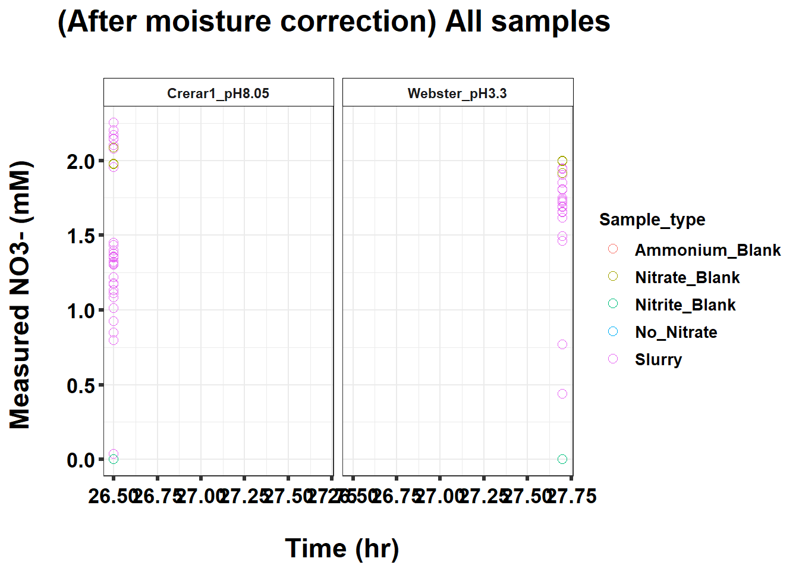
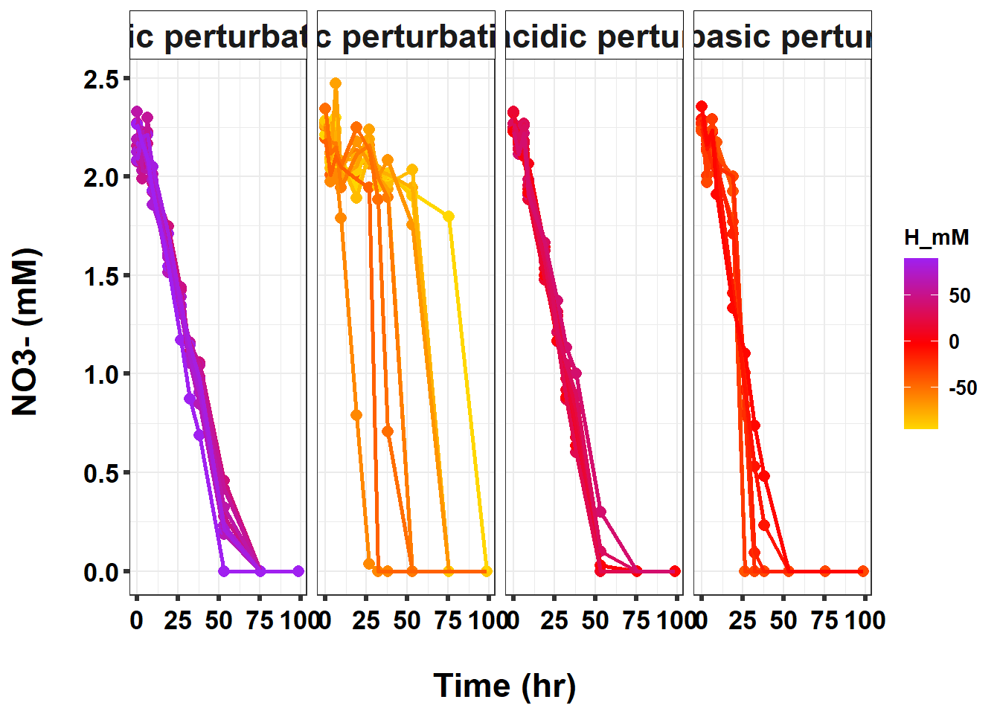

220327_Griess_3_soil_pH_perturbation
KiseokUchicago
2022-03-28
Last updated: 2022-04-12
Checks: 7 0
Knit directory: Denit_visualization_R/
This reproducible R Markdown analysis was created with workflowr (version 1.6.2). The Checks tab describes the reproducibility checks that were applied when the results were created. The Past versions tab lists the development history.
Great! Since the R Markdown file has been committed to the Git repository, you know the exact version of the code that produced these results.
Great job! The global environment was empty. Objects defined in the global environment can affect the analysis in your R Markdown file in unknown ways. For reproduciblity it’s best to always run the code in an empty environment.
The command set.seed(20210924) was run prior to running the code in the R Markdown file. Setting a seed ensures that any results that rely on randomness, e.g. subsampling or permutations, are reproducible.
Great job! Recording the operating system, R version, and package versions is critical for reproducibility.
Nice! There were no cached chunks for this analysis, so you can be confident that you successfully produced the results during this run.
Great job! Using relative paths to the files within your workflowr project makes it easier to run your code on other machines.
Great! You are using Git for version control. Tracking code development and connecting the code version to the results is critical for reproducibility.
The results in this page were generated with repository version 0b26fbd. See the Past versions tab to see a history of the changes made to the R Markdown and HTML files.
Note that you need to be careful to ensure that all relevant files for the analysis have been committed to Git prior to generating the results (you can use wflow_publish or wflow_git_commit). workflowr only checks the R Markdown file, but you know if there are other scripts or data files that it depends on. Below is the status of the Git repository when the results were generated:
Ignored files:
Ignored: .Rhistory
Ignored: .Rproj.user/
Untracked files:
Untracked: 220131_df_ammonia_bcf.xlsx
Untracked: data/120321_soil_buffering_capacity_Nichols-B.xlsx
Untracked: data/210911_TOC_sample_plate1.xlsx
Untracked: data/210922_Griess_sample_plate1-investigating.xlsx
Untracked: data/210922_Griess_sample_plate1.xlsx
Untracked: data/210927_TOC_sample_plate1_100ul.xlsx
Untracked: data/210927_TOC_sample_plate1_10ul.xlsx
Untracked: data/210928_Griess_sample_plate1.xlsx
Untracked: data/211005_Griess_sample_plate1.xlsx
Untracked: data/211007_Griess_blank_plate1.xlsx
Untracked: data/211007_Griess_blank_plate2.xlsx
Untracked: data/211008_Griess_blank_plate0.xlsx
Untracked: data/211008_Griess_blank_plate1.xlsx
Untracked: data/211017_Griess_plate0.xlsx
Untracked: data/211017_Griess_plate1.xlsx
Untracked: data/211017_Griess_plate2.xlsx
Untracked: data/211017_Griess_plate3.xlsx
Untracked: data/211017_Griess_plate4.xlsx
Untracked: data/211017_Griess_plate5.xlsx
Untracked: data/211017_Griess_plate6.xlsx
Untracked: data/211017_Griess_plate7.xlsx
Untracked: data/211017_Griess_plate8.xlsx
Untracked: data/211019_Griess_plate1.xlsx
Untracked: data/211020_Griess_plate0.xlsx
Untracked: data/211020_Griess_plate1.xlsx
Untracked: data/211020_df_full_innate.xlsx
Untracked: data/211025_Griess_no3_fit_plate0.xlsx
Untracked: data/211025_Griess_no3_fit_plate1.xlsx
Untracked: data/211025_Griess_plate0.xlsx
Untracked: data/211025_Griess_plate1.xlsx
Untracked: data/211028_Griess_plate1.xlsx
Untracked: data/211028_Griess_plate1_no3_fit.xlsx
Untracked: data/211028_Griess_plate2.xlsx
Untracked: data/211028_Griess_plate2_no3_fit.xlsx
Untracked: data/211028_Griess_plate3.xlsx
Untracked: data/211028_Griess_plate3_no3_fit.xlsx
Untracked: data/211028_Griess_plate4.xlsx
Untracked: data/211028_Griess_plate4_no3_fit.xlsx
Untracked: data/211028_time_table.xlsx
Untracked: data/211127_Griess_SUP1.xlsx
Untracked: data/211127_Griess_SUP11.xlsx
Untracked: data/211127_Griess_SUP3.xlsx
Untracked: data/211127_Griess_SUP5.xlsx
Untracked: data/211127_Griess_SUP7.xlsx
Untracked: data/211127_Griess_SUP9.xlsx
Untracked: data/211127_Griess_plate0.xlsx
Untracked: data/211127_time_table.xlsx
Untracked: data/211128_Griess_plate1.xlsx
Untracked: data/211128_Griess_plate10.xlsx
Untracked: data/211128_Griess_plate11.xlsx
Untracked: data/211128_Griess_plate2.xlsx
Untracked: data/211128_Griess_plate3.xlsx
Untracked: data/211128_Griess_plate4.xlsx
Untracked: data/211128_Griess_plate5.xlsx
Untracked: data/211128_Griess_plate6.xlsx
Untracked: data/211128_Griess_plate7.xlsx
Untracked: data/211128_Griess_plate8.xlsx
Untracked: data/211128_Griess_plate9.xlsx
Untracked: data/211128_time_table.xlsx
Untracked: data/211201_pH_colorimetric.xlsx
Untracked: data/211203_slurry_vs_water_drying_table.xlsx
Untracked: data/211203_slurry_vs_water_drying_time.xlsx
Untracked: data/211208_pH_colorimetric_T3.xlsx
Untracked: data/211208_pH_colorimetric_T4.xlsx
Untracked: data/211208_pH_colorimetric_T5.xlsx
Untracked: data/211208_pH_colorimetric_plate1.xlsx
Untracked: data/211208_pH_colorimetric_plate2.xlsx
Untracked: data/211208_pH_colorimetric_plate3.xlsx
Untracked: data/211208_time_table.xlsx
Untracked: data/211209_OD600_T1.xlsx
Untracked: data/211209_OD600_T2.xlsx
Untracked: data/211209_OD600_T3.xlsx
Untracked: data/211209_time_table.xlsx
Untracked: data/211210_pH_colorimetric_T0.xlsx
Untracked: data/211210_pH_colorimetric_T1.xlsx
Untracked: data/211210_pH_colorimetric_T2.xlsx
Untracked: data/211210_pH_colorimetric_T3.xlsx
Untracked: data/211210_time_table.xlsx
Untracked: data/211218_pH_colorimetric_t0.xlsx
Untracked: data/211218_pH_colorimetric_t1.xlsx
Untracked: data/211218_pH_colorimetric_t2.xlsx
Untracked: data/211218_pH_colorimetric_t3.xlsx
Untracked: data/211218_pH_colorimetric_t4.xlsx
Untracked: data/211218_time_table.xlsx
Untracked: data/211220_Griess_plate1.xlsx
Untracked: data/211220_Griess_plate10.xlsx
Untracked: data/211220_Griess_plate11.xlsx
Untracked: data/211220_Griess_plate2.xlsx
Untracked: data/211220_Griess_plate3.xlsx
Untracked: data/211220_Griess_plate4.xlsx
Untracked: data/211220_Griess_plate5.xlsx
Untracked: data/211220_Griess_plate6.xlsx
Untracked: data/211220_Griess_plate7.xlsx
Untracked: data/211220_Griess_plate8.xlsx
Untracked: data/211220_Griess_plate9.xlsx
Untracked: data/211220_time_table_AU.xlsx
Untracked: data/211220_time_table_BN.xlsx
Untracked: data/211224_TOC_sample_plate1.xlsx
Untracked: data/220103_Griess_T0.xlsx
Untracked: data/220103_Griess_T1.xlsx
Untracked: data/220103_Griess_T11.xlsx
Untracked: data/220103_Griess_T12.xlsx
Untracked: data/220103_Griess_T2.xlsx
Untracked: data/220103_Griess_T3.xlsx
Untracked: data/220103_Griess_T4.xlsx
Untracked: data/220103_Griess_T5.xlsx
Untracked: data/220103_Griess_T6.xlsx
Untracked: data/220103_Griess_T7.xlsx
Untracked: data/220103_Griess_T8.xlsx
Untracked: data/220103_Griess_T9.xlsx
Untracked: data/220103_time_table.xlsx
Untracked: data/220106_Ammonia_sample_plate1.xlsx
Untracked: data/220107-2_Ammonia_sample_plate1.xlsx
Untracked: data/220107-3_Ammonia_sample_plate1.xlsx
Untracked: data/220107-4_Ammonia_sample_plate1.xlsx
Untracked: data/220107-5_Ammonia_sample_plate1.xlsx
Untracked: data/220107-6_Ammonia_sample_plate1.xlsx
Untracked: data/220107-7_Ammonia_sample_plate1.xlsx
Untracked: data/220107-8_Ammonia_sample_plate1.xlsx
Untracked: data/220107-9_Ammonia_sample_plate1.xlsx
Untracked: data/220107_Ammonia_sample_plate1.xlsx
Untracked: data/220108_Ammonia_sample_plate1.xlsx
Untracked: data/220110_Ammonia_sample_plate1.xlsx
Untracked: data/220110_Ammonia_sample_plate2.xlsx
Untracked: data/220111_Ammonia_sample_T0.xlsx
Untracked: data/220111_Ammonia_sample_T1.xlsx
Untracked: data/220111_Ammonia_sample_T2.xlsx
Untracked: data/220111_Ammonia_sample_T3.xlsx
Untracked: data/220111_TOC_sample_plate1.xlsx
Untracked: data/220112_Ammonia_sample_T11.xlsx
Untracked: data/220112_Ammonia_sample_T12.xlsx
Untracked: data/220112_Ammonia_sample_T4.xlsx
Untracked: data/220112_Ammonia_sample_T5.xlsx
Untracked: data/220112_Ammonia_sample_T6.xlsx
Untracked: data/220112_Ammonia_sample_T7.xlsx
Untracked: data/220112_Ammonia_sample_T8.xlsx
Untracked: data/220112_Ammonia_sample_T9.xlsx
Untracked: data/220113_pH_colorimetric_T0.xlsx
Untracked: data/220113_pH_colorimetric_T12.xlsx
Untracked: data/220113_pH_colorimetric_T2.xlsx
Untracked: data/220113_pH_colorimetric_T3.xlsx
Untracked: data/220113_pH_colorimetric_T8.xlsx
Untracked: data/220125_pH_colorimetric_pH1_mu_opt0.099.xlsx
Untracked: data/220125_pH_colorimetric_pH1_using6.66.xlsx
Untracked: data/220125_pH_colorimetric_pH2_mu_opt0.099.xlsx
Untracked: data/220125_pH_colorimetric_pH2_using6.66.xlsx
Untracked: data/220125_time_table.xlsx
Untracked: data/220128_Ammonia_sample_plate1.xlsx
Untracked: data/220128_Ammonia_sample_plate2.xlsx
Untracked: data/220128_Ammonia_sample_plate3.xlsx
Untracked: data/220128_Ammonia_sample_plate4.xlsx
Untracked: data/220128_Ammonia_sample_plate5.xlsx
Untracked: data/220128_Ammonia_sample_plate6.xlsx
Untracked: data/220128_Griess_plate1.xlsx
Untracked: data/220128_Griess_plate2.xlsx
Untracked: data/220128_Griess_plate3.xlsx
Untracked: data/220128_Griess_plate4.xlsx
Untracked: data/220128_Griess_plate5.xlsx
Untracked: data/220128_Griess_plate6.xlsx
Untracked: data/220128_time_table.xlsx
Untracked: data/220131_Ammonia_sample_plate1.xlsx
Untracked: data/220131_Ammonia_sample_plate2.xlsx
Untracked: data/220131_Ammonia_sample_plate3.xlsx
Untracked: data/220131_Ammonia_sample_plate4.xlsx
Untracked: data/220131_Ammonia_sample_plate5.xlsx
Untracked: data/220131_Ammonia_sample_plate6.xlsx
Untracked: data/220131_Griess_plate1.xlsx
Untracked: data/220131_Griess_plate2.xlsx
Untracked: data/220131_Griess_plate3.xlsx
Untracked: data/220131_Griess_plate4.xlsx
Untracked: data/220131_Griess_plate5.xlsx
Untracked: data/220131_Griess_plate6.xlsx
Untracked: data/220131_pH_colorimetric_pH1_mu_opt_T0.xlsx
Untracked: data/220131_pH_colorimetric_pH2_mu_opt_T0.xlsx
Untracked: data/220131_time_table.xlsx
Untracked: data/220327_Griess_plate1.xlsx
Untracked: data/220327_Griess_plate10.xlsx
Untracked: data/220327_Griess_plate11.xlsx
Untracked: data/220327_Griess_plate12.xlsx
Untracked: data/220327_Griess_plate13.xlsx
Untracked: data/220327_Griess_plate14.xlsx
Untracked: data/220327_Griess_plate15.xlsx
Untracked: data/220327_Griess_plate16.xlsx
Untracked: data/220327_Griess_plate2.xlsx
Untracked: data/220327_Griess_plate3.xlsx
Untracked: data/220327_Griess_plate4.xlsx
Untracked: data/220327_Griess_plate5.xlsx
Untracked: data/220327_Griess_plate6.xlsx
Untracked: data/220327_Griess_plate7.xlsx
Untracked: data/220327_Griess_plate8.xlsx
Untracked: data/220327_Griess_plate9.xlsx
Untracked: data/220327_time_table.xlsx
Untracked: data/220329_pH_colorimetric_pH1_mu_opt_T0.xlsx
Untracked: data/220329_pH_colorimetric_pH2_mu_opt_T0.xlsx
Untracked: data/220329_pH_colorimetric_pH3_mu_opt_T0.xlsx
Untracked: data/220329_pH_colorimetric_pH4_mu_opt_T0.xlsx
Untracked: data/220329_pH_colorimetric_pH6_mu_opt_T0.xlsx
Untracked: data/220329_pH_colorimetric_pH7_mu_opt_T0.xlsx
Untracked: data/220407_pH_colorimetric_pH3_half_mu_opt_T0.xlsx
Untracked: data/220407_pH_colorimetric_pH_base_treatment_mu_opt_T0.xlsx
Untracked: data/220407_pH_colorimetric_pH_standard_150ul_mu_opt_T0.xlsx
Untracked: data/220407_pH_colorimetric_pH_standard_300ul_mu_opt_T0.xlsx
Untracked: data/220407_pH_colorimetric_pH_standard_60ul_mu_opt_T0.xlsx
Untracked: data/ForKiseok_from_Dr_Cuhel.xlsx
Untracked: data/ForKiseok_from_Dr_Cuhel_format_edited.xlsx
Untracked: data/OD434_OD585_C_WB_T5_220329.xlsx
Untracked: data/OD434_OD585_WW_C_T0_220329.xlsx
Untracked: data/OD434_OD585_pH3_half_area_220407.xlsx
Untracked: data/OD434_OD585_pH_base_treated_T0_220407.xlsx
Untracked: data/SPNa_86437_021122_edit.xlsx
Untracked: data/SPNa_86437_021122_edit2.xlsx
Untracked: data/TOC_TN_measurement_2_labs_211014.xlsx
Untracked: data/dry_weight_curve(9.5.21).xlsx
Untracked: data/pH_data(11.17.21)-Midway_etc.xlsx
Untracked: data/pH_data(12.6.21)-Midway_incubation_endpoint.xlsx
Untracked: data/pH_data(9.14.21).xlsx
Untracked: data/pH_data(9.28.21).xlsx
Untracked: data/pH_standard_150ul_220407.xlsx
Untracked: data/pH_standard_300ul_220407.xlsx
Untracked: data/pH_standard_60ul_220407.xlsx
Untracked: past_figures/
Unstaged changes:
Modified: analysis/220131_Ammonia_pH_perturbation3.Rmd
Note that any generated files, e.g. HTML, png, CSS, etc., are not included in this status report because it is ok for generated content to have uncommitted changes.
These are the previous versions of the repository in which changes were made to the R Markdown (analysis/220327_Griess_3_soil_pH_perturbation.Rmd) and HTML (docs/220327_Griess_3_soil_pH_perturbation.html) files. If you’ve configured a remote Git repository (see ?wflow_git_remote), click on the hyperlinks in the table below to view the files as they were in that past version.
| File | Version | Author | Date | Message |
|---|---|---|---|---|
| Rmd | 0b26fbd | KiseokUchicago | 2022-04-12 | wflow_publish(c(“analysis/220327_Griess_3_soil_pH_perturbation.Rmd”, |
Time series analysis - 3 soil pH perturbation experiment-4 (Griess assay)
Researcher: Kiseok Lee
Experiment Date: 3/6/22 - 3/10/22 (5 days)
Analysis Date: 3/28/22 Lab: Seppe Kuehn
# libraries
library(dplyr)Warning: package 'dplyr' was built under R version 4.0.5
Attaching package: 'dplyr'The following objects are masked from 'package:stats':
filter, lagThe following objects are masked from 'package:base':
intersect, setdiff, setequal, unionlibrary(ggplot2)Warning: package 'ggplot2' was built under R version 4.0.5library(RColorBrewer)
library(vegan)Loading required package: permuteLoading required package: latticeThis is vegan 2.5-7library(tidyverse)Warning: package 'tidyverse' was built under R version 4.0.5-- Attaching packages --------------------------------------- tidyverse 1.3.1 --v tibble 3.0.4 v purrr 0.3.4
v tidyr 1.1.3 v stringr 1.4.0
v readr 1.4.0 v forcats 0.5.1Warning: package 'tidyr' was built under R version 4.0.5-- Conflicts ------------------------------------------ tidyverse_conflicts() --
x dplyr::filter() masks stats::filter()
x dplyr::lag() masks stats::lag()library(magrittr)
Attaching package: 'magrittr'The following object is masked from 'package:purrr':
set_namesThe following object is masked from 'package:tidyr':
extractlibrary(readxl)
library(reshape2)
Attaching package: 'reshape2'The following object is masked from 'package:tidyr':
smithslibrary(gtools)
Attaching package: 'gtools'The following object is masked from 'package:permute':
permutelibrary(devtools)Warning: package 'devtools' was built under R version 4.0.5Loading required package: usethisWarning: package 'usethis' was built under R version 4.0.5
Attaching package: 'devtools'The following object is masked from 'package:permute':
checklibrary(openxlsx)
library(ape)Warning: package 'ape' was built under R version 4.0.5library(stringr)
library(tidyr)
library(ggrepel)Warning: package 'ggrepel' was built under R version 4.0.4library(ggpubr)Warning: package 'ggpubr' was built under R version 4.0.5
Attaching package: 'ggpubr'The following object is masked from 'package:ape':
rotate## theme for ggplot
mytheme <- theme_bw() +
theme(text = element_text(family="serif")) +
theme(plot.title = element_text(size = 19,hjust = 0.5, family="serif")) +
theme(axis.title.x = element_text(size = 17,hjust = 0.5, family="serif")) +
theme(axis.title.y = element_text(size = 17,hjust = 0.5, family="serif")) +
theme(axis.text.x = element_text(hjust = 0.5, vjust=0.3,size=13, family="serif"))+
theme(axis.text.y = element_text(size=10, family="serif"))+
theme(panel.grid.major = element_blank()) +
theme(panel.grid.minor = element_blank(),panel.background=element_blank(),panel.border=element_blank(),plot.background=element_blank()) +
theme(axis.ticks = element_line(size = 1.1))
mytheme_2d <- theme_bw() +
theme(text = element_text(family="serif")) +
theme(plot.title = element_text(size = 19,hjust = 0.5, family="serif")) +
theme(axis.title.x = element_text(size = 17,hjust = 0.5, family="serif")) +
theme(axis.title.y = element_text(size = 17,hjust = 0.5, family="serif")) +
theme(axis.text.x = element_text(hjust = 0.5, vjust=0.3,size=13, family="serif"))+
theme(axis.text.y = element_text(size=13, family="serif"))+
# theme(panel.grid.major = element_blank()) +
# theme(panel.grid.minor = element_blank(),panel.background=element_blank(),plot.background=element_blank()) +
theme(axis.ticks = element_line(size = 1.1))
# color collection
my_color_collection <- c(
"#CBD588", "#5F7FC7", "orange", "#AD6F3B", "#673770",
"#D14285", "#652926", "#C84248", "#8569D5", "#5E738F",
"#D1A33D", "#8A7C64", "#599861","#616163", "#FFCDB2",
"#6D9F71", "#242F40",
"#CCA43B", "#F92A82", "#ED7B84", "#7EB77F",
"#DEC4A1", "#E5D1D0", '#0E8482', '#C9DAEA', '#337357',
'#95C623', '#E55812', '#04471C', '#F2D7EE', '#D3BCC0',
'#A5668B', '#69306D', '#0E103D', '#1A535C', '#4ECDC4',
'#F7FFF7', '#FF6B6B', '#FFE66D', '#6699CC', '#FFF275',
'#FF8C42', '#FF3C38', '#A23E48', '#000000', '#CF5C36',
'#EEE5E9', '#7C7C7C', '#EFC88B', '#2E5266', '#6E8898',
'#9FB1BC', '#D3D0CB', '#E2C044', '#5BC0EB', '#FDE74C',
'#9BC53D', '#E55934', '#FA7921', "#CD9BCD", "#508578", "#DA5724")
# for git push, use this instead of using wflow_git_push()
# git push -u origin master (in the Git app / in the working directory)
# for making pdf file
library(rmarkdown)Warning: package 'rmarkdown' was built under R version 4.0.5# render("analysis/~~.Rmd", "pdf_document")1. Import data table from python code
We are going to use the vcl3 treated standard curve that is fitted with pure nitrate standards
# import file
df_plate1 <- openxlsx::read.xlsx("data/220327_Griess_plate1.xlsx")
df_plate2 <- openxlsx::read.xlsx("data/220327_Griess_plate2.xlsx")
df_plate3 <- openxlsx::read.xlsx("data/220327_Griess_plate3.xlsx")
df_plate4 <- openxlsx::read.xlsx("data/220327_Griess_plate4.xlsx")
df_plate5 <- openxlsx::read.xlsx("data/220327_Griess_plate5.xlsx")
df_plate6 <- openxlsx::read.xlsx("data/220327_Griess_plate6.xlsx")
df_plate7 <- openxlsx::read.xlsx("data/220327_Griess_plate7.xlsx")
df_plate8 <- openxlsx::read.xlsx("data/220327_Griess_plate8.xlsx")
df_plate9 <- openxlsx::read.xlsx("data/220327_Griess_plate9.xlsx")
df_plate10 <- openxlsx::read.xlsx("data/220327_Griess_plate10.xlsx")
df_plate11 <- openxlsx::read.xlsx("data/220327_Griess_plate11.xlsx")
df_plate12 <- openxlsx::read.xlsx("data/220327_Griess_plate12.xlsx")
df_plate13 <- openxlsx::read.xlsx("data/220327_Griess_plate13.xlsx")
df_plate14 <- openxlsx::read.xlsx("data/220327_Griess_plate14.xlsx")
df_plate15 <- openxlsx::read.xlsx("data/220327_Griess_plate15.xlsx")
df_plate16 <- openxlsx::read.xlsx("data/220327_Griess_plate16.xlsx")
head(df_plate1) Well Nitrite_input Nitrate_input Ammonium_input Soil
1 A01 0 2 0 WarrenWoods1_pH5.23
2 A02 0 2 0 WarrenWoods1_pH5.23
3 A03 0 2 0 WarrenWoods1_pH5.23
4 A04 0 2 0 WarrenWoods1_pH5.23
5 A05 0 2 0 WarrenWoods1_pH5.23
6 A06 0 2 0 WarrenWoods1_pH5.23
Sample_type Titration_type Unit Concentration_M Added_ul Time_point NO2_OD540
1 Slurry HCl 1 0.5 20 WW_T0 0.00015
2 Slurry HCl 3 1.5 20 WW_T0 0.00050
3 Slurry HCl 5 2.5 20 WW_T0 0.00100
4 Slurry HCl 7 3.5 20 WW_T0 0.00205
5 Slurry HCl 9 4.5 20 WW_T0 0.00215
6 Slurry HCl 11 5.5 20 WW_T0 0.00350
NO2NO3_OD540 NO2_mM NO2NO3_mM NO3_mM
1 0.86270 0.006694917 0.8352607 0.8285658
2 0.82970 0.006875877 0.8008043 0.7939285
3 0.86450 0.007134397 0.8371460 0.8300116
4 0.97520 0.007677320 0.9542987 0.9466214
5 0.83965 0.007729029 0.8111719 0.8034429
6 0.80860 0.008427132 0.7788796 0.7704525colnames(df_plate1) [1] "Well" "Nitrite_input" "Nitrate_input" "Ammonium_input"
[5] "Soil" "Sample_type" "Titration_type" "Unit"
[9] "Concentration_M" "Added_ul" "Time_point" "NO2_OD540"
[13] "NO2NO3_OD540" "NO2_mM" "NO2NO3_mM" "NO3_mM" dim(df_plate1)[1] 96 16head(df_plate2) X1 Nitrite_input Nitrate_input Ammonium_input Soil Sample_type
1 A01 0 2 0 Webster_pH3.3 Slurry
2 A02 0 2 0 Webster_pH3.3 Slurry
3 A03 0 2 0 Webster_pH3.3 Slurry
4 A04 0 2 0 Webster_pH3.3 Slurry
5 A05 0 2 0 Webster_pH3.3 Slurry
6 A06 0 2 0 Webster_pH3.3 Slurry
Titration_type Unit Concentration_M Added_ul Time_point NO2_OD540
1 HCl 1 0.5 20 WB_T0 0.00390
2 HCl 3 1.5 20 WB_T0 0.00205
3 HCl 5 2.5 20 WB_T0 0.00320
4 HCl 7 3.5 20 WB_T0 0.00310
5 HCl 9 4.5 20 WB_T0 0.00345
6 HCl 11 5.5 20 WB_T0 0.00260
NO2NO3_OD540 NO2_mM NO2NO3_mM NO3_mM
1 0.70750 0.008633990 0.6749487 0.6663147
2 0.61825 0.007677320 0.5846855 0.5770082
3 0.60970 0.008271992 0.5761092 0.5678372
4 0.60440 0.008220280 0.5707989 0.5625786
5 0.60075 0.008401275 0.5671446 0.5587433
6 0.63110 0.007961723 0.5975981 0.5896364colnames(df_plate2) [1] "X1" "Nitrite_input" "Nitrate_input" "Ammonium_input"
[5] "Soil" "Sample_type" "Titration_type" "Unit"
[9] "Concentration_M" "Added_ul" "Time_point" "NO2_OD540"
[13] "NO2NO3_OD540" "NO2_mM" "NO2NO3_mM" "NO3_mM" dim(df_plate2)[1] 96 16head(df_plate3) X1 Nitrite_input Nitrate_input Ammonium_input Soil Sample_type
1 A01 0 2 0 Crerar1_pH8.05 Slurry
2 A02 0 2 0 Crerar1_pH8.05 Slurry
3 A03 0 2 0 Crerar1_pH8.05 Slurry
4 A04 0 2 0 Crerar1_pH8.05 Slurry
5 A05 0 2 0 Crerar1_pH8.05 Slurry
6 A06 0 2 0 Crerar1_pH8.05 Slurry
Titration_type Unit Concentration_M Added_ul Time_point NO2_OD540
1 HCl 1 0.5 20 C_T1 0.00240
2 HCl 3 1.5 20 C_T1 0.00285
3 HCl 5 2.5 20 C_T1 0.00350
4 HCl 7 3.5 20 C_T1 0.00475
5 HCl 9 4.5 20 C_T1 0.00435
6 HCl 11 5.5 20 C_T1 0.00460
NO2NO3_OD540 NO2_mM NO2NO3_mM NO3_mM
1 0.88295 0.007858302 0.8565062 0.8486479
2 0.87600 0.008091000 0.8492057 0.8411147
3 0.86960 0.008427132 0.8424911 0.8340640
4 0.85810 0.009073581 0.8304454 0.8213718
5 0.81190 0.008866711 0.7823032 0.7734364
6 0.82680 0.008996004 0.7977861 0.7887901colnames(df_plate3) [1] "X1" "Nitrite_input" "Nitrate_input" "Ammonium_input"
[5] "Soil" "Sample_type" "Titration_type" "Unit"
[9] "Concentration_M" "Added_ul" "Time_point" "NO2_OD540"
[13] "NO2NO3_OD540" "NO2_mM" "NO2NO3_mM" "NO3_mM" dim(df_plate3)[1] 96 16head(df_plate4) Well Nitrite_input Nitrate_input Ammonium_input Soil
1 A01 0 2 0 WarrenWoods1_pH5.23
2 A02 0 2 0 WarrenWoods1_pH5.23
3 A03 0 2 0 WarrenWoods1_pH5.23
4 A04 0 2 0 WarrenWoods1_pH5.23
5 A05 0 2 0 WarrenWoods1_pH5.23
6 A06 0 2 0 WarrenWoods1_pH5.23
Sample_type Titration_type Unit Concentration_M Added_ul Time_point NO2_OD540
1 Slurry HCl 1 0.5 20 WW_T2 0.00015
2 Slurry HCl 3 1.5 20 WW_T2 0.00095
3 Slurry HCl 5 2.5 20 WW_T2 0.00135
4 Slurry HCl 7 3.5 20 WW_T2 0.00250
5 Slurry HCl 9 4.5 20 WW_T2 0.00275
6 Slurry HCl 11 5.5 20 WW_T2 0.00425
NO2NO3_OD540 NO2_mM NO2NO3_mM NO3_mM
1 0.82420 0.006694917 0.7950814 0.7883865
2 0.76235 0.007108545 0.7311071 0.7239986
3 0.82925 0.007315367 0.8003359 0.7930205
4 0.77950 0.007910012 0.7487764 0.7408663
5 0.76855 0.008039289 0.7374887 0.7294494
6 0.76580 0.008814995 0.7346573 0.7258423colnames(df_plate4) [1] "Well" "Nitrite_input" "Nitrate_input" "Ammonium_input"
[5] "Soil" "Sample_type" "Titration_type" "Unit"
[9] "Concentration_M" "Added_ul" "Time_point" "NO2_OD540"
[13] "NO2NO3_OD540" "NO2_mM" "NO2NO3_mM" "NO3_mM" dim(df_plate4)[1] 96 16head(df_plate5) X1 Nitrite_input Nitrate_input Ammonium_input Soil Sample_type
1 A01 0 2 0 Webster_pH3.3 Slurry
2 A02 0 2 0 Webster_pH3.3 Slurry
3 A03 0 2 0 Webster_pH3.3 Slurry
4 A04 0 2 0 Webster_pH3.3 Slurry
5 A05 0 2 0 Webster_pH3.3 Slurry
6 A06 0 2 0 Webster_pH3.3 Slurry
Titration_type Unit Concentration_M Added_ul Time_point NO2_OD540
1 HCl 1 0.5 20 WB_T2 0.00395
2 HCl 3 1.5 20 WB_T2 0.00255
3 HCl 5 2.5 20 WB_T2 0.00345
4 HCl 7 3.5 20 WB_T2 0.00275
5 HCl 9 4.5 20 WB_T2 0.00375
6 HCl 11 5.5 20 WB_T2 0.00505
NO2NO3_OD540 NO2_mM NO2NO3_mM NO3_mM
1 0.69370 0.008659847 0.6609027 0.6522429
2 0.65225 0.007935867 0.6189115 0.6109757
3 0.60175 0.008401275 0.5681455 0.5597443
4 0.62210 0.008039289 0.5885514 0.5805121
5 0.62330 0.008556417 0.5897568 0.5812004
6 0.67075 0.009228736 0.6376167 0.6283880colnames(df_plate5) [1] "X1" "Nitrite_input" "Nitrate_input" "Ammonium_input"
[5] "Soil" "Sample_type" "Titration_type" "Unit"
[9] "Concentration_M" "Added_ul" "Time_point" "NO2_OD540"
[13] "NO2NO3_OD540" "NO2_mM" "NO2NO3_mM" "NO3_mM" dim(df_plate5)[1] 96 16head(df_plate6) X1 Nitrite_input Nitrate_input Ammonium_input Soil Sample_type
1 A01 0 2 0 Crerar1_pH8.05 Slurry
2 A02 0 2 0 Crerar1_pH8.05 Slurry
3 A03 0 2 0 Crerar1_pH8.05 Slurry
4 A04 0 2 0 Crerar1_pH8.05 Slurry
5 A05 0 2 0 Crerar1_pH8.05 Slurry
6 A06 0 2 0 Crerar1_pH8.05 Slurry
Titration_type Unit Concentration_M Added_ul Time_point NO2_OD540
1 HCl 1 0.5 20 C_T3 0.03565
2 HCl 3 1.5 20 C_T3 0.04660
3 HCl 5 2.5 20 C_T3 0.03865
4 HCl 7 3.5 20 C_T3 0.03220
5 HCl 9 4.5 20 C_T3 0.03930
6 HCl 11 5.5 20 C_T3 0.04450
NO2NO3_OD540 NO2_mM NO2NO3_mM NO3_mM
1 0.84645 0.02507103 0.8182680 0.7931969
2 0.78430 0.03074801 0.7537312 0.7229832
3 0.79180 0.02662595 0.7614816 0.7348556
4 0.78565 0.02328326 0.7551255 0.7318423
5 0.81215 0.02696289 0.7825626 0.7555997
6 0.83035 0.02965895 0.8014810 0.7718221colnames(df_plate6) [1] "X1" "Nitrite_input" "Nitrate_input" "Ammonium_input"
[5] "Soil" "Sample_type" "Titration_type" "Unit"
[9] "Concentration_M" "Added_ul" "Time_point" "NO2_OD540"
[13] "NO2NO3_OD540" "NO2_mM" "NO2NO3_mM" "NO3_mM" dim(df_plate6)[1] 96 16head(df_plate16) Well Nitrite_input Nitrate_input Ammonium_input Soil
1 A01 0 2 0 WarrenWoods1_pH5.23
2 A02 0 2 0 WarrenWoods1_pH5.23
3 A03 0 2 0 WarrenWoods1_pH5.23
4 A04 0 2 0 WarrenWoods1_pH5.23
5 A05 0 2 0 WarrenWoods1_pH5.23
6 A06 0 2 0 WarrenWoods1_pH5.23
Sample_type Titration_type Unit Concentration_M Added_ul Time_point NO2_OD540
1 Slurry HCl 1 0.5 20 WW_T10 0.12430
2 Slurry HCl 3 1.5 20 WW_T10 0.00010
3 Slurry HCl 5 2.5 20 WW_T10 0.00160
4 Slurry HCl 7 3.5 20 WW_T10 0.00200
5 Slurry HCl 9 4.5 20 WW_T10 0.00350
6 Slurry HCl 11 5.5 20 WW_T10 0.00375
NO2NO3_OD540 NO2_mM NO2NO3_mM NO3_mM
1 0.06720 0.071152116 0.05478688 0.0000000
2 0.73470 0.006669066 0.70273097 0.6960619
3 0.77290 0.007444634 0.74197025 0.7345256
4 0.79765 0.007651465 0.76753394 0.7598825
5 0.85270 0.008427132 0.82479774 0.8163706
6 0.86190 0.008556417 0.83442294 0.8258665colnames(df_plate16) [1] "Well" "Nitrite_input" "Nitrate_input" "Ammonium_input"
[5] "Soil" "Sample_type" "Titration_type" "Unit"
[9] "Concentration_M" "Added_ul" "Time_point" "NO2_OD540"
[13] "NO2NO3_OD540" "NO2_mM" "NO2NO3_mM" "NO3_mM" dim(df_plate16)[1] 96 16# X1 to Well
df_plate1 %<>% rename(Well = X1)Error: Can't rename columns that don't exist.
x Column `X1` doesn't exist.df_plate2 %<>% rename(Well = X1)
df_plate3 %<>% rename(Well = X1)
df_plate4 %<>% rename(Well = X1)Error: Can't rename columns that don't exist.
x Column `X1` doesn't exist.df_plate5 %<>% rename(Well = X1)
df_plate6 %<>% rename(Well = X1)
df_plate7 %<>% rename(Well = X1)Error: Can't rename columns that don't exist.
x Column `X1` doesn't exist.df_plate8 %<>% rename(Well = X1)
df_plate9 %<>% rename(Well = X1)
df_plate10 %<>% rename(Well = X1)Error: Can't rename columns that don't exist.
x Column `X1` doesn't exist.df_plate11 %<>% rename(Well = X1)
df_plate12 %<>% rename(Well = X1)
df_plate13 %<>% rename(Well = X1)Error: Can't rename columns that don't exist.
x Column `X1` doesn't exist.df_plate14 %<>% rename(Well = X1)
df_plate15 %<>% rename(Well = X1)
df_plate16 %<>% rename(Well = X1)Error: Can't rename columns that don't exist.
x Column `X1` doesn't exist.# remove wells that were contaminated during the experiment
df_plate4 %<>% filter(!(Well %in% c("A12", "B12"))) # filter defect
df_plate12 %<>% filter(!(Well %in% c("A01"))) # filter defect
# df_p6 %<>% filter(!(Well %in% c("A11"))) # filter burst issue
# df_p8 %<>% filter(!(Well %in% c("A07", "A08", "E08"))) # filter burst issue
# df_p11 %<>% filter(!(Well %in% c("A01"))) # filter burst issue # G11 was removed because of abnormal value compared to other 2 replicates
# dim(df_p4)
# bind two dataframe
df_p <- rbind(df_plate1, df_plate2, df_plate3, df_plate4, df_plate5, df_plate6, df_plate7, df_plate8, df_plate9, df_plate10, df_plate11, df_plate12,
df_plate13, df_plate14, df_plate15, df_plate16)
dim(df_p)[1] 1533 16# remove NA
dim(df_p) # 1533[1] 1533 16df_p[is.na(df_p)] [1] NA NA NA NA NA NA NA NA NA NA NA NA NA NA NA NA NA NA NA NA NA NA NA NA NA
[26] NA NA NA NA NA NA NA NA NA NA NA NA NA NA NA NA NA NA NA NA NA NA NA NA NA
[51] NA NA NA NA NA NA NA NA NA NA NA NA NA NA NA NA NA NA NA NA NA NA NA NA NA
[76] NA NA NA NA NA NA NA NA NA NA NA NA NA NA NA NA NA NA NA NA NA NA NA NA NA
[101] NA NA NA NA NA NA NA NA NA NA NA NA NA NA NA NA NA NA NA NA NA NA NA NA NA
[126] NA NA NA NA NA NA NA NA NA NA NA NA NA NA NA NA NA NA NA NA NA NA NA NA NA
[151] NA NA NA NA NA NA NA NA NA NA NA NA NA NA NA NA NA NA NA NA NA NA NA NA NA
[176] NA NA NA NA NA NA NA NA NA NA NA NA NA NA NA NA NA NA NA NA NA NA NA NA NA
[201] NA NA NA NA NA NA NA NA NA NA NA NA NA NA NA NA NA NA NA NA NA NA NA NA NA
[226] NA NA NA NA NA NA NA NA NA NA NA NA NA NA NA NA NA NA NA NA NA NA NA NA NA
[251] NA NA NA NA NA NA NA NA NA NA NA NA NA NA NA NA NA NA NA NA NA NA NA NA NA
[276] NA NA NA NA NA NA NA NA NA NA NA NA NA NA NA NA NA NA NA NA NA NA NA NA NA
[301] NA NA NA NA NA NA NA NA NA NA NA NA NA NA NA NA NA NA NA NA NA NA NA NA NA
[326] NA NA NA NA NA NA NA NA NA NA NA NA NA NA NA NA NA NA NA NA NA NA NA NA NA
[351] NA NA NA NA NA NA NA NA NA NA NA NA NA NA NA NA NA NA NA NA NA NA NA NA NA
[376] NA NA NA NA NA NA NA NA NA NA NA NA NA NA NA NA NA NA NA NA NA NA NA NA NA
[401] NA NA NA NA NA NA NA NA NA NA NA NA NA NA NA NA NA NA NA NA NA NA NA NA NA
[426] NA NA NA NA NA NA NA NA NA NA NA NA NA NA NA NA NA NA NA NA NA NA NA NA NA
[451] NA NA NA NA NA NA NA NA NA NA NA NA NA NA NA NA NA NA NA NA NA NA NA NA NA
[476] NA NA NA NA NA NA NA NA NA NA NA NA NA NA NA NA NA NA NA NA NA NA NA NA NA
[501] NA NA NA NA NA NA NA NA NA NA NA NA NA NA NA NA NA NA NA NA NA NA NA NA NA
[526] NA NA NA NA NA NA NA NA NA NA NA NA NA NA NA NA NA NA NA NA NA NA NA NA NA
[551] NA NA NA NA NA NA NA NA NA NA NA NA NA NA NA NA NA NA NA NA NA NA NA NA NA
[576] NA NA NA NA NA NA NA NA NA NA NA NA NA NA NA NA NA NA NA NA NA NA NA NA NA
[601] NA NA NA NA NA NA NA NA NA NA NA NA NA NA NA NA NA NA NA NA NA NA NA NA NA
[626] NA NA NA NA NA NA NA NA NA NA NA NA NA NA NA NA NA NA NA NA NA NA NA NA NA
[651] NA NA NA NA NA NA NA NA NA NA NA NA NA NA NA NA NA NA NA NA NA NA NA NA NA
[676] NA NA NA NA NA NA NA NA NA NA NA NA NA NA NA NA NA NA NA NA NA NA NA NA NA
[701] NA NA NA NA NA NA NA NA NA NA NA NA NA NA NA NA NA NA NA NA NA NA NA NA NA
[726] NA NA NA NA NA NA NA NA NA NA NA NA NA NA NA NA NA NA NA NA NA NA NA NA NA
[751] NA NA NA NA NA NA NA NA NA NA NA NA NA NA NA NA NA NA NA NA NA NA NA NA NA
[776] NA NA NA NA NA NA NA NA NA NA NA NA NA NA NA NA NA NA NA NA NA NA NA NA NA
[801] NA NA NA NA NA NA NA NA NA NA NA NA NA NA NA NA NA NA NAdf_na <- df_p[rowSums(is.na(df_p)) > 0,]
# df_p <- na.omit(df_p)
df_p <- df_p[rowSums(is.na(df_p)) == 0,]
dim(df_p) # 1448[1] 1448 16# multiply dilution factor which is 5/2
# df_p %<>% select(-NO2_OD540, -NO2NO3_OD540)
df_p %<>% mutate(NO2_mM = NO2_mM * (5/2), NO2NO3_mM = NO2NO3_mM * (5/2), NO3_mM = NO3_mM * (5/2))
# Get the metadata for time point and left join
Time_table <- openxlsx::read.xlsx("data/220327_time_table.xlsx")
# Time_table_BN <- openxlsx::read.xlsx("data/220327_time_table_BN.xlsx")
# Time_table <- rbind(Time_table_AU, Time_table_BN)
Time_table %<>% select(-Date)
Time_table$Time_hours <- round(Time_table$Time_hours, 1)
Time_table$Time_days <- round(Time_table$Time_days, 1)
df_time <- Time_table
dim(df_p)[1] 1448 16df_p <- df_p %>% left_join(Time_table, by=("Time_point"="Time_point"))
dim(df_p)[1] 1448 19colnames(df_p) [1] "Well" "Nitrite_input" "Nitrate_input" "Ammonium_input"
[5] "Soil" "Sample_type" "Titration_type" "Unit"
[9] "Concentration_M" "Added_ul" "Time_point" "NO2_OD540"
[13] "NO2NO3_OD540" "NO2_mM" "NO2NO3_mM" "NO3_mM"
[17] "Time_minutes" "Time_hours" "Time_days" # time_point order
# df_p$Time_point <- factor(df_p$Time_point, levels = paste0("T",0:10))2. Get average and standard deviation & Moisture correction & Blank correction
# plot to see
ggplot(df_p, aes(x=Time_point, y=NO3_mM, color=Sample_type, group=Sample_type)) +
geom_point(size=2.5, shape=21) +
# geom_line(size=1)+
scale_fill_brewer(palette='Set2') +
ylab("NO3- (mM) \n") +
xlab("\n Nitrate_spike_in (mM)") +
# scale_y_continuous(breaks = seq(0,0.3,0.05), limits=c(0, 0.3))+
ggtitle("Without averaging \n") +
mytheme_2d
# plot to see
ggplot(df_p, aes(x=Time_point, y=NO2_mM, color=Sample_type, group=Sample_type)) +
geom_point(size=2.5, shape=21) +
# geom_line(size=1)+
scale_fill_brewer(palette='Set2') +
ylab("NO2- (mM) \n") +
xlab("\n Nitrite_spike_in (mM)") +
# scale_y_continuous(breaks = seq(0,0.3,0.05), limits=c(0, 0.3))+
ggtitle("Without averaging \n") +
mytheme_2d
# hmmm.. why over shooting of NO3-
# average technical replicate (here only 1 replicate per pH perturbation)
colnames(df_p) [1] "Well" "Nitrite_input" "Nitrate_input" "Ammonium_input"
[5] "Soil" "Sample_type" "Titration_type" "Unit"
[9] "Concentration_M" "Added_ul" "Time_point" "NO2_OD540"
[13] "NO2NO3_OD540" "NO2_mM" "NO2NO3_mM" "NO3_mM"
[17] "Time_minutes" "Time_hours" "Time_days" dim(df_p)[1] 1448 19# df_p <- df_p %>% group_by(Nitrite_input, Nitrate_input, Soil, Titration_type, Concentration_M, Added_ul, Sample_type, Time_point, Time_minutes, Time_hours, Time_days) %>% summarise(NO2_mM = mean(NO2_mM), Std_NO2_mM = sd(NO2_mM), NO3_mM = mean(NO3_mM), Std_NO3_mM = sd(NO3_mM)) %>% ungroup()
# mols and molarity unit conversion
# test
df_p$Titration_type %>% length()[1] 1448# Setting H_mM column
# df_soil <- df_p %>% filter(Titration_type %in% c("NaOH","HCl"))
Added_Volume <- 1.7 # ml
Soil_mg <- 0.85
moisture_percent_1 = 63.1 # Webster
Added_Volume + Soil_mg*(moisture_percent_1/100)[1] 2.23635moisture_percent_2 = 6.8 # WarrenWoods1
Added_Volume + Soil_mg*(moisture_percent_2/100)[1] 1.7578moisture_percent_3 = 9.0 # Crerar7
Added_Volume + Soil_mg*(moisture_percent_3/100)[1] 1.7765df_p$Added_ul <- ifelse(df_p$Titration_type == "NaOH", -1*df_p$Added_ul, df_p$Added_ul) # HCl is +, NaOH is -
df_p %<>% mutate(H_mol = Concentration_M * Added_ul * 10^(-6)) # Calculate H mol
df_p$Volume <- ifelse(df_p$Soil == "Webster_pH3.3", Added_Volume + Soil_mg*(moisture_percent_1/100),
ifelse(df_p$Soil == "WarrenWoods1_pH5.23", Added_Volume + Soil_mg*(moisture_percent_2/100),
ifelse(df_p$Soil == "Crerar1_pH8.05", Added_Volume + Soil_mg*(moisture_percent_3/100),
0))) # Calc total volume
# df_p$Volume <- ifelse(df_p$Soil == "Allandale_pH4", Added_Volume + Soil_mg*(moisture_percent_2/100), df_p$Volume) # Calc total volume
# df_p$Volume %>% unique()
df_p %<>% mutate(H_Molarity = H_mol / (Volume * 10^(-3)))
df_p %<>% mutate(H_mM = H_Molarity * 1000)
# openxlsx::write.xlsx(df_p, "df_p.xlsx")
# how many levels of H_mM?
df_p %>% filter(Soil == "Webster_pH3.3")%>% select(H_mM) %>% unique() %>% arrange(H_mM) H_mM
1 -58.130436
2 -53.658864
3 -49.187292
4 -44.715720
5 -40.244148
6 -35.772576
7 -31.301004
8 -26.829432
9 -22.357860
10 -17.886288
11 -13.414716
12 -8.943144
13 -4.471572
14 0.000000
15 4.471572
16 8.943144
17 13.414716
18 17.886288
19 22.357860
20 26.829432
21 31.301004
22 35.772576
23 40.244148
24 44.715720
25 49.187292
26 53.658864df_p %>% filter(Soil == "WarrenWoods1_pH5.23")%>% select(H_mM) %>% unique() %>% arrange() H_mM
1 5.688929
2 17.066788
3 28.444647
4 39.822505
5 51.200364
6 62.578223
7 11.377859
8 22.755717
9 34.133576
10 45.511435
11 56.889293
12 68.267152
13 73.956081
14 85.333940
15 -5.688929
16 -17.066788
17 -28.444647
18 -39.822505
19 79.645011
20 91.022869
21 -11.377859
22 -22.755717
23 -34.133576
24 -45.511435
25 -51.200364
26 -62.578223
27 -73.956081
28 -85.333940
29 -96.711799
30 0.000000
31 -56.889293
32 -68.267152
33 -79.645011
34 -91.022869df_p %>% filter(Soil == "Crerar1_pH8.05")%>% select(H_mM) %>% unique() %>% arrange() H_mM
1 5.629046
2 16.887138
3 28.145229
4 39.403321
5 50.661413
6 61.919505
7 11.258092
8 22.516184
9 33.774275
10 45.032367
11 56.290459
12 67.548551
13 73.177596
14 84.435688
15 -5.629046
16 -16.887138
17 -28.145229
18 -39.403321
19 78.806642
20 90.064734
21 -11.258092
22 -22.516184
23 -33.774275
24 -45.032367
25 -50.661413
26 -61.919505
27 -73.177596
28 -84.435688
29 -95.693780
30 0.000000
31 -56.290459
32 -67.548551
33 -78.806642
34 -90.064734colnames(df_p) [1] "Well" "Nitrite_input" "Nitrate_input" "Ammonium_input"
[5] "Soil" "Sample_type" "Titration_type" "Unit"
[9] "Concentration_M" "Added_ul" "Time_point" "NO2_OD540"
[13] "NO2NO3_OD540" "NO2_mM" "NO2NO3_mM" "NO3_mM"
[17] "Time_minutes" "Time_hours" "Time_days" "H_mol"
[21] "Volume" "H_Molarity" "H_mM" ## Moisture correction
dim(df_p)[1] 1448 23# Testing negative samples
df_no3_blank <- df_p %>% filter(Sample_type == "Nitrate_Blank") # Use Nitrate_Blank instead in the future
df_no3_blank # 33 Well Nitrite_input Nitrate_input Ammonium_input Soil
1 G06 0 2 0 WarrenWoods1_pH5.23
2 G12 0 2 0 Crerar1_pH8.05
3 H05 0 2 0 WarrenWoods1_pH5.23
4 H06 0 2 0 WarrenWoods1_pH5.23
5 H11 0 2 0 Crerar1_pH8.05
6 H12 0 2 0 Crerar1_pH8.05
7 G06 0 2 0 Webster_pH3.3
8 G12 0 2 0 WarrenWoods1_pH5.23
9 H05 0 2 0 Webster_pH3.3
10 H06 0 2 0 Webster_pH3.3
11 H11 0 2 0 WarrenWoods1_pH5.23
12 H12 0 2 0 WarrenWoods1_pH5.23
13 G06 0 2 0 Crerar1_pH8.05
14 G12 0 2 0 Webster_pH3.3
15 H05 0 2 0 Crerar1_pH8.05
16 H06 0 2 0 Crerar1_pH8.05
17 H11 0 2 0 Webster_pH3.3
18 H12 0 2 0 Webster_pH3.3
19 G06 0 2 0 WarrenWoods1_pH5.23
20 G12 0 2 0 Crerar1_pH8.05
21 H05 0 2 0 WarrenWoods1_pH5.23
22 H06 0 2 0 WarrenWoods1_pH5.23
23 H11 0 2 0 Crerar1_pH8.05
24 H12 0 2 0 Crerar1_pH8.05
25 G06 0 2 0 Webster_pH3.3
26 G12 0 2 0 WarrenWoods1_pH5.23
27 H05 0 2 0 Webster_pH3.3
28 H06 0 2 0 Webster_pH3.3
29 H11 0 2 0 WarrenWoods1_pH5.23
30 H12 0 2 0 WarrenWoods1_pH5.23
31 G06 0 2 0 Crerar1_pH8.05
32 G12 0 2 0 Webster_pH3.3
33 H05 0 2 0 Crerar1_pH8.05
34 H06 0 2 0 Crerar1_pH8.05
35 H11 0 2 0 Webster_pH3.3
36 H12 0 2 0 Webster_pH3.3
37 G06 0 2 0 WarrenWoods1_pH5.23
38 G12 0 2 0 Crerar1_pH8.05
39 H05 0 2 0 WarrenWoods1_pH5.23
40 H06 0 2 0 WarrenWoods1_pH5.23
41 H11 0 2 0 Crerar1_pH8.05
42 H12 0 2 0 Crerar1_pH8.05
43 G06 0 2 0 Webster_pH3.3
44 G12 0 2 0 WarrenWoods1_pH5.23
45 H05 0 2 0 Webster_pH3.3
46 H06 0 2 0 Webster_pH3.3
47 H11 0 2 0 WarrenWoods1_pH5.23
48 H12 0 2 0 WarrenWoods1_pH5.23
49 G06 0 2 0 Crerar1_pH8.05
50 G12 0 2 0 Webster_pH3.3
51 H05 0 2 0 Crerar1_pH8.05
52 H06 0 2 0 Crerar1_pH8.05
53 H11 0 2 0 Webster_pH3.3
54 H12 0 2 0 Webster_pH3.3
55 G06 0 2 0 WarrenWoods1_pH5.23
56 G12 0 2 0 Crerar1_pH8.05
57 H05 0 2 0 WarrenWoods1_pH5.23
58 H06 0 2 0 WarrenWoods1_pH5.23
59 H11 0 2 0 Crerar1_pH8.05
60 H12 0 2 0 Crerar1_pH8.05
61 G06 0 2 0 Webster_pH3.3
62 G12 0 2 0 WarrenWoods1_pH5.23
63 H05 0 2 0 Webster_pH3.3
64 H06 0 2 0 Webster_pH3.3
65 H11 0 2 0 WarrenWoods1_pH5.23
66 H12 0 2 0 WarrenWoods1_pH5.23
67 G06 0 2 0 Crerar1_pH8.05
68 G12 0 2 0 Webster_pH3.3
69 H05 0 2 0 Crerar1_pH8.05
70 H06 0 2 0 Crerar1_pH8.05
71 H11 0 2 0 Webster_pH3.3
72 H12 0 2 0 Webster_pH3.3
73 G06 0 2 0 WarrenWoods1_pH5.23
74 G12 0 2 0 Crerar1_pH8.05
75 H05 0 2 0 WarrenWoods1_pH5.23
76 H06 0 2 0 WarrenWoods1_pH5.23
77 H11 0 2 0 Crerar1_pH8.05
78 H12 0 2 0 Crerar1_pH8.05
79 G06 0 2 0 Webster_pH3.3
80 G12 0 2 0 WarrenWoods1_pH5.23
81 H05 0 2 0 Webster_pH3.3
82 H06 0 2 0 Webster_pH3.3
83 H11 0 2 0 WarrenWoods1_pH5.23
84 H12 0 2 0 WarrenWoods1_pH5.23
85 G06 0 2 0 Crerar1_pH8.05
86 G12 0 2 0 Webster_pH3.3
87 H05 0 2 0 Crerar1_pH8.05
88 H06 0 2 0 Crerar1_pH8.05
89 H11 0 2 0 Webster_pH3.3
90 H12 0 2 0 Webster_pH3.3
91 G06 0 2 0 WarrenWoods1_pH5.23
92 G12 0 2 0 Crerar1_pH8.05
93 H05 0 2 0 WarrenWoods1_pH5.23
94 H06 0 2 0 WarrenWoods1_pH5.23
95 H11 0 2 0 Crerar1_pH8.05
96 H12 0 2 0 Crerar1_pH8.05
Sample_type Titration_type Unit Concentration_M Added_ul Time_point
1 Nitrate_Blank Nitrate 0 0 20 WW_T0
2 Nitrate_Blank Nitrate 0 0 20 C_T0
3 Nitrate_Blank Nitrate 0 0 20 WW_T0
4 Nitrate_Blank Nitrate 0 0 20 WW_T0
5 Nitrate_Blank Nitrate 0 0 20 C_T0
6 Nitrate_Blank Nitrate 0 0 20 C_T0
7 Nitrate_Blank Nitrate 0 0 20 WB_T0
8 Nitrate_Blank Nitrate 0 0 20 WW_T1
9 Nitrate_Blank Nitrate 0 0 20 WB_T0
10 Nitrate_Blank Nitrate 0 0 20 WB_T0
11 Nitrate_Blank Nitrate 0 0 20 WW_T1
12 Nitrate_Blank Nitrate 0 0 20 WW_T1
13 Nitrate_Blank Nitrate 0 0 20 C_T1
14 Nitrate_Blank Nitrate 0 0 20 WB_T1
15 Nitrate_Blank Nitrate 0 0 20 C_T1
16 Nitrate_Blank Nitrate 0 0 20 C_T1
17 Nitrate_Blank Nitrate 0 0 20 WB_T1
18 Nitrate_Blank Nitrate 0 0 20 WB_T1
19 Nitrate_Blank Nitrate 0 0 20 WW_T2
20 Nitrate_Blank Nitrate 0 0 20 C_T2
21 Nitrate_Blank Nitrate 0 0 20 WW_T2
22 Nitrate_Blank Nitrate 0 0 20 WW_T2
23 Nitrate_Blank Nitrate 0 0 20 C_T2
24 Nitrate_Blank Nitrate 0 0 20 C_T2
25 Nitrate_Blank Nitrate 0 0 20 WB_T2
26 Nitrate_Blank Nitrate 0 0 20 WW_T3
27 Nitrate_Blank Nitrate 0 0 20 WB_T2
28 Nitrate_Blank Nitrate 0 0 20 WB_T2
29 Nitrate_Blank Nitrate 0 0 20 WW_T3
30 Nitrate_Blank Nitrate 0 0 20 WW_T3
31 Nitrate_Blank Nitrate 0 0 20 C_T3
32 Nitrate_Blank Nitrate 0 0 20 WB_T3
33 Nitrate_Blank Nitrate 0 0 20 C_T3
34 Nitrate_Blank Nitrate 0 0 20 C_T3
35 Nitrate_Blank Nitrate 0 0 20 WB_T3
36 Nitrate_Blank Nitrate 0 0 20 WB_T3
37 Nitrate_Blank Nitrate 0 0 20 WW_T4
38 Nitrate_Blank Nitrate 0 0 20 C_T4
39 Nitrate_Blank Nitrate 0 0 20 WW_T4
40 Nitrate_Blank Nitrate 0 0 20 WW_T4
41 Nitrate_Blank Nitrate 0 0 20 C_T4
42 Nitrate_Blank Nitrate 0 0 20 C_T4
43 Nitrate_Blank Nitrate 0 0 20 WB_T4
44 Nitrate_Blank Nitrate 0 0 20 WW_T5
45 Nitrate_Blank Nitrate 0 0 20 WB_T4
46 Nitrate_Blank Nitrate 0 0 20 WB_T4
47 Nitrate_Blank Nitrate 0 0 20 WW_T5
48 Nitrate_Blank Nitrate 0 0 20 WW_T5
49 Nitrate_Blank Nitrate 0 0 20 C_T5
50 Nitrate_Blank Nitrate 0 0 20 WB_T5
51 Nitrate_Blank Nitrate 0 0 20 C_T5
52 Nitrate_Blank Nitrate 0 0 20 C_T5
53 Nitrate_Blank Nitrate 0 0 20 WB_T5
54 Nitrate_Blank Nitrate 0 0 20 WB_T5
55 Nitrate_Blank Nitrate 0 0 20 WW_T6
56 Nitrate_Blank Nitrate 0 0 20 C_T6
57 Nitrate_Blank Nitrate 0 0 20 WW_T6
58 Nitrate_Blank Nitrate 0 0 20 WW_T6
59 Nitrate_Blank Nitrate 0 0 20 C_T6
60 Nitrate_Blank Nitrate 0 0 20 C_T6
61 Nitrate_Blank Nitrate 0 0 20 WB_T6
62 Nitrate_Blank Nitrate 0 0 20 WW_T7
63 Nitrate_Blank Nitrate 0 0 20 WB_T6
64 Nitrate_Blank Nitrate 0 0 20 WB_T6
65 Nitrate_Blank Nitrate 0 0 20 WW_T7
66 Nitrate_Blank Nitrate 0 0 20 WW_T7
67 Nitrate_Blank Nitrate 0 0 20 C_T7
68 Nitrate_Blank Nitrate 0 0 20 WB_T7
69 Nitrate_Blank Nitrate 0 0 20 C_T7
70 Nitrate_Blank Nitrate 0 0 20 C_T7
71 Nitrate_Blank Nitrate 0 0 20 WB_T7
72 Nitrate_Blank Nitrate 0 0 20 WB_T7
73 Nitrate_Blank Nitrate 0 0 20 WW_T8
74 Nitrate_Blank Nitrate 0 0 20 C_T8
75 Nitrate_Blank Nitrate 0 0 20 WW_T8
76 Nitrate_Blank Nitrate 0 0 20 WW_T8
77 Nitrate_Blank Nitrate 0 0 20 C_T8
78 Nitrate_Blank Nitrate 0 0 20 C_T8
79 Nitrate_Blank Nitrate 0 0 20 WB_T8
80 Nitrate_Blank Nitrate 0 0 20 WW_T9
81 Nitrate_Blank Nitrate 0 0 20 WB_T8
82 Nitrate_Blank Nitrate 0 0 20 WB_T8
83 Nitrate_Blank Nitrate 0 0 20 WW_T9
84 Nitrate_Blank Nitrate 0 0 20 WW_T9
85 Nitrate_Blank Nitrate 0 0 20 C_T9
86 Nitrate_Blank Nitrate 0 0 20 WB_T9
87 Nitrate_Blank Nitrate 0 0 20 C_T9
88 Nitrate_Blank Nitrate 0 0 20 C_T9
89 Nitrate_Blank Nitrate 0 0 20 WB_T9
90 Nitrate_Blank Nitrate 0 0 20 WB_T9
91 Nitrate_Blank Nitrate 0 0 20 WW_T10
92 Nitrate_Blank Nitrate 0 0 20 C_T10
93 Nitrate_Blank Nitrate 0 0 20 WW_T10
94 Nitrate_Blank Nitrate 0 0 20 WW_T10
95 Nitrate_Blank Nitrate 0 0 20 C_T10
96 Nitrate_Blank Nitrate 0 0 20 C_T10
NO2_OD540 NO2NO3_OD540 NO2_mM NO2NO3_mM NO3_mM Time_minutes
1 0.00180 0.88640 0.01887012 2.150334 2.131464 0
2 0.00075 0.85325 0.01751284 2.063432 2.045919 0
3 0.00115 0.87750 0.01802989 2.126951 2.108922 0
4 0.00000 0.85365 0.01654341 2.064477 2.047934 0
5 0.00150 0.86880 0.01848232 2.104131 2.085649 0
6 0.00125 0.84850 0.01815915 2.051022 2.032863 0
7 0.00210 0.84245 0.01925794 2.035232 2.015974 0
8 0.00090 0.75570 0.01770673 1.810675 1.792968 210
9 0.00185 0.86900 0.01893476 2.104655 2.085720 0
10 0.00165 0.86270 0.01867622 2.088152 2.069475 0
11 0.00140 0.82450 0.01835305 1.988484 1.970131 210
12 0.00030 0.85090 0.01693118 2.057291 2.040360 210
13 0.00105 0.84230 0.01790063 2.034841 2.016940 180
14 0.00125 0.86075 0.01815915 2.083047 2.064888 202
15 0.00200 0.85300 0.01912866 2.062778 2.043650 180
16 0.00000 0.84800 0.01654341 2.049717 2.033173 180
17 0.00015 0.82415 0.01673729 1.987574 1.970836 202
18 0.00000 0.82750 0.01654341 1.996286 1.979743 202
19 0.18880 0.81995 0.26213715 1.976657 1.714520 400
20 0.00545 0.80275 0.02358904 1.932039 1.908450 370
21 0.00165 0.84180 0.01867622 2.033537 2.014860 400
22 0.07640 0.79205 0.11554732 1.904350 1.788803 400
23 0.00195 0.83175 0.01906403 2.007347 1.988283 370
24 0.00000 0.81405 0.01654341 1.961337 1.944793 370
25 0.00250 0.82430 0.01977503 1.987964 1.968188 392
26 0.00275 0.81750 0.02009822 1.970294 1.950195 580
27 0.00160 0.84345 0.01861159 2.037841 2.019229 392
28 0.00115 0.87615 0.01802989 2.123408 2.105378 392
29 0.00235 0.83635 0.01958112 2.019328 1.999747 580
30 0.00140 0.81720 0.01835305 1.969515 1.951161 580
31 0.00290 0.83055 0.02029214 2.004223 1.983931 550
32 0.00075 0.83190 0.01751284 2.007738 1.990225 587
33 0.00095 0.82220 0.01777136 1.982504 1.964733 550
34 0.00260 0.86405 0.01990431 2.091687 2.071782 550
35 0.00350 0.83075 0.02106783 2.004744 1.983676 587
36 0.00130 0.87235 0.01822379 2.113438 2.095215 587
37 0.00120 0.85570 0.01809452 2.069837 2.051742 1175
38 0.00000 0.82470 0.01654341 1.989004 1.972460 1140
39 0.00195 0.85600 0.01906403 2.070621 2.051557 1175
40 0.00260 0.86485 0.01990431 2.093782 2.073877 1175
41 0.00250 0.83980 0.01977503 2.028321 2.008546 1140
42 0.00000 0.81065 0.01654341 1.952515 1.935972 1140
43 0.00100 0.84815 0.01783599 2.050108 2.032272 1212
44 0.00165 0.79075 0.01867622 1.900990 1.882314 1625
45 0.00150 0.83245 0.01848232 2.009170 1.990687 1212
46 0.00075 0.83035 0.01751284 2.003703 1.986190 1212
47 0.00000 0.80990 0.01654341 1.950570 1.934027 1625
48 0.00050 0.77630 0.01718969 1.863689 1.846499 1625
49 0.00260 3.29570 0.01990431 11.551519 11.531615 1590
50 0.00070 3.31020 0.01744821 11.662398 11.644949 1662
51 0.00235 3.11860 0.01958112 10.355077 10.335496 1590
52 0.00295 2.01645 0.02035678 5.514256 5.493899 1590
53 0.00220 3.31020 0.01938721 11.662398 11.643010 1662
54 0.00075 3.31020 0.01751284 11.662398 11.644885 1662
55 0.00070 0.84835 0.01744821 2.050631 2.033182 1980
56 0.00150 0.84185 0.01848232 2.033667 2.015185 1940
57 0.00035 0.84700 0.01699580 2.047106 2.030110 1980
58 0.00205 0.86755 0.01919330 2.100855 2.081662 1980
59 0.00145 0.84160 0.01841768 2.033015 2.014597 1940
60 0.00085 0.84170 0.01764210 2.033276 2.015634 1940
61 0.00195 0.86925 0.01906403 2.105310 2.086246 2022
62 0.00140 0.81415 0.01835305 1.961596 1.943243 2320
63 0.00165 0.82570 0.01867622 1.991604 1.972928 2022
64 0.00240 0.83700 0.01964576 2.021022 2.001377 2022
65 0.00340 0.82275 0.02093855 1.983934 1.962995 2320
66 0.00190 0.79090 0.01899939 1.901377 1.882378 2320
67 0.00085 0.85370 0.01764210 2.064608 2.046966 2280
68 0.00140 0.89955 0.01835305 2.184952 2.166599 2362
69 0.00005 0.84175 0.01660804 2.033406 2.016798 2280
70 0.00240 0.83430 0.01964576 2.013988 1.994342 2280
71 0.00095 0.85635 0.01777136 2.071536 2.053765 2362
72 0.00080 0.85900 0.01757747 2.078468 2.060890 2362
73 0.26380 0.85665 0.36058104 2.072321 1.711740 3220
74 0.00335 0.82460 0.02087390 1.988744 1.967870 3190
75 0.00000 0.85740 0.01654341 2.074282 2.057739 3220
76 0.00150 0.84875 0.01848232 2.051675 2.033193 3220
77 0.00175 0.81515 0.01880549 1.964192 1.945387 3190
78 0.00070 0.79855 0.01744821 1.921164 1.903716 3190
79 0.00215 0.85575 0.01932257 2.069967 2.050645 3252
80 0.00310 0.84890 0.02055070 2.052067 2.031516 3845
81 0.00225 0.85470 0.01945184 2.067222 2.047770 3252
82 0.00230 0.87030 0.01951648 2.108063 2.088546 3252
83 0.00570 0.85030 0.02391229 2.055724 2.031811 3845
84 0.00315 0.84180 0.02061534 2.033537 2.012921 3845
85 0.00205 0.87835 0.01919330 2.129183 2.109990 4530
86 0.00135 0.86875 0.01828842 2.104000 2.085711 4587
87 0.00105 0.87025 0.01790063 2.107932 2.090031 4530
88 0.00050 0.83455 0.01718969 2.014639 1.997449 4530
89 0.00150 0.88860 0.01848232 2.156120 2.137638 4587
90 0.00150 0.86035 0.01848232 2.082000 2.063518 4587
91 0.00255 0.87190 0.01983967 2.112258 2.092419 5950
92 0.00200 0.83585 0.01912866 2.018026 1.998897 5915
93 0.00150 0.86575 0.01848232 2.096139 2.077657 5950
94 0.00160 0.86740 0.01861159 2.100462 2.081850 5950
95 0.00175 0.83830 0.01880549 2.024410 2.005605 5915
96 0.00080 0.83570 0.01757747 2.017635 2.000057 5915
Time_hours Time_days H_mol Volume H_Molarity H_mM
1 0.0 0.0 0 1.75780 0 0
2 0.0 0.0 0 1.77650 0 0
3 0.0 0.0 0 1.75780 0 0
4 0.0 0.0 0 1.75780 0 0
5 0.0 0.0 0 1.77650 0 0
6 0.0 0.0 0 1.77650 0 0
7 0.0 0.0 0 2.23635 0 0
8 3.5 0.1 0 1.75780 0 0
9 0.0 0.0 0 2.23635 0 0
10 0.0 0.0 0 2.23635 0 0
11 3.5 0.1 0 1.75780 0 0
12 3.5 0.1 0 1.75780 0 0
13 3.0 0.1 0 1.77650 0 0
14 3.4 0.1 0 2.23635 0 0
15 3.0 0.1 0 1.77650 0 0
16 3.0 0.1 0 1.77650 0 0
17 3.4 0.1 0 2.23635 0 0
18 3.4 0.1 0 2.23635 0 0
19 6.7 0.3 0 1.75780 0 0
20 6.2 0.3 0 1.77650 0 0
21 6.7 0.3 0 1.75780 0 0
22 6.7 0.3 0 1.75780 0 0
23 6.2 0.3 0 1.77650 0 0
24 6.2 0.3 0 1.77650 0 0
25 6.5 0.3 0 2.23635 0 0
26 9.7 0.4 0 1.75780 0 0
27 6.5 0.3 0 2.23635 0 0
28 6.5 0.3 0 2.23635 0 0
29 9.7 0.4 0 1.75780 0 0
30 9.7 0.4 0 1.75780 0 0
31 9.2 0.4 0 1.77650 0 0
32 9.8 0.4 0 2.23635 0 0
33 9.2 0.4 0 1.77650 0 0
34 9.2 0.4 0 1.77650 0 0
35 9.8 0.4 0 2.23635 0 0
36 9.8 0.4 0 2.23635 0 0
37 19.6 0.8 0 1.75780 0 0
38 19.0 0.8 0 1.77650 0 0
39 19.6 0.8 0 1.75780 0 0
40 19.6 0.8 0 1.75780 0 0
41 19.0 0.8 0 1.77650 0 0
42 19.0 0.8 0 1.77650 0 0
43 20.2 0.8 0 2.23635 0 0
44 27.1 1.1 0 1.75780 0 0
45 20.2 0.8 0 2.23635 0 0
46 20.2 0.8 0 2.23635 0 0
47 27.1 1.1 0 1.75780 0 0
48 27.1 1.1 0 1.75780 0 0
49 26.5 1.1 0 1.77650 0 0
50 27.7 1.2 0 2.23635 0 0
51 26.5 1.1 0 1.77650 0 0
52 26.5 1.1 0 1.77650 0 0
53 27.7 1.2 0 2.23635 0 0
54 27.7 1.2 0 2.23635 0 0
55 33.0 1.4 0 1.75780 0 0
56 32.3 1.3 0 1.77650 0 0
57 33.0 1.4 0 1.75780 0 0
58 33.0 1.4 0 1.75780 0 0
59 32.3 1.3 0 1.77650 0 0
60 32.3 1.3 0 1.77650 0 0
61 33.7 1.4 0 2.23635 0 0
62 38.7 1.6 0 1.75780 0 0
63 33.7 1.4 0 2.23635 0 0
64 33.7 1.4 0 2.23635 0 0
65 38.7 1.6 0 1.75780 0 0
66 38.7 1.6 0 1.75780 0 0
67 38.0 1.6 0 1.77650 0 0
68 39.4 1.6 0 2.23635 0 0
69 38.0 1.6 0 1.77650 0 0
70 38.0 1.6 0 1.77650 0 0
71 39.4 1.6 0 2.23635 0 0
72 39.4 1.6 0 2.23635 0 0
73 53.7 2.2 0 1.75780 0 0
74 53.2 2.2 0 1.77650 0 0
75 53.7 2.2 0 1.75780 0 0
76 53.7 2.2 0 1.75780 0 0
77 53.2 2.2 0 1.77650 0 0
78 53.2 2.2 0 1.77650 0 0
79 54.2 2.3 0 2.23635 0 0
80 64.1 2.7 0 1.75780 0 0
81 54.2 2.3 0 2.23635 0 0
82 54.2 2.3 0 2.23635 0 0
83 64.1 2.7 0 1.75780 0 0
84 64.1 2.7 0 1.75780 0 0
85 75.5 3.1 0 1.77650 0 0
86 76.4 3.2 0 2.23635 0 0
87 75.5 3.1 0 1.77650 0 0
88 75.5 3.1 0 1.77650 0 0
89 76.4 3.2 0 2.23635 0 0
90 76.4 3.2 0 2.23635 0 0
91 99.2 4.1 0 1.75780 0 0
92 98.6 4.1 0 1.77650 0 0
93 99.2 4.1 0 1.75780 0 0
94 99.2 4.1 0 1.75780 0 0
95 98.6 4.1 0 1.77650 0 0
96 98.6 4.1 0 1.77650 0 0df_no2_blank <- df_p %>% filter(Sample_type == "Nitrite_Blank")
df_no2_blank # 33 Well Nitrite_input Nitrate_input Ammonium_input Soil
1 G04 2 0 0 WarrenWoods1_pH5.23
2 G05 2 0 0 WarrenWoods1_pH5.23
3 G10 2 0 0 Crerar1_pH8.05
4 G11 2 0 0 Crerar1_pH8.05
5 H04 2 0 0 WarrenWoods1_pH5.23
6 H10 2 0 0 Crerar1_pH8.05
7 G04 2 0 0 Webster_pH3.3
8 G05 2 0 0 Webster_pH3.3
9 G10 2 0 0 WarrenWoods1_pH5.23
10 G11 2 0 0 WarrenWoods1_pH5.23
11 H04 2 0 0 Webster_pH3.3
12 H10 2 0 0 WarrenWoods1_pH5.23
13 G04 2 0 0 Crerar1_pH8.05
14 G05 2 0 0 Crerar1_pH8.05
15 G10 2 0 0 Webster_pH3.3
16 G11 2 0 0 Webster_pH3.3
17 H04 2 0 0 Crerar1_pH8.05
18 H10 2 0 0 Webster_pH3.3
19 G04 2 0 0 WarrenWoods1_pH5.23
20 G05 2 0 0 WarrenWoods1_pH5.23
21 G10 2 0 0 Crerar1_pH8.05
22 G11 2 0 0 Crerar1_pH8.05
23 H04 2 0 0 WarrenWoods1_pH5.23
24 H10 2 0 0 Crerar1_pH8.05
25 G04 2 0 0 Webster_pH3.3
26 G05 2 0 0 Webster_pH3.3
27 G10 2 0 0 WarrenWoods1_pH5.23
28 G11 2 0 0 WarrenWoods1_pH5.23
29 H04 2 0 0 Webster_pH3.3
30 H10 2 0 0 WarrenWoods1_pH5.23
31 G04 2 0 0 Crerar1_pH8.05
32 G05 2 0 0 Crerar1_pH8.05
33 G10 2 0 0 Webster_pH3.3
34 G11 2 0 0 Webster_pH3.3
35 H04 2 0 0 Crerar1_pH8.05
36 H10 2 0 0 Webster_pH3.3
37 G04 2 0 0 WarrenWoods1_pH5.23
38 G05 2 0 0 WarrenWoods1_pH5.23
39 G10 2 0 0 Crerar1_pH8.05
40 G11 2 0 0 Crerar1_pH8.05
41 H04 2 0 0 WarrenWoods1_pH5.23
42 H10 2 0 0 Crerar1_pH8.05
43 G04 2 0 0 Webster_pH3.3
44 G05 2 0 0 Webster_pH3.3
45 G10 2 0 0 WarrenWoods1_pH5.23
46 G11 2 0 0 WarrenWoods1_pH5.23
47 H04 2 0 0 Webster_pH3.3
48 H10 2 0 0 WarrenWoods1_pH5.23
49 G04 2 0 0 Crerar1_pH8.05
50 G05 2 0 0 Crerar1_pH8.05
51 G11 2 0 0 Webster_pH3.3
52 H04 2 0 0 Crerar1_pH8.05
53 H10 2 0 0 Webster_pH3.3
54 G04 2 0 0 WarrenWoods1_pH5.23
55 G05 2 0 0 WarrenWoods1_pH5.23
56 G10 2 0 0 Crerar1_pH8.05
57 G11 2 0 0 Crerar1_pH8.05
58 H04 2 0 0 WarrenWoods1_pH5.23
59 H10 2 0 0 Crerar1_pH8.05
60 G04 2 0 0 Webster_pH3.3
61 G05 2 0 0 Webster_pH3.3
62 G10 2 0 0 WarrenWoods1_pH5.23
63 G11 2 0 0 WarrenWoods1_pH5.23
64 H04 2 0 0 Webster_pH3.3
65 H10 2 0 0 WarrenWoods1_pH5.23
66 G04 2 0 0 Crerar1_pH8.05
67 G05 2 0 0 Crerar1_pH8.05
68 G10 2 0 0 Webster_pH3.3
69 G11 2 0 0 Webster_pH3.3
70 H04 2 0 0 Crerar1_pH8.05
71 H10 2 0 0 Webster_pH3.3
72 G04 2 0 0 WarrenWoods1_pH5.23
73 G05 2 0 0 WarrenWoods1_pH5.23
74 G10 2 0 0 Crerar1_pH8.05
75 G11 2 0 0 Crerar1_pH8.05
76 H04 2 0 0 WarrenWoods1_pH5.23
77 H10 2 0 0 Crerar1_pH8.05
78 G04 2 0 0 Webster_pH3.3
79 G05 2 0 0 Webster_pH3.3
80 G10 2 0 0 WarrenWoods1_pH5.23
81 G11 2 0 0 WarrenWoods1_pH5.23
82 H04 2 0 0 Webster_pH3.3
83 H10 2 0 0 WarrenWoods1_pH5.23
84 G04 2 0 0 Crerar1_pH8.05
85 G05 2 0 0 Crerar1_pH8.05
86 G10 2 0 0 Webster_pH3.3
87 G11 2 0 0 Webster_pH3.3
88 H04 2 0 0 Crerar1_pH8.05
89 H10 2 0 0 Webster_pH3.3
90 G04 2 0 0 WarrenWoods1_pH5.23
91 G05 2 0 0 WarrenWoods1_pH5.23
92 G10 2 0 0 Crerar1_pH8.05
93 G11 2 0 0 Crerar1_pH8.05
94 H04 2 0 0 WarrenWoods1_pH5.23
95 H10 2 0 0 Crerar1_pH8.05
Sample_type Titration_type Unit Concentration_M Added_ul Time_point
1 Nitrite_Blank Nitrite 0 0 20 WW_T0
2 Nitrite_Blank Nitrite 0 0 20 WW_T0
3 Nitrite_Blank Nitrite 0 0 20 C_T0
4 Nitrite_Blank Nitrite 0 0 20 C_T0
5 Nitrite_Blank Nitrite 0 0 20 WW_T0
6 Nitrite_Blank Nitrite 0 0 20 C_T0
7 Nitrite_Blank Nitrite 0 0 20 WB_T0
8 Nitrite_Blank Nitrite 0 0 20 WB_T0
9 Nitrite_Blank Nitrite 0 0 20 WW_T1
10 Nitrite_Blank Nitrite 0 0 20 WW_T1
11 Nitrite_Blank Nitrite 0 0 20 WB_T0
12 Nitrite_Blank Nitrite 0 0 20 WW_T1
13 Nitrite_Blank Nitrite 0 0 20 C_T1
14 Nitrite_Blank Nitrite 0 0 20 C_T1
15 Nitrite_Blank Nitrite 0 0 20 WB_T1
16 Nitrite_Blank Nitrite 0 0 20 WB_T1
17 Nitrite_Blank Nitrite 0 0 20 C_T1
18 Nitrite_Blank Nitrite 0 0 20 WB_T1
19 Nitrite_Blank Nitrite 0 0 20 WW_T2
20 Nitrite_Blank Nitrite 0 0 20 WW_T2
21 Nitrite_Blank Nitrite 0 0 20 C_T2
22 Nitrite_Blank Nitrite 0 0 20 C_T2
23 Nitrite_Blank Nitrite 0 0 20 WW_T2
24 Nitrite_Blank Nitrite 0 0 20 C_T2
25 Nitrite_Blank Nitrite 0 0 20 WB_T2
26 Nitrite_Blank Nitrite 0 0 20 WB_T2
27 Nitrite_Blank Nitrite 0 0 20 WW_T3
28 Nitrite_Blank Nitrite 0 0 20 WW_T3
29 Nitrite_Blank Nitrite 0 0 20 WB_T2
30 Nitrite_Blank Nitrite 0 0 20 WW_T3
31 Nitrite_Blank Nitrite 0 0 20 C_T3
32 Nitrite_Blank Nitrite 0 0 20 C_T3
33 Nitrite_Blank Nitrite 0 0 20 WB_T3
34 Nitrite_Blank Nitrite 0 0 20 WB_T3
35 Nitrite_Blank Nitrite 0 0 20 C_T3
36 Nitrite_Blank Nitrite 0 0 20 WB_T3
37 Nitrite_Blank Nitrite 0 0 20 WW_T4
38 Nitrite_Blank Nitrite 0 0 20 WW_T4
39 Nitrite_Blank Nitrite 0 0 20 C_T4
40 Nitrite_Blank Nitrite 0 0 20 C_T4
41 Nitrite_Blank Nitrite 0 0 20 WW_T4
42 Nitrite_Blank Nitrite 0 0 20 C_T4
43 Nitrite_Blank Nitrite 0 0 20 WB_T4
44 Nitrite_Blank Nitrite 0 0 20 WB_T4
45 Nitrite_Blank Nitrite 0 0 20 WW_T5
46 Nitrite_Blank Nitrite 0 0 20 WW_T5
47 Nitrite_Blank Nitrite 0 0 20 WB_T4
48 Nitrite_Blank Nitrite 0 0 20 WW_T5
49 Nitrite_Blank Nitrite 0 0 20 C_T5
50 Nitrite_Blank Nitrite 0 0 20 C_T5
51 Nitrite_Blank Nitrite 0 0 20 WB_T5
52 Nitrite_Blank Nitrite 0 0 20 C_T5
53 Nitrite_Blank Nitrite 0 0 20 WB_T5
54 Nitrite_Blank Nitrite 0 0 20 WW_T6
55 Nitrite_Blank Nitrite 0 0 20 WW_T6
56 Nitrite_Blank Nitrite 0 0 20 C_T6
57 Nitrite_Blank Nitrite 0 0 20 C_T6
58 Nitrite_Blank Nitrite 0 0 20 WW_T6
59 Nitrite_Blank Nitrite 0 0 20 C_T6
60 Nitrite_Blank Nitrite 0 0 20 WB_T6
61 Nitrite_Blank Nitrite 0 0 20 WB_T6
62 Nitrite_Blank Nitrite 0 0 20 WW_T7
63 Nitrite_Blank Nitrite 0 0 20 WW_T7
64 Nitrite_Blank Nitrite 0 0 20 WB_T6
65 Nitrite_Blank Nitrite 0 0 20 WW_T7
66 Nitrite_Blank Nitrite 0 0 20 C_T7
67 Nitrite_Blank Nitrite 0 0 20 C_T7
68 Nitrite_Blank Nitrite 0 0 20 WB_T7
69 Nitrite_Blank Nitrite 0 0 20 WB_T7
70 Nitrite_Blank Nitrite 0 0 20 C_T7
71 Nitrite_Blank Nitrite 0 0 20 WB_T7
72 Nitrite_Blank Nitrite 0 0 20 WW_T8
73 Nitrite_Blank Nitrite 0 0 20 WW_T8
74 Nitrite_Blank Nitrite 0 0 20 C_T8
75 Nitrite_Blank Nitrite 0 0 20 C_T8
76 Nitrite_Blank Nitrite 0 0 20 WW_T8
77 Nitrite_Blank Nitrite 0 0 20 C_T8
78 Nitrite_Blank Nitrite 0 0 20 WB_T8
79 Nitrite_Blank Nitrite 0 0 20 WB_T8
80 Nitrite_Blank Nitrite 0 0 20 WW_T9
81 Nitrite_Blank Nitrite 0 0 20 WW_T9
82 Nitrite_Blank Nitrite 0 0 20 WB_T8
83 Nitrite_Blank Nitrite 0 0 20 WW_T9
84 Nitrite_Blank Nitrite 0 0 20 C_T9
85 Nitrite_Blank Nitrite 0 0 20 C_T9
86 Nitrite_Blank Nitrite 0 0 20 WB_T9
87 Nitrite_Blank Nitrite 0 0 20 WB_T9
88 Nitrite_Blank Nitrite 0 0 20 C_T9
89 Nitrite_Blank Nitrite 0 0 20 WB_T9
90 Nitrite_Blank Nitrite 0 0 20 WW_T10
91 Nitrite_Blank Nitrite 0 0 20 WW_T10
92 Nitrite_Blank Nitrite 0 0 20 C_T10
93 Nitrite_Blank Nitrite 0 0 20 C_T10
94 Nitrite_Blank Nitrite 0 0 20 WW_T10
95 Nitrite_Blank Nitrite 0 0 20 C_T10
NO2_OD540 NO2NO3_OD540 NO2_mM NO2NO3_mM NO3_mM Time_minutes
1 1.35885 0.80915 1.861027 1.948625 0.0875978595 0
2 1.31925 0.79705 1.804527 1.917282 0.1127552043 0
3 1.38270 0.80895 1.895144 1.948107 0.0529623055 0
4 1.39875 0.80575 1.918141 1.939811 0.0216701853 0
5 1.31545 0.80080 1.799115 1.926989 0.1278738946 0
6 1.36985 0.78330 1.876754 1.881747 0.0049922719 0
7 1.27425 0.75250 1.740543 1.802457 0.0619143904 0
8 1.26970 0.78320 1.734086 1.881488 0.1474023651 0
9 1.32420 0.74825 1.811580 1.791549 0.0000000000 210
10 1.32910 0.75530 1.818564 1.809648 0.0000000000 210
11 1.33205 0.75695 1.822770 1.813886 0.0000000000 0
12 1.37660 0.78210 1.886412 1.878649 0.0000000000 210
13 1.36630 0.77690 1.871677 1.865236 0.0000000000 180
14 1.36340 0.77575 1.867531 1.862271 0.0000000000 180
15 1.34400 0.76875 1.839818 1.844237 0.0044184424 202
16 1.40590 0.79060 1.928396 1.900602 0.0000000000 202
17 1.40645 0.79050 1.929185 1.900344 0.0000000000 180
18 1.29530 0.72850 1.770444 1.740967 0.0000000000 202
19 1.35290 0.76270 1.852526 1.828668 0.0000000000 400
20 1.18640 0.66840 1.616297 1.588094 0.0000000000 400
21 1.33515 0.75465 1.827191 1.807978 0.0000000000 370
22 1.37990 0.77975 1.891135 1.872586 0.0000000000 370
23 1.21650 0.67945 1.658769 1.616084 0.0000000000 400
24 1.34390 0.75385 1.839676 1.805923 0.0000000000 370
25 1.36730 0.78000 1.873107 1.873231 0.0001235585 392
26 1.34655 0.77025 1.843458 1.848099 0.0046408946 392
27 1.32470 0.74830 1.812292 1.791678 0.0000000000 580
28 1.33510 0.75805 1.827119 1.816713 0.0000000000 580
29 1.31400 0.74080 1.797050 1.772449 0.0000000000 392
30 1.36525 0.77360 1.870176 1.856729 0.0000000000 580
31 1.36440 0.74965 1.868960 1.795142 0.0000000000 550
32 1.37335 0.75255 1.881761 1.802585 0.0000000000 550
33 1.32815 0.72855 1.817209 1.741095 0.0000000000 587
34 1.26050 0.68885 1.721038 1.639935 0.0000000000 587
35 1.38335 0.74935 1.896075 1.794372 0.0000000000 550
36 1.27665 0.69350 1.743949 1.651749 0.0000000000 587
37 1.41140 0.75260 1.936288 1.802714 0.0000000000 1175
38 1.44415 0.77525 1.983357 1.860982 0.0000000000 1175
39 1.41945 0.75655 1.947845 1.812859 0.0000000000 1140
40 1.40735 0.74870 1.930476 1.792704 0.0000000000 1140
41 1.43630 0.76325 1.972063 1.830083 0.0000000000 1175
42 1.45935 0.76755 2.005246 1.841147 0.0000000000 1140
43 1.41810 0.74775 1.945907 1.790267 0.0000000000 1212
44 1.42905 0.76460 1.961639 1.833556 0.0000000000 1212
45 1.36030 0.70805 1.863100 1.688773 0.0000000000 1625
46 1.34925 0.69635 1.847313 1.658994 0.0000000000 1625
47 1.45225 0.77165 1.995018 1.851705 0.0000000000 1212
48 1.33635 0.67540 1.828902 1.605819 0.0000000000 1625
49 5.79325 3.18740 10.179888 10.790340 0.6104516920 1590
50 5.89730 3.31020 10.468455 11.662398 1.1939425325 1590
51 5.89730 3.31020 10.468455 11.662398 1.1939425325 1662
52 5.89730 3.31020 10.468455 11.662398 1.1939425325 1590
53 5.89730 3.29505 10.468455 11.546606 1.0781506441 1662
54 1.36345 0.73880 1.867602 1.767325 0.0000000000 1980
55 1.37365 0.73175 1.882191 1.749279 0.0000000000 1980
56 1.42895 0.77045 1.961495 1.848614 0.0000000000 1940
57 1.39050 0.74115 1.906316 1.773345 0.0000000000 1940
58 1.36455 0.72790 1.869175 1.739433 0.0000000000 1980
59 1.39680 0.76180 1.915345 1.826353 0.0000000000 1940
60 1.36845 0.73145 1.874752 1.748511 0.0000000000 2022
61 1.32780 0.70630 1.816710 1.684315 0.0000000000 2022
62 1.42235 0.75350 1.952011 1.805025 0.0000000000 2320
63 1.39105 0.73775 1.907105 1.764636 0.0000000000 2320
64 1.46645 0.76720 2.015480 1.840246 0.0000000000 2022
65 1.41840 0.73850 1.946338 1.766557 0.0000000000 2320
66 1.40910 0.77460 1.932987 1.859306 0.0000000000 2280
67 1.42355 0.77290 1.953735 1.854926 0.0000000000 2280
68 1.38410 0.75310 1.897149 1.803998 0.0000000000 2362
69 1.41380 0.76895 1.939733 1.844752 0.0000000000 2362
70 1.42085 0.77660 1.949856 1.864462 0.0000000000 2280
71 1.44205 0.79045 1.980335 1.900214 0.0000000000 2362
72 1.41680 0.77920 1.944040 1.871167 0.0000000000 3220
73 1.42325 0.76050 1.953304 1.823011 0.0000000000 3220
74 1.34005 0.72425 1.834181 1.730105 0.0000000000 3190
75 1.43090 0.77650 1.964298 1.864204 0.0000000000 3190
76 1.43115 0.77245 1.964657 1.853766 0.0000000000 3220
77 1.44650 0.76895 1.986739 1.844752 0.0000000000 3190
78 1.40755 0.76710 1.930763 1.839989 0.0000000000 3252
79 1.43625 0.78725 1.971991 1.891946 0.0000000000 3252
80 1.46580 0.79135 2.014542 1.902541 0.0000000000 3845
81 1.40820 0.76960 1.931695 1.846425 0.0000000000 3845
82 1.47835 0.79750 2.032646 1.918447 0.0000000000 3252
83 1.43865 0.76905 1.975443 1.845009 0.0000000000 3845
84 1.45825 0.80725 2.003661 1.943699 0.0000000000 4530
85 1.43570 0.79410 1.971200 1.909651 0.0000000000 4530
86 1.44020 0.80705 1.977673 1.943181 0.0000000000 4587
87 1.41995 0.79320 1.948564 1.907324 0.0000000000 4587
88 1.50590 0.83360 2.072454 2.012165 0.0000000000 4530
89 1.40005 0.79860 1.920005 1.921293 0.0012884187 4587
90 1.44605 0.79950 1.986091 1.923623 0.0000000000 5950
91 1.45930 0.80810 2.005174 1.945903 0.0000000000 5950
92 1.45720 0.80660 2.002148 1.942014 0.0000000000 5915
93 1.49135 0.82260 2.051419 1.983544 0.0000000000 5915
94 1.50185 0.83020 2.066596 2.003312 0.0000000000 5950
95 1.49315 0.82595 2.054020 1.992254 0.0000000000 5915
Time_hours Time_days H_mol Volume H_Molarity H_mM
1 0.0 0.0 0 1.75780 0 0
2 0.0 0.0 0 1.75780 0 0
3 0.0 0.0 0 1.77650 0 0
4 0.0 0.0 0 1.77650 0 0
5 0.0 0.0 0 1.75780 0 0
6 0.0 0.0 0 1.77650 0 0
7 0.0 0.0 0 2.23635 0 0
8 0.0 0.0 0 2.23635 0 0
9 3.5 0.1 0 1.75780 0 0
10 3.5 0.1 0 1.75780 0 0
11 0.0 0.0 0 2.23635 0 0
12 3.5 0.1 0 1.75780 0 0
13 3.0 0.1 0 1.77650 0 0
14 3.0 0.1 0 1.77650 0 0
15 3.4 0.1 0 2.23635 0 0
16 3.4 0.1 0 2.23635 0 0
17 3.0 0.1 0 1.77650 0 0
18 3.4 0.1 0 2.23635 0 0
19 6.7 0.3 0 1.75780 0 0
20 6.7 0.3 0 1.75780 0 0
21 6.2 0.3 0 1.77650 0 0
22 6.2 0.3 0 1.77650 0 0
23 6.7 0.3 0 1.75780 0 0
24 6.2 0.3 0 1.77650 0 0
25 6.5 0.3 0 2.23635 0 0
26 6.5 0.3 0 2.23635 0 0
27 9.7 0.4 0 1.75780 0 0
28 9.7 0.4 0 1.75780 0 0
29 6.5 0.3 0 2.23635 0 0
30 9.7 0.4 0 1.75780 0 0
31 9.2 0.4 0 1.77650 0 0
32 9.2 0.4 0 1.77650 0 0
33 9.8 0.4 0 2.23635 0 0
34 9.8 0.4 0 2.23635 0 0
35 9.2 0.4 0 1.77650 0 0
36 9.8 0.4 0 2.23635 0 0
37 19.6 0.8 0 1.75780 0 0
38 19.6 0.8 0 1.75780 0 0
39 19.0 0.8 0 1.77650 0 0
40 19.0 0.8 0 1.77650 0 0
41 19.6 0.8 0 1.75780 0 0
42 19.0 0.8 0 1.77650 0 0
43 20.2 0.8 0 2.23635 0 0
44 20.2 0.8 0 2.23635 0 0
45 27.1 1.1 0 1.75780 0 0
46 27.1 1.1 0 1.75780 0 0
47 20.2 0.8 0 2.23635 0 0
48 27.1 1.1 0 1.75780 0 0
49 26.5 1.1 0 1.77650 0 0
50 26.5 1.1 0 1.77650 0 0
51 27.7 1.2 0 2.23635 0 0
52 26.5 1.1 0 1.77650 0 0
53 27.7 1.2 0 2.23635 0 0
54 33.0 1.4 0 1.75780 0 0
55 33.0 1.4 0 1.75780 0 0
56 32.3 1.3 0 1.77650 0 0
57 32.3 1.3 0 1.77650 0 0
58 33.0 1.4 0 1.75780 0 0
59 32.3 1.3 0 1.77650 0 0
60 33.7 1.4 0 2.23635 0 0
61 33.7 1.4 0 2.23635 0 0
62 38.7 1.6 0 1.75780 0 0
63 38.7 1.6 0 1.75780 0 0
64 33.7 1.4 0 2.23635 0 0
65 38.7 1.6 0 1.75780 0 0
66 38.0 1.6 0 1.77650 0 0
67 38.0 1.6 0 1.77650 0 0
68 39.4 1.6 0 2.23635 0 0
69 39.4 1.6 0 2.23635 0 0
70 38.0 1.6 0 1.77650 0 0
71 39.4 1.6 0 2.23635 0 0
72 53.7 2.2 0 1.75780 0 0
73 53.7 2.2 0 1.75780 0 0
74 53.2 2.2 0 1.77650 0 0
75 53.2 2.2 0 1.77650 0 0
76 53.7 2.2 0 1.75780 0 0
77 53.2 2.2 0 1.77650 0 0
78 54.2 2.3 0 2.23635 0 0
79 54.2 2.3 0 2.23635 0 0
80 64.1 2.7 0 1.75780 0 0
81 64.1 2.7 0 1.75780 0 0
82 54.2 2.3 0 2.23635 0 0
83 64.1 2.7 0 1.75780 0 0
84 75.5 3.1 0 1.77650 0 0
85 75.5 3.1 0 1.77650 0 0
86 76.4 3.2 0 2.23635 0 0
87 76.4 3.2 0 2.23635 0 0
88 75.5 3.1 0 1.77650 0 0
89 76.4 3.2 0 2.23635 0 0
90 99.2 4.1 0 1.75780 0 0
91 99.2 4.1 0 1.75780 0 0
92 98.6 4.1 0 1.77650 0 0
93 98.6 4.1 0 1.77650 0 0
94 99.2 4.1 0 1.75780 0 0
95 98.6 4.1 0 1.77650 0 0# close to zero
# 1. Apply moisture correction factor (correcting for moisture in soil)
soil_spike_ratio = 0.5 # soil weight(0.85g) / spike in volume (1.7ml)
mcf_1 = (soil_spike_ratio*(moisture_percent_1/100) + 1)
mcf_1[1] 1.3155mcf_2 = (soil_spike_ratio*(moisture_percent_2/100) + 1)
mcf_2[1] 1.034mcf_3 = (soil_spike_ratio*(moisture_percent_3/100) + 1)
mcf_3[1] 1.045# apply moisture factor to each soil
dim(df_p)[1] 1448 23df_p %>% select(Soil) %>% unique() Soil
1 WarrenWoods1_pH5.23
7 Crerar1_pH8.05
97 Webster_pH3.3# this is a special case with no replicates
df_p_mcf_1 <- df_p %>% filter(Soil == "Webster_pH3.3") %>% filter(Titration_type %in% c("NaOH","HCl","No_Nitrate")) %>% mutate(NO3_mM = NO3_mM * mcf_1, NO2_mM = NO2_mM * mcf_1)
dim(df_p_mcf_1) #306[1] 306 23df_p_mcf_2 <- df_p %>% filter(Soil == "WarrenWoods1_pH5.23") %>% filter(Titration_type %in% c("NaOH","HCl","No_Nitrate")) %>% mutate(NO3_mM = NO3_mM * mcf_2, NO2_mM = NO2_mM * mcf_2)
dim(df_p_mcf_2) #429[1] 429 23df_p_mcf_3 <- df_p %>% filter(Soil == "Crerar1_pH8.05") %>% filter(Titration_type %in% c("NaOH","HCl","No_Nitrate")) %>% mutate(NO3_mM = NO3_mM * mcf_3, NO2_mM = NO2_mM * mcf_3)
dim(df_p_mcf_3) #426[1] 426 23df_p_others_mcf <- df_p %>% filter(Sample_type %in% c("Nitrite_Blank", "Nitrate_Blank", "Ammonium_Blank")) # Use Nitrate_Blank instead in the future
dim(df_p_others_mcf) #287[1] 287 23df_p_mcf <- rbind(df_p_mcf_1, df_p_mcf_2, df_p_mcf_3, df_p_others_mcf)
dim(df_p_mcf) # 1448[1] 1448 23# plot to see
ggplot(df_p_mcf, aes(x=Time_hours, y=NO3_mM, color=Sample_type, group=Sample_type)) +
geom_point(size=2.5, shape=21) +
# geom_line(size=1)+
# geom_errorbar(aes(ymin=NO3_mM - Std_NO3_mM, ymax=NO3_mM + Std_NO3_mM), width=.05)+
scale_fill_brewer(palette='Set2') +
ylab("NO3- (mM) \n") +
xlab("\n Time (hours)") +
# scale_y_continuous(breaks = seq(0,0.3,0.05), limits=c(0, 0.3))+
ggtitle("After averaging with biological replicates \n") +
mytheme_2d
# 2. Apply blank correction factor (drying effect during incubation)
# Blank reads
df_no3_blank <- df_p %>% filter(Sample_type == "Nitrate_Blank")
df_no3_blank Well Nitrite_input Nitrate_input Ammonium_input Soil
1 G06 0 2 0 WarrenWoods1_pH5.23
2 G12 0 2 0 Crerar1_pH8.05
3 H05 0 2 0 WarrenWoods1_pH5.23
4 H06 0 2 0 WarrenWoods1_pH5.23
5 H11 0 2 0 Crerar1_pH8.05
6 H12 0 2 0 Crerar1_pH8.05
7 G06 0 2 0 Webster_pH3.3
8 G12 0 2 0 WarrenWoods1_pH5.23
9 H05 0 2 0 Webster_pH3.3
10 H06 0 2 0 Webster_pH3.3
11 H11 0 2 0 WarrenWoods1_pH5.23
12 H12 0 2 0 WarrenWoods1_pH5.23
13 G06 0 2 0 Crerar1_pH8.05
14 G12 0 2 0 Webster_pH3.3
15 H05 0 2 0 Crerar1_pH8.05
16 H06 0 2 0 Crerar1_pH8.05
17 H11 0 2 0 Webster_pH3.3
18 H12 0 2 0 Webster_pH3.3
19 G06 0 2 0 WarrenWoods1_pH5.23
20 G12 0 2 0 Crerar1_pH8.05
21 H05 0 2 0 WarrenWoods1_pH5.23
22 H06 0 2 0 WarrenWoods1_pH5.23
23 H11 0 2 0 Crerar1_pH8.05
24 H12 0 2 0 Crerar1_pH8.05
25 G06 0 2 0 Webster_pH3.3
26 G12 0 2 0 WarrenWoods1_pH5.23
27 H05 0 2 0 Webster_pH3.3
28 H06 0 2 0 Webster_pH3.3
29 H11 0 2 0 WarrenWoods1_pH5.23
30 H12 0 2 0 WarrenWoods1_pH5.23
31 G06 0 2 0 Crerar1_pH8.05
32 G12 0 2 0 Webster_pH3.3
33 H05 0 2 0 Crerar1_pH8.05
34 H06 0 2 0 Crerar1_pH8.05
35 H11 0 2 0 Webster_pH3.3
36 H12 0 2 0 Webster_pH3.3
37 G06 0 2 0 WarrenWoods1_pH5.23
38 G12 0 2 0 Crerar1_pH8.05
39 H05 0 2 0 WarrenWoods1_pH5.23
40 H06 0 2 0 WarrenWoods1_pH5.23
41 H11 0 2 0 Crerar1_pH8.05
42 H12 0 2 0 Crerar1_pH8.05
43 G06 0 2 0 Webster_pH3.3
44 G12 0 2 0 WarrenWoods1_pH5.23
45 H05 0 2 0 Webster_pH3.3
46 H06 0 2 0 Webster_pH3.3
47 H11 0 2 0 WarrenWoods1_pH5.23
48 H12 0 2 0 WarrenWoods1_pH5.23
49 G06 0 2 0 Crerar1_pH8.05
50 G12 0 2 0 Webster_pH3.3
51 H05 0 2 0 Crerar1_pH8.05
52 H06 0 2 0 Crerar1_pH8.05
53 H11 0 2 0 Webster_pH3.3
54 H12 0 2 0 Webster_pH3.3
55 G06 0 2 0 WarrenWoods1_pH5.23
56 G12 0 2 0 Crerar1_pH8.05
57 H05 0 2 0 WarrenWoods1_pH5.23
58 H06 0 2 0 WarrenWoods1_pH5.23
59 H11 0 2 0 Crerar1_pH8.05
60 H12 0 2 0 Crerar1_pH8.05
61 G06 0 2 0 Webster_pH3.3
62 G12 0 2 0 WarrenWoods1_pH5.23
63 H05 0 2 0 Webster_pH3.3
64 H06 0 2 0 Webster_pH3.3
65 H11 0 2 0 WarrenWoods1_pH5.23
66 H12 0 2 0 WarrenWoods1_pH5.23
67 G06 0 2 0 Crerar1_pH8.05
68 G12 0 2 0 Webster_pH3.3
69 H05 0 2 0 Crerar1_pH8.05
70 H06 0 2 0 Crerar1_pH8.05
71 H11 0 2 0 Webster_pH3.3
72 H12 0 2 0 Webster_pH3.3
73 G06 0 2 0 WarrenWoods1_pH5.23
74 G12 0 2 0 Crerar1_pH8.05
75 H05 0 2 0 WarrenWoods1_pH5.23
76 H06 0 2 0 WarrenWoods1_pH5.23
77 H11 0 2 0 Crerar1_pH8.05
78 H12 0 2 0 Crerar1_pH8.05
79 G06 0 2 0 Webster_pH3.3
80 G12 0 2 0 WarrenWoods1_pH5.23
81 H05 0 2 0 Webster_pH3.3
82 H06 0 2 0 Webster_pH3.3
83 H11 0 2 0 WarrenWoods1_pH5.23
84 H12 0 2 0 WarrenWoods1_pH5.23
85 G06 0 2 0 Crerar1_pH8.05
86 G12 0 2 0 Webster_pH3.3
87 H05 0 2 0 Crerar1_pH8.05
88 H06 0 2 0 Crerar1_pH8.05
89 H11 0 2 0 Webster_pH3.3
90 H12 0 2 0 Webster_pH3.3
91 G06 0 2 0 WarrenWoods1_pH5.23
92 G12 0 2 0 Crerar1_pH8.05
93 H05 0 2 0 WarrenWoods1_pH5.23
94 H06 0 2 0 WarrenWoods1_pH5.23
95 H11 0 2 0 Crerar1_pH8.05
96 H12 0 2 0 Crerar1_pH8.05
Sample_type Titration_type Unit Concentration_M Added_ul Time_point
1 Nitrate_Blank Nitrate 0 0 20 WW_T0
2 Nitrate_Blank Nitrate 0 0 20 C_T0
3 Nitrate_Blank Nitrate 0 0 20 WW_T0
4 Nitrate_Blank Nitrate 0 0 20 WW_T0
5 Nitrate_Blank Nitrate 0 0 20 C_T0
6 Nitrate_Blank Nitrate 0 0 20 C_T0
7 Nitrate_Blank Nitrate 0 0 20 WB_T0
8 Nitrate_Blank Nitrate 0 0 20 WW_T1
9 Nitrate_Blank Nitrate 0 0 20 WB_T0
10 Nitrate_Blank Nitrate 0 0 20 WB_T0
11 Nitrate_Blank Nitrate 0 0 20 WW_T1
12 Nitrate_Blank Nitrate 0 0 20 WW_T1
13 Nitrate_Blank Nitrate 0 0 20 C_T1
14 Nitrate_Blank Nitrate 0 0 20 WB_T1
15 Nitrate_Blank Nitrate 0 0 20 C_T1
16 Nitrate_Blank Nitrate 0 0 20 C_T1
17 Nitrate_Blank Nitrate 0 0 20 WB_T1
18 Nitrate_Blank Nitrate 0 0 20 WB_T1
19 Nitrate_Blank Nitrate 0 0 20 WW_T2
20 Nitrate_Blank Nitrate 0 0 20 C_T2
21 Nitrate_Blank Nitrate 0 0 20 WW_T2
22 Nitrate_Blank Nitrate 0 0 20 WW_T2
23 Nitrate_Blank Nitrate 0 0 20 C_T2
24 Nitrate_Blank Nitrate 0 0 20 C_T2
25 Nitrate_Blank Nitrate 0 0 20 WB_T2
26 Nitrate_Blank Nitrate 0 0 20 WW_T3
27 Nitrate_Blank Nitrate 0 0 20 WB_T2
28 Nitrate_Blank Nitrate 0 0 20 WB_T2
29 Nitrate_Blank Nitrate 0 0 20 WW_T3
30 Nitrate_Blank Nitrate 0 0 20 WW_T3
31 Nitrate_Blank Nitrate 0 0 20 C_T3
32 Nitrate_Blank Nitrate 0 0 20 WB_T3
33 Nitrate_Blank Nitrate 0 0 20 C_T3
34 Nitrate_Blank Nitrate 0 0 20 C_T3
35 Nitrate_Blank Nitrate 0 0 20 WB_T3
36 Nitrate_Blank Nitrate 0 0 20 WB_T3
37 Nitrate_Blank Nitrate 0 0 20 WW_T4
38 Nitrate_Blank Nitrate 0 0 20 C_T4
39 Nitrate_Blank Nitrate 0 0 20 WW_T4
40 Nitrate_Blank Nitrate 0 0 20 WW_T4
41 Nitrate_Blank Nitrate 0 0 20 C_T4
42 Nitrate_Blank Nitrate 0 0 20 C_T4
43 Nitrate_Blank Nitrate 0 0 20 WB_T4
44 Nitrate_Blank Nitrate 0 0 20 WW_T5
45 Nitrate_Blank Nitrate 0 0 20 WB_T4
46 Nitrate_Blank Nitrate 0 0 20 WB_T4
47 Nitrate_Blank Nitrate 0 0 20 WW_T5
48 Nitrate_Blank Nitrate 0 0 20 WW_T5
49 Nitrate_Blank Nitrate 0 0 20 C_T5
50 Nitrate_Blank Nitrate 0 0 20 WB_T5
51 Nitrate_Blank Nitrate 0 0 20 C_T5
52 Nitrate_Blank Nitrate 0 0 20 C_T5
53 Nitrate_Blank Nitrate 0 0 20 WB_T5
54 Nitrate_Blank Nitrate 0 0 20 WB_T5
55 Nitrate_Blank Nitrate 0 0 20 WW_T6
56 Nitrate_Blank Nitrate 0 0 20 C_T6
57 Nitrate_Blank Nitrate 0 0 20 WW_T6
58 Nitrate_Blank Nitrate 0 0 20 WW_T6
59 Nitrate_Blank Nitrate 0 0 20 C_T6
60 Nitrate_Blank Nitrate 0 0 20 C_T6
61 Nitrate_Blank Nitrate 0 0 20 WB_T6
62 Nitrate_Blank Nitrate 0 0 20 WW_T7
63 Nitrate_Blank Nitrate 0 0 20 WB_T6
64 Nitrate_Blank Nitrate 0 0 20 WB_T6
65 Nitrate_Blank Nitrate 0 0 20 WW_T7
66 Nitrate_Blank Nitrate 0 0 20 WW_T7
67 Nitrate_Blank Nitrate 0 0 20 C_T7
68 Nitrate_Blank Nitrate 0 0 20 WB_T7
69 Nitrate_Blank Nitrate 0 0 20 C_T7
70 Nitrate_Blank Nitrate 0 0 20 C_T7
71 Nitrate_Blank Nitrate 0 0 20 WB_T7
72 Nitrate_Blank Nitrate 0 0 20 WB_T7
73 Nitrate_Blank Nitrate 0 0 20 WW_T8
74 Nitrate_Blank Nitrate 0 0 20 C_T8
75 Nitrate_Blank Nitrate 0 0 20 WW_T8
76 Nitrate_Blank Nitrate 0 0 20 WW_T8
77 Nitrate_Blank Nitrate 0 0 20 C_T8
78 Nitrate_Blank Nitrate 0 0 20 C_T8
79 Nitrate_Blank Nitrate 0 0 20 WB_T8
80 Nitrate_Blank Nitrate 0 0 20 WW_T9
81 Nitrate_Blank Nitrate 0 0 20 WB_T8
82 Nitrate_Blank Nitrate 0 0 20 WB_T8
83 Nitrate_Blank Nitrate 0 0 20 WW_T9
84 Nitrate_Blank Nitrate 0 0 20 WW_T9
85 Nitrate_Blank Nitrate 0 0 20 C_T9
86 Nitrate_Blank Nitrate 0 0 20 WB_T9
87 Nitrate_Blank Nitrate 0 0 20 C_T9
88 Nitrate_Blank Nitrate 0 0 20 C_T9
89 Nitrate_Blank Nitrate 0 0 20 WB_T9
90 Nitrate_Blank Nitrate 0 0 20 WB_T9
91 Nitrate_Blank Nitrate 0 0 20 WW_T10
92 Nitrate_Blank Nitrate 0 0 20 C_T10
93 Nitrate_Blank Nitrate 0 0 20 WW_T10
94 Nitrate_Blank Nitrate 0 0 20 WW_T10
95 Nitrate_Blank Nitrate 0 0 20 C_T10
96 Nitrate_Blank Nitrate 0 0 20 C_T10
NO2_OD540 NO2NO3_OD540 NO2_mM NO2NO3_mM NO3_mM Time_minutes
1 0.00180 0.88640 0.01887012 2.150334 2.131464 0
2 0.00075 0.85325 0.01751284 2.063432 2.045919 0
3 0.00115 0.87750 0.01802989 2.126951 2.108922 0
4 0.00000 0.85365 0.01654341 2.064477 2.047934 0
5 0.00150 0.86880 0.01848232 2.104131 2.085649 0
6 0.00125 0.84850 0.01815915 2.051022 2.032863 0
7 0.00210 0.84245 0.01925794 2.035232 2.015974 0
8 0.00090 0.75570 0.01770673 1.810675 1.792968 210
9 0.00185 0.86900 0.01893476 2.104655 2.085720 0
10 0.00165 0.86270 0.01867622 2.088152 2.069475 0
11 0.00140 0.82450 0.01835305 1.988484 1.970131 210
12 0.00030 0.85090 0.01693118 2.057291 2.040360 210
13 0.00105 0.84230 0.01790063 2.034841 2.016940 180
14 0.00125 0.86075 0.01815915 2.083047 2.064888 202
15 0.00200 0.85300 0.01912866 2.062778 2.043650 180
16 0.00000 0.84800 0.01654341 2.049717 2.033173 180
17 0.00015 0.82415 0.01673729 1.987574 1.970836 202
18 0.00000 0.82750 0.01654341 1.996286 1.979743 202
19 0.18880 0.81995 0.26213715 1.976657 1.714520 400
20 0.00545 0.80275 0.02358904 1.932039 1.908450 370
21 0.00165 0.84180 0.01867622 2.033537 2.014860 400
22 0.07640 0.79205 0.11554732 1.904350 1.788803 400
23 0.00195 0.83175 0.01906403 2.007347 1.988283 370
24 0.00000 0.81405 0.01654341 1.961337 1.944793 370
25 0.00250 0.82430 0.01977503 1.987964 1.968188 392
26 0.00275 0.81750 0.02009822 1.970294 1.950195 580
27 0.00160 0.84345 0.01861159 2.037841 2.019229 392
28 0.00115 0.87615 0.01802989 2.123408 2.105378 392
29 0.00235 0.83635 0.01958112 2.019328 1.999747 580
30 0.00140 0.81720 0.01835305 1.969515 1.951161 580
31 0.00290 0.83055 0.02029214 2.004223 1.983931 550
32 0.00075 0.83190 0.01751284 2.007738 1.990225 587
33 0.00095 0.82220 0.01777136 1.982504 1.964733 550
34 0.00260 0.86405 0.01990431 2.091687 2.071782 550
35 0.00350 0.83075 0.02106783 2.004744 1.983676 587
36 0.00130 0.87235 0.01822379 2.113438 2.095215 587
37 0.00120 0.85570 0.01809452 2.069837 2.051742 1175
38 0.00000 0.82470 0.01654341 1.989004 1.972460 1140
39 0.00195 0.85600 0.01906403 2.070621 2.051557 1175
40 0.00260 0.86485 0.01990431 2.093782 2.073877 1175
41 0.00250 0.83980 0.01977503 2.028321 2.008546 1140
42 0.00000 0.81065 0.01654341 1.952515 1.935972 1140
43 0.00100 0.84815 0.01783599 2.050108 2.032272 1212
44 0.00165 0.79075 0.01867622 1.900990 1.882314 1625
45 0.00150 0.83245 0.01848232 2.009170 1.990687 1212
46 0.00075 0.83035 0.01751284 2.003703 1.986190 1212
47 0.00000 0.80990 0.01654341 1.950570 1.934027 1625
48 0.00050 0.77630 0.01718969 1.863689 1.846499 1625
49 0.00260 3.29570 0.01990431 11.551519 11.531615 1590
50 0.00070 3.31020 0.01744821 11.662398 11.644949 1662
51 0.00235 3.11860 0.01958112 10.355077 10.335496 1590
52 0.00295 2.01645 0.02035678 5.514256 5.493899 1590
53 0.00220 3.31020 0.01938721 11.662398 11.643010 1662
54 0.00075 3.31020 0.01751284 11.662398 11.644885 1662
55 0.00070 0.84835 0.01744821 2.050631 2.033182 1980
56 0.00150 0.84185 0.01848232 2.033667 2.015185 1940
57 0.00035 0.84700 0.01699580 2.047106 2.030110 1980
58 0.00205 0.86755 0.01919330 2.100855 2.081662 1980
59 0.00145 0.84160 0.01841768 2.033015 2.014597 1940
60 0.00085 0.84170 0.01764210 2.033276 2.015634 1940
61 0.00195 0.86925 0.01906403 2.105310 2.086246 2022
62 0.00140 0.81415 0.01835305 1.961596 1.943243 2320
63 0.00165 0.82570 0.01867622 1.991604 1.972928 2022
64 0.00240 0.83700 0.01964576 2.021022 2.001377 2022
65 0.00340 0.82275 0.02093855 1.983934 1.962995 2320
66 0.00190 0.79090 0.01899939 1.901377 1.882378 2320
67 0.00085 0.85370 0.01764210 2.064608 2.046966 2280
68 0.00140 0.89955 0.01835305 2.184952 2.166599 2362
69 0.00005 0.84175 0.01660804 2.033406 2.016798 2280
70 0.00240 0.83430 0.01964576 2.013988 1.994342 2280
71 0.00095 0.85635 0.01777136 2.071536 2.053765 2362
72 0.00080 0.85900 0.01757747 2.078468 2.060890 2362
73 0.26380 0.85665 0.36058104 2.072321 1.711740 3220
74 0.00335 0.82460 0.02087390 1.988744 1.967870 3190
75 0.00000 0.85740 0.01654341 2.074282 2.057739 3220
76 0.00150 0.84875 0.01848232 2.051675 2.033193 3220
77 0.00175 0.81515 0.01880549 1.964192 1.945387 3190
78 0.00070 0.79855 0.01744821 1.921164 1.903716 3190
79 0.00215 0.85575 0.01932257 2.069967 2.050645 3252
80 0.00310 0.84890 0.02055070 2.052067 2.031516 3845
81 0.00225 0.85470 0.01945184 2.067222 2.047770 3252
82 0.00230 0.87030 0.01951648 2.108063 2.088546 3252
83 0.00570 0.85030 0.02391229 2.055724 2.031811 3845
84 0.00315 0.84180 0.02061534 2.033537 2.012921 3845
85 0.00205 0.87835 0.01919330 2.129183 2.109990 4530
86 0.00135 0.86875 0.01828842 2.104000 2.085711 4587
87 0.00105 0.87025 0.01790063 2.107932 2.090031 4530
88 0.00050 0.83455 0.01718969 2.014639 1.997449 4530
89 0.00150 0.88860 0.01848232 2.156120 2.137638 4587
90 0.00150 0.86035 0.01848232 2.082000 2.063518 4587
91 0.00255 0.87190 0.01983967 2.112258 2.092419 5950
92 0.00200 0.83585 0.01912866 2.018026 1.998897 5915
93 0.00150 0.86575 0.01848232 2.096139 2.077657 5950
94 0.00160 0.86740 0.01861159 2.100462 2.081850 5950
95 0.00175 0.83830 0.01880549 2.024410 2.005605 5915
96 0.00080 0.83570 0.01757747 2.017635 2.000057 5915
Time_hours Time_days H_mol Volume H_Molarity H_mM
1 0.0 0.0 0 1.75780 0 0
2 0.0 0.0 0 1.77650 0 0
3 0.0 0.0 0 1.75780 0 0
4 0.0 0.0 0 1.75780 0 0
5 0.0 0.0 0 1.77650 0 0
6 0.0 0.0 0 1.77650 0 0
7 0.0 0.0 0 2.23635 0 0
8 3.5 0.1 0 1.75780 0 0
9 0.0 0.0 0 2.23635 0 0
10 0.0 0.0 0 2.23635 0 0
11 3.5 0.1 0 1.75780 0 0
12 3.5 0.1 0 1.75780 0 0
13 3.0 0.1 0 1.77650 0 0
14 3.4 0.1 0 2.23635 0 0
15 3.0 0.1 0 1.77650 0 0
16 3.0 0.1 0 1.77650 0 0
17 3.4 0.1 0 2.23635 0 0
18 3.4 0.1 0 2.23635 0 0
19 6.7 0.3 0 1.75780 0 0
20 6.2 0.3 0 1.77650 0 0
21 6.7 0.3 0 1.75780 0 0
22 6.7 0.3 0 1.75780 0 0
23 6.2 0.3 0 1.77650 0 0
24 6.2 0.3 0 1.77650 0 0
25 6.5 0.3 0 2.23635 0 0
26 9.7 0.4 0 1.75780 0 0
27 6.5 0.3 0 2.23635 0 0
28 6.5 0.3 0 2.23635 0 0
29 9.7 0.4 0 1.75780 0 0
30 9.7 0.4 0 1.75780 0 0
31 9.2 0.4 0 1.77650 0 0
32 9.8 0.4 0 2.23635 0 0
33 9.2 0.4 0 1.77650 0 0
34 9.2 0.4 0 1.77650 0 0
35 9.8 0.4 0 2.23635 0 0
36 9.8 0.4 0 2.23635 0 0
37 19.6 0.8 0 1.75780 0 0
38 19.0 0.8 0 1.77650 0 0
39 19.6 0.8 0 1.75780 0 0
40 19.6 0.8 0 1.75780 0 0
41 19.0 0.8 0 1.77650 0 0
42 19.0 0.8 0 1.77650 0 0
43 20.2 0.8 0 2.23635 0 0
44 27.1 1.1 0 1.75780 0 0
45 20.2 0.8 0 2.23635 0 0
46 20.2 0.8 0 2.23635 0 0
47 27.1 1.1 0 1.75780 0 0
48 27.1 1.1 0 1.75780 0 0
49 26.5 1.1 0 1.77650 0 0
50 27.7 1.2 0 2.23635 0 0
51 26.5 1.1 0 1.77650 0 0
52 26.5 1.1 0 1.77650 0 0
53 27.7 1.2 0 2.23635 0 0
54 27.7 1.2 0 2.23635 0 0
55 33.0 1.4 0 1.75780 0 0
56 32.3 1.3 0 1.77650 0 0
57 33.0 1.4 0 1.75780 0 0
58 33.0 1.4 0 1.75780 0 0
59 32.3 1.3 0 1.77650 0 0
60 32.3 1.3 0 1.77650 0 0
61 33.7 1.4 0 2.23635 0 0
62 38.7 1.6 0 1.75780 0 0
63 33.7 1.4 0 2.23635 0 0
64 33.7 1.4 0 2.23635 0 0
65 38.7 1.6 0 1.75780 0 0
66 38.7 1.6 0 1.75780 0 0
67 38.0 1.6 0 1.77650 0 0
68 39.4 1.6 0 2.23635 0 0
69 38.0 1.6 0 1.77650 0 0
70 38.0 1.6 0 1.77650 0 0
71 39.4 1.6 0 2.23635 0 0
72 39.4 1.6 0 2.23635 0 0
73 53.7 2.2 0 1.75780 0 0
74 53.2 2.2 0 1.77650 0 0
75 53.7 2.2 0 1.75780 0 0
76 53.7 2.2 0 1.75780 0 0
77 53.2 2.2 0 1.77650 0 0
78 53.2 2.2 0 1.77650 0 0
79 54.2 2.3 0 2.23635 0 0
80 64.1 2.7 0 1.75780 0 0
81 54.2 2.3 0 2.23635 0 0
82 54.2 2.3 0 2.23635 0 0
83 64.1 2.7 0 1.75780 0 0
84 64.1 2.7 0 1.75780 0 0
85 75.5 3.1 0 1.77650 0 0
86 76.4 3.2 0 2.23635 0 0
87 75.5 3.1 0 1.77650 0 0
88 75.5 3.1 0 1.77650 0 0
89 76.4 3.2 0 2.23635 0 0
90 76.4 3.2 0 2.23635 0 0
91 99.2 4.1 0 1.75780 0 0
92 98.6 4.1 0 1.77650 0 0
93 99.2 4.1 0 1.75780 0 0
94 99.2 4.1 0 1.75780 0 0
95 98.6 4.1 0 1.77650 0 0
96 98.6 4.1 0 1.77650 0 0df_no2_blank <- df_p %>% filter(Sample_type == "Nitrite_Blank")
df_no2_blank Well Nitrite_input Nitrate_input Ammonium_input Soil
1 G04 2 0 0 WarrenWoods1_pH5.23
2 G05 2 0 0 WarrenWoods1_pH5.23
3 G10 2 0 0 Crerar1_pH8.05
4 G11 2 0 0 Crerar1_pH8.05
5 H04 2 0 0 WarrenWoods1_pH5.23
6 H10 2 0 0 Crerar1_pH8.05
7 G04 2 0 0 Webster_pH3.3
8 G05 2 0 0 Webster_pH3.3
9 G10 2 0 0 WarrenWoods1_pH5.23
10 G11 2 0 0 WarrenWoods1_pH5.23
11 H04 2 0 0 Webster_pH3.3
12 H10 2 0 0 WarrenWoods1_pH5.23
13 G04 2 0 0 Crerar1_pH8.05
14 G05 2 0 0 Crerar1_pH8.05
15 G10 2 0 0 Webster_pH3.3
16 G11 2 0 0 Webster_pH3.3
17 H04 2 0 0 Crerar1_pH8.05
18 H10 2 0 0 Webster_pH3.3
19 G04 2 0 0 WarrenWoods1_pH5.23
20 G05 2 0 0 WarrenWoods1_pH5.23
21 G10 2 0 0 Crerar1_pH8.05
22 G11 2 0 0 Crerar1_pH8.05
23 H04 2 0 0 WarrenWoods1_pH5.23
24 H10 2 0 0 Crerar1_pH8.05
25 G04 2 0 0 Webster_pH3.3
26 G05 2 0 0 Webster_pH3.3
27 G10 2 0 0 WarrenWoods1_pH5.23
28 G11 2 0 0 WarrenWoods1_pH5.23
29 H04 2 0 0 Webster_pH3.3
30 H10 2 0 0 WarrenWoods1_pH5.23
31 G04 2 0 0 Crerar1_pH8.05
32 G05 2 0 0 Crerar1_pH8.05
33 G10 2 0 0 Webster_pH3.3
34 G11 2 0 0 Webster_pH3.3
35 H04 2 0 0 Crerar1_pH8.05
36 H10 2 0 0 Webster_pH3.3
37 G04 2 0 0 WarrenWoods1_pH5.23
38 G05 2 0 0 WarrenWoods1_pH5.23
39 G10 2 0 0 Crerar1_pH8.05
40 G11 2 0 0 Crerar1_pH8.05
41 H04 2 0 0 WarrenWoods1_pH5.23
42 H10 2 0 0 Crerar1_pH8.05
43 G04 2 0 0 Webster_pH3.3
44 G05 2 0 0 Webster_pH3.3
45 G10 2 0 0 WarrenWoods1_pH5.23
46 G11 2 0 0 WarrenWoods1_pH5.23
47 H04 2 0 0 Webster_pH3.3
48 H10 2 0 0 WarrenWoods1_pH5.23
49 G04 2 0 0 Crerar1_pH8.05
50 G05 2 0 0 Crerar1_pH8.05
51 G11 2 0 0 Webster_pH3.3
52 H04 2 0 0 Crerar1_pH8.05
53 H10 2 0 0 Webster_pH3.3
54 G04 2 0 0 WarrenWoods1_pH5.23
55 G05 2 0 0 WarrenWoods1_pH5.23
56 G10 2 0 0 Crerar1_pH8.05
57 G11 2 0 0 Crerar1_pH8.05
58 H04 2 0 0 WarrenWoods1_pH5.23
59 H10 2 0 0 Crerar1_pH8.05
60 G04 2 0 0 Webster_pH3.3
61 G05 2 0 0 Webster_pH3.3
62 G10 2 0 0 WarrenWoods1_pH5.23
63 G11 2 0 0 WarrenWoods1_pH5.23
64 H04 2 0 0 Webster_pH3.3
65 H10 2 0 0 WarrenWoods1_pH5.23
66 G04 2 0 0 Crerar1_pH8.05
67 G05 2 0 0 Crerar1_pH8.05
68 G10 2 0 0 Webster_pH3.3
69 G11 2 0 0 Webster_pH3.3
70 H04 2 0 0 Crerar1_pH8.05
71 H10 2 0 0 Webster_pH3.3
72 G04 2 0 0 WarrenWoods1_pH5.23
73 G05 2 0 0 WarrenWoods1_pH5.23
74 G10 2 0 0 Crerar1_pH8.05
75 G11 2 0 0 Crerar1_pH8.05
76 H04 2 0 0 WarrenWoods1_pH5.23
77 H10 2 0 0 Crerar1_pH8.05
78 G04 2 0 0 Webster_pH3.3
79 G05 2 0 0 Webster_pH3.3
80 G10 2 0 0 WarrenWoods1_pH5.23
81 G11 2 0 0 WarrenWoods1_pH5.23
82 H04 2 0 0 Webster_pH3.3
83 H10 2 0 0 WarrenWoods1_pH5.23
84 G04 2 0 0 Crerar1_pH8.05
85 G05 2 0 0 Crerar1_pH8.05
86 G10 2 0 0 Webster_pH3.3
87 G11 2 0 0 Webster_pH3.3
88 H04 2 0 0 Crerar1_pH8.05
89 H10 2 0 0 Webster_pH3.3
90 G04 2 0 0 WarrenWoods1_pH5.23
91 G05 2 0 0 WarrenWoods1_pH5.23
92 G10 2 0 0 Crerar1_pH8.05
93 G11 2 0 0 Crerar1_pH8.05
94 H04 2 0 0 WarrenWoods1_pH5.23
95 H10 2 0 0 Crerar1_pH8.05
Sample_type Titration_type Unit Concentration_M Added_ul Time_point
1 Nitrite_Blank Nitrite 0 0 20 WW_T0
2 Nitrite_Blank Nitrite 0 0 20 WW_T0
3 Nitrite_Blank Nitrite 0 0 20 C_T0
4 Nitrite_Blank Nitrite 0 0 20 C_T0
5 Nitrite_Blank Nitrite 0 0 20 WW_T0
6 Nitrite_Blank Nitrite 0 0 20 C_T0
7 Nitrite_Blank Nitrite 0 0 20 WB_T0
8 Nitrite_Blank Nitrite 0 0 20 WB_T0
9 Nitrite_Blank Nitrite 0 0 20 WW_T1
10 Nitrite_Blank Nitrite 0 0 20 WW_T1
11 Nitrite_Blank Nitrite 0 0 20 WB_T0
12 Nitrite_Blank Nitrite 0 0 20 WW_T1
13 Nitrite_Blank Nitrite 0 0 20 C_T1
14 Nitrite_Blank Nitrite 0 0 20 C_T1
15 Nitrite_Blank Nitrite 0 0 20 WB_T1
16 Nitrite_Blank Nitrite 0 0 20 WB_T1
17 Nitrite_Blank Nitrite 0 0 20 C_T1
18 Nitrite_Blank Nitrite 0 0 20 WB_T1
19 Nitrite_Blank Nitrite 0 0 20 WW_T2
20 Nitrite_Blank Nitrite 0 0 20 WW_T2
21 Nitrite_Blank Nitrite 0 0 20 C_T2
22 Nitrite_Blank Nitrite 0 0 20 C_T2
23 Nitrite_Blank Nitrite 0 0 20 WW_T2
24 Nitrite_Blank Nitrite 0 0 20 C_T2
25 Nitrite_Blank Nitrite 0 0 20 WB_T2
26 Nitrite_Blank Nitrite 0 0 20 WB_T2
27 Nitrite_Blank Nitrite 0 0 20 WW_T3
28 Nitrite_Blank Nitrite 0 0 20 WW_T3
29 Nitrite_Blank Nitrite 0 0 20 WB_T2
30 Nitrite_Blank Nitrite 0 0 20 WW_T3
31 Nitrite_Blank Nitrite 0 0 20 C_T3
32 Nitrite_Blank Nitrite 0 0 20 C_T3
33 Nitrite_Blank Nitrite 0 0 20 WB_T3
34 Nitrite_Blank Nitrite 0 0 20 WB_T3
35 Nitrite_Blank Nitrite 0 0 20 C_T3
36 Nitrite_Blank Nitrite 0 0 20 WB_T3
37 Nitrite_Blank Nitrite 0 0 20 WW_T4
38 Nitrite_Blank Nitrite 0 0 20 WW_T4
39 Nitrite_Blank Nitrite 0 0 20 C_T4
40 Nitrite_Blank Nitrite 0 0 20 C_T4
41 Nitrite_Blank Nitrite 0 0 20 WW_T4
42 Nitrite_Blank Nitrite 0 0 20 C_T4
43 Nitrite_Blank Nitrite 0 0 20 WB_T4
44 Nitrite_Blank Nitrite 0 0 20 WB_T4
45 Nitrite_Blank Nitrite 0 0 20 WW_T5
46 Nitrite_Blank Nitrite 0 0 20 WW_T5
47 Nitrite_Blank Nitrite 0 0 20 WB_T4
48 Nitrite_Blank Nitrite 0 0 20 WW_T5
49 Nitrite_Blank Nitrite 0 0 20 C_T5
50 Nitrite_Blank Nitrite 0 0 20 C_T5
51 Nitrite_Blank Nitrite 0 0 20 WB_T5
52 Nitrite_Blank Nitrite 0 0 20 C_T5
53 Nitrite_Blank Nitrite 0 0 20 WB_T5
54 Nitrite_Blank Nitrite 0 0 20 WW_T6
55 Nitrite_Blank Nitrite 0 0 20 WW_T6
56 Nitrite_Blank Nitrite 0 0 20 C_T6
57 Nitrite_Blank Nitrite 0 0 20 C_T6
58 Nitrite_Blank Nitrite 0 0 20 WW_T6
59 Nitrite_Blank Nitrite 0 0 20 C_T6
60 Nitrite_Blank Nitrite 0 0 20 WB_T6
61 Nitrite_Blank Nitrite 0 0 20 WB_T6
62 Nitrite_Blank Nitrite 0 0 20 WW_T7
63 Nitrite_Blank Nitrite 0 0 20 WW_T7
64 Nitrite_Blank Nitrite 0 0 20 WB_T6
65 Nitrite_Blank Nitrite 0 0 20 WW_T7
66 Nitrite_Blank Nitrite 0 0 20 C_T7
67 Nitrite_Blank Nitrite 0 0 20 C_T7
68 Nitrite_Blank Nitrite 0 0 20 WB_T7
69 Nitrite_Blank Nitrite 0 0 20 WB_T7
70 Nitrite_Blank Nitrite 0 0 20 C_T7
71 Nitrite_Blank Nitrite 0 0 20 WB_T7
72 Nitrite_Blank Nitrite 0 0 20 WW_T8
73 Nitrite_Blank Nitrite 0 0 20 WW_T8
74 Nitrite_Blank Nitrite 0 0 20 C_T8
75 Nitrite_Blank Nitrite 0 0 20 C_T8
76 Nitrite_Blank Nitrite 0 0 20 WW_T8
77 Nitrite_Blank Nitrite 0 0 20 C_T8
78 Nitrite_Blank Nitrite 0 0 20 WB_T8
79 Nitrite_Blank Nitrite 0 0 20 WB_T8
80 Nitrite_Blank Nitrite 0 0 20 WW_T9
81 Nitrite_Blank Nitrite 0 0 20 WW_T9
82 Nitrite_Blank Nitrite 0 0 20 WB_T8
83 Nitrite_Blank Nitrite 0 0 20 WW_T9
84 Nitrite_Blank Nitrite 0 0 20 C_T9
85 Nitrite_Blank Nitrite 0 0 20 C_T9
86 Nitrite_Blank Nitrite 0 0 20 WB_T9
87 Nitrite_Blank Nitrite 0 0 20 WB_T9
88 Nitrite_Blank Nitrite 0 0 20 C_T9
89 Nitrite_Blank Nitrite 0 0 20 WB_T9
90 Nitrite_Blank Nitrite 0 0 20 WW_T10
91 Nitrite_Blank Nitrite 0 0 20 WW_T10
92 Nitrite_Blank Nitrite 0 0 20 C_T10
93 Nitrite_Blank Nitrite 0 0 20 C_T10
94 Nitrite_Blank Nitrite 0 0 20 WW_T10
95 Nitrite_Blank Nitrite 0 0 20 C_T10
NO2_OD540 NO2NO3_OD540 NO2_mM NO2NO3_mM NO3_mM Time_minutes
1 1.35885 0.80915 1.861027 1.948625 0.0875978595 0
2 1.31925 0.79705 1.804527 1.917282 0.1127552043 0
3 1.38270 0.80895 1.895144 1.948107 0.0529623055 0
4 1.39875 0.80575 1.918141 1.939811 0.0216701853 0
5 1.31545 0.80080 1.799115 1.926989 0.1278738946 0
6 1.36985 0.78330 1.876754 1.881747 0.0049922719 0
7 1.27425 0.75250 1.740543 1.802457 0.0619143904 0
8 1.26970 0.78320 1.734086 1.881488 0.1474023651 0
9 1.32420 0.74825 1.811580 1.791549 0.0000000000 210
10 1.32910 0.75530 1.818564 1.809648 0.0000000000 210
11 1.33205 0.75695 1.822770 1.813886 0.0000000000 0
12 1.37660 0.78210 1.886412 1.878649 0.0000000000 210
13 1.36630 0.77690 1.871677 1.865236 0.0000000000 180
14 1.36340 0.77575 1.867531 1.862271 0.0000000000 180
15 1.34400 0.76875 1.839818 1.844237 0.0044184424 202
16 1.40590 0.79060 1.928396 1.900602 0.0000000000 202
17 1.40645 0.79050 1.929185 1.900344 0.0000000000 180
18 1.29530 0.72850 1.770444 1.740967 0.0000000000 202
19 1.35290 0.76270 1.852526 1.828668 0.0000000000 400
20 1.18640 0.66840 1.616297 1.588094 0.0000000000 400
21 1.33515 0.75465 1.827191 1.807978 0.0000000000 370
22 1.37990 0.77975 1.891135 1.872586 0.0000000000 370
23 1.21650 0.67945 1.658769 1.616084 0.0000000000 400
24 1.34390 0.75385 1.839676 1.805923 0.0000000000 370
25 1.36730 0.78000 1.873107 1.873231 0.0001235585 392
26 1.34655 0.77025 1.843458 1.848099 0.0046408946 392
27 1.32470 0.74830 1.812292 1.791678 0.0000000000 580
28 1.33510 0.75805 1.827119 1.816713 0.0000000000 580
29 1.31400 0.74080 1.797050 1.772449 0.0000000000 392
30 1.36525 0.77360 1.870176 1.856729 0.0000000000 580
31 1.36440 0.74965 1.868960 1.795142 0.0000000000 550
32 1.37335 0.75255 1.881761 1.802585 0.0000000000 550
33 1.32815 0.72855 1.817209 1.741095 0.0000000000 587
34 1.26050 0.68885 1.721038 1.639935 0.0000000000 587
35 1.38335 0.74935 1.896075 1.794372 0.0000000000 550
36 1.27665 0.69350 1.743949 1.651749 0.0000000000 587
37 1.41140 0.75260 1.936288 1.802714 0.0000000000 1175
38 1.44415 0.77525 1.983357 1.860982 0.0000000000 1175
39 1.41945 0.75655 1.947845 1.812859 0.0000000000 1140
40 1.40735 0.74870 1.930476 1.792704 0.0000000000 1140
41 1.43630 0.76325 1.972063 1.830083 0.0000000000 1175
42 1.45935 0.76755 2.005246 1.841147 0.0000000000 1140
43 1.41810 0.74775 1.945907 1.790267 0.0000000000 1212
44 1.42905 0.76460 1.961639 1.833556 0.0000000000 1212
45 1.36030 0.70805 1.863100 1.688773 0.0000000000 1625
46 1.34925 0.69635 1.847313 1.658994 0.0000000000 1625
47 1.45225 0.77165 1.995018 1.851705 0.0000000000 1212
48 1.33635 0.67540 1.828902 1.605819 0.0000000000 1625
49 5.79325 3.18740 10.179888 10.790340 0.6104516920 1590
50 5.89730 3.31020 10.468455 11.662398 1.1939425325 1590
51 5.89730 3.31020 10.468455 11.662398 1.1939425325 1662
52 5.89730 3.31020 10.468455 11.662398 1.1939425325 1590
53 5.89730 3.29505 10.468455 11.546606 1.0781506441 1662
54 1.36345 0.73880 1.867602 1.767325 0.0000000000 1980
55 1.37365 0.73175 1.882191 1.749279 0.0000000000 1980
56 1.42895 0.77045 1.961495 1.848614 0.0000000000 1940
57 1.39050 0.74115 1.906316 1.773345 0.0000000000 1940
58 1.36455 0.72790 1.869175 1.739433 0.0000000000 1980
59 1.39680 0.76180 1.915345 1.826353 0.0000000000 1940
60 1.36845 0.73145 1.874752 1.748511 0.0000000000 2022
61 1.32780 0.70630 1.816710 1.684315 0.0000000000 2022
62 1.42235 0.75350 1.952011 1.805025 0.0000000000 2320
63 1.39105 0.73775 1.907105 1.764636 0.0000000000 2320
64 1.46645 0.76720 2.015480 1.840246 0.0000000000 2022
65 1.41840 0.73850 1.946338 1.766557 0.0000000000 2320
66 1.40910 0.77460 1.932987 1.859306 0.0000000000 2280
67 1.42355 0.77290 1.953735 1.854926 0.0000000000 2280
68 1.38410 0.75310 1.897149 1.803998 0.0000000000 2362
69 1.41380 0.76895 1.939733 1.844752 0.0000000000 2362
70 1.42085 0.77660 1.949856 1.864462 0.0000000000 2280
71 1.44205 0.79045 1.980335 1.900214 0.0000000000 2362
72 1.41680 0.77920 1.944040 1.871167 0.0000000000 3220
73 1.42325 0.76050 1.953304 1.823011 0.0000000000 3220
74 1.34005 0.72425 1.834181 1.730105 0.0000000000 3190
75 1.43090 0.77650 1.964298 1.864204 0.0000000000 3190
76 1.43115 0.77245 1.964657 1.853766 0.0000000000 3220
77 1.44650 0.76895 1.986739 1.844752 0.0000000000 3190
78 1.40755 0.76710 1.930763 1.839989 0.0000000000 3252
79 1.43625 0.78725 1.971991 1.891946 0.0000000000 3252
80 1.46580 0.79135 2.014542 1.902541 0.0000000000 3845
81 1.40820 0.76960 1.931695 1.846425 0.0000000000 3845
82 1.47835 0.79750 2.032646 1.918447 0.0000000000 3252
83 1.43865 0.76905 1.975443 1.845009 0.0000000000 3845
84 1.45825 0.80725 2.003661 1.943699 0.0000000000 4530
85 1.43570 0.79410 1.971200 1.909651 0.0000000000 4530
86 1.44020 0.80705 1.977673 1.943181 0.0000000000 4587
87 1.41995 0.79320 1.948564 1.907324 0.0000000000 4587
88 1.50590 0.83360 2.072454 2.012165 0.0000000000 4530
89 1.40005 0.79860 1.920005 1.921293 0.0012884187 4587
90 1.44605 0.79950 1.986091 1.923623 0.0000000000 5950
91 1.45930 0.80810 2.005174 1.945903 0.0000000000 5950
92 1.45720 0.80660 2.002148 1.942014 0.0000000000 5915
93 1.49135 0.82260 2.051419 1.983544 0.0000000000 5915
94 1.50185 0.83020 2.066596 2.003312 0.0000000000 5950
95 1.49315 0.82595 2.054020 1.992254 0.0000000000 5915
Time_hours Time_days H_mol Volume H_Molarity H_mM
1 0.0 0.0 0 1.75780 0 0
2 0.0 0.0 0 1.75780 0 0
3 0.0 0.0 0 1.77650 0 0
4 0.0 0.0 0 1.77650 0 0
5 0.0 0.0 0 1.75780 0 0
6 0.0 0.0 0 1.77650 0 0
7 0.0 0.0 0 2.23635 0 0
8 0.0 0.0 0 2.23635 0 0
9 3.5 0.1 0 1.75780 0 0
10 3.5 0.1 0 1.75780 0 0
11 0.0 0.0 0 2.23635 0 0
12 3.5 0.1 0 1.75780 0 0
13 3.0 0.1 0 1.77650 0 0
14 3.0 0.1 0 1.77650 0 0
15 3.4 0.1 0 2.23635 0 0
16 3.4 0.1 0 2.23635 0 0
17 3.0 0.1 0 1.77650 0 0
18 3.4 0.1 0 2.23635 0 0
19 6.7 0.3 0 1.75780 0 0
20 6.7 0.3 0 1.75780 0 0
21 6.2 0.3 0 1.77650 0 0
22 6.2 0.3 0 1.77650 0 0
23 6.7 0.3 0 1.75780 0 0
24 6.2 0.3 0 1.77650 0 0
25 6.5 0.3 0 2.23635 0 0
26 6.5 0.3 0 2.23635 0 0
27 9.7 0.4 0 1.75780 0 0
28 9.7 0.4 0 1.75780 0 0
29 6.5 0.3 0 2.23635 0 0
30 9.7 0.4 0 1.75780 0 0
31 9.2 0.4 0 1.77650 0 0
32 9.2 0.4 0 1.77650 0 0
33 9.8 0.4 0 2.23635 0 0
34 9.8 0.4 0 2.23635 0 0
35 9.2 0.4 0 1.77650 0 0
36 9.8 0.4 0 2.23635 0 0
37 19.6 0.8 0 1.75780 0 0
38 19.6 0.8 0 1.75780 0 0
39 19.0 0.8 0 1.77650 0 0
40 19.0 0.8 0 1.77650 0 0
41 19.6 0.8 0 1.75780 0 0
42 19.0 0.8 0 1.77650 0 0
43 20.2 0.8 0 2.23635 0 0
44 20.2 0.8 0 2.23635 0 0
45 27.1 1.1 0 1.75780 0 0
46 27.1 1.1 0 1.75780 0 0
47 20.2 0.8 0 2.23635 0 0
48 27.1 1.1 0 1.75780 0 0
49 26.5 1.1 0 1.77650 0 0
50 26.5 1.1 0 1.77650 0 0
51 27.7 1.2 0 2.23635 0 0
52 26.5 1.1 0 1.77650 0 0
53 27.7 1.2 0 2.23635 0 0
54 33.0 1.4 0 1.75780 0 0
55 33.0 1.4 0 1.75780 0 0
56 32.3 1.3 0 1.77650 0 0
57 32.3 1.3 0 1.77650 0 0
58 33.0 1.4 0 1.75780 0 0
59 32.3 1.3 0 1.77650 0 0
60 33.7 1.4 0 2.23635 0 0
61 33.7 1.4 0 2.23635 0 0
62 38.7 1.6 0 1.75780 0 0
63 38.7 1.6 0 1.75780 0 0
64 33.7 1.4 0 2.23635 0 0
65 38.7 1.6 0 1.75780 0 0
66 38.0 1.6 0 1.77650 0 0
67 38.0 1.6 0 1.77650 0 0
68 39.4 1.6 0 2.23635 0 0
69 39.4 1.6 0 2.23635 0 0
70 38.0 1.6 0 1.77650 0 0
71 39.4 1.6 0 2.23635 0 0
72 53.7 2.2 0 1.75780 0 0
73 53.7 2.2 0 1.75780 0 0
74 53.2 2.2 0 1.77650 0 0
75 53.2 2.2 0 1.77650 0 0
76 53.7 2.2 0 1.75780 0 0
77 53.2 2.2 0 1.77650 0 0
78 54.2 2.3 0 2.23635 0 0
79 54.2 2.3 0 2.23635 0 0
80 64.1 2.7 0 1.75780 0 0
81 64.1 2.7 0 1.75780 0 0
82 54.2 2.3 0 2.23635 0 0
83 64.1 2.7 0 1.75780 0 0
84 75.5 3.1 0 1.77650 0 0
85 75.5 3.1 0 1.77650 0 0
86 76.4 3.2 0 2.23635 0 0
87 76.4 3.2 0 2.23635 0 0
88 75.5 3.1 0 1.77650 0 0
89 76.4 3.2 0 2.23635 0 0
90 99.2 4.1 0 1.75780 0 0
91 99.2 4.1 0 1.75780 0 0
92 98.6 4.1 0 1.77650 0 0
93 98.6 4.1 0 1.77650 0 0
94 99.2 4.1 0 1.75780 0 0
95 98.6 4.1 0 1.77650 0 0# df_aero_blank$Nitrate_input <- as.numeric(as.character(df_aero_blank$Nitrate_input))
df_no2_blank %<>% mutate(Correction_factor_NO2 = (Nitrite_input / NO2_mM))
df_no3_blank %<>% mutate(Correction_factor_NO3 = (Nitrate_input / NO3_mM))
# average the blanks by time point
cf_no2 <- df_no2_blank %>% select(Soil, Time_point, Correction_factor_NO2) %>% group_by(Soil, Time_point) %>% summarize(Correction_factor_NO2 = mean(Correction_factor_NO2)) %>% ungroup()`summarise()` has grouped output by 'Soil'. You can override using the `.groups` argument.cf_no3 <- df_no3_blank %>% select(Soil, Time_point, Correction_factor_NO3) %>% group_by(Soil, Time_point) %>% summarize(Correction_factor_NO3 = mean(Correction_factor_NO3)) %>% ungroup()`summarise()` has grouped output by 'Soil'. You can override using the `.groups` argument.# left join and multiply the correction factor
# left join to samples
df_sample_mcf <- df_p_mcf %>% filter(!(Sample_type %in% c("Nitrite_Blank","Nitrate_Blank","Ammonium_Blank","No_Nitrate")))
dim(df_sample_mcf) #1065[1] 1065 23df_sample_mcf$Sample_type %>% unique()[1] "Slurry"df_sample_bcf <- df_sample_mcf %>% left_join(cf_no2, by = c("Soil"="Soil", "Time_point"="Time_point")) %>% left_join(cf_no3, by = c("Soil"="Soil", "Time_point"="Time_point"))
dim(df_sample_bcf)[1] 1065 25df_sample_bcf <- df_sample_bcf %>% mutate(NO3_mM = NO3_mM * Correction_factor_NO3, NO2_mM = NO2_mM * Correction_factor_NO2)
dim(df_sample_bcf) #1065 23[1] 1065 25# merge dataframe with blank just for convenience
df_p_blanks_bcf <- df_p_mcf %>% filter(Sample_type %in% c("Nitrite_Blank","Nitrate_Blank","Ammonium_Blank","No_Nitrate")) %>% left_join(cf_no2, by = c("Soil"="Soil", "Time_point"="Time_point")) %>% left_join(cf_no3, by = c("Soil"="Soil", "Time_point"="Time_point"))
dim(df_p_blanks_bcf) #383 23[1] 383 25dim(df_sample_bcf) # 1065 23[1] 1065 25df_p_bcf <- rbind(df_sample_bcf, df_p_blanks_bcf)
dim(df_p_bcf) # 1448 3[1] 1448 25## innate nitrate
df_p_bcf %>% filter(Titration_type == "No_Nitrate" & Time_point == "WB_T0") %>% select(NO3_mM) %>% unlist() %>% mean()[1] 0df_p_bcf %>% filter(Titration_type == "No_Nitrate" & Time_point == "WW_T0") %>% select(NO3_mM) %>% unlist() %>% mean()[1] 0.04131067df_p_bcf %>% filter(Titration_type == "No_Nitrate" & Time_point == "C_T0") %>% select(NO3_mM) %>% unlist() %>% mean()[1] 0.24899493. Sanity check: moisture correction & blank correction factor
Blank correction
Use the nitrate concentration of the blank and use the ratio.
For example, multiply to nitrate concentration x (2mM / changed [NO3])
# without any correction
# nitrate blanks
dim(df_no3_blank)[1] 96 24ggplot(df_no3_blank, aes(x=Time_hours, y=NO3_mM, color=Soil, group=Soil)) +
geom_point(size=2.5, shape=21) +
# geom_line(size=1)+
# geom_errorbar(aes(ymin=NO3_mM - Std_NO3_mM, ymax=NO3_mM + Std_NO3_mM), width=.05)+
# scale_color_brewer(palette='Set2') +
# scale_color_manual(values = c("deepskyblue4","maroon2"))+
ylab("Measured NO3- (mM) \n") +
xlab("\n Time (hr)") +
# scale_y_continuous(breaks = seq(0,2.7,0.5), limits=c(0, 2.7))+
# scale_x_continuous(breaks = seq(0,2.1,0.25), limits=c(0, 2.1))+
ggtitle("Nitrate blank \n") +
mytheme_2d
# nitrite blanks
dim(df_no2_blank)[1] 95 24ggplot(df_no2_blank, aes(x=Time_hours, y=NO2_mM, color=Soil, group=Soil)) +
geom_point(size=2.5, shape=21) +
# geom_line(size=1)+
# geom_errorbar(aes(ymin=NO2_mM - Std_NO2_mM, ymax=NO2_mM + Std_NO2_mM), width=.05)+
# scale_color_brewer(palette='Set2') +
# scale_color_manual(values = c("deepskyblue4","maroon2"))+
ylab("Measured NO2- (mM) \n") +
xlab("\n Time (hr)") +
# scale_y_continuous(breaks = seq(0,2.7,0.5), limits=c(0, 2.7))+
# scale_x_continuous(breaks = seq(0,2.1,0.25), limits=c(0, 2.1))+
ggtitle("Nitrite blank \n") +
mytheme_2d# without any correction
ggplot(df_p, aes(x=Time_hours, y=NO3_mM, color=Sample_type, group=Sample_type)) +
geom_point(size=2.5, shape=21) +
# geom_line(size=1)+
# geom_errorbar(aes(ymin=NO3_mM - Std_NO3_mM, ymax=NO3_mM + Std_NO3_mM), width=.05)+
# scale_color_brewer(palette='Set2') +
# scale_color_manual(values = c("deepskyblue4","maroon2"))+
ylab("Measured NO3- (mM) \n") +
xlab("\n Time (hr)") +
# scale_y_continuous(breaks = seq(0,5.1,1), limits=c(0, 5.1))+
# scale_x_continuous(breaks = seq(0,5.1,1), limits=c(0, 5.1))+
ggtitle("(Without any correction) All samples \n") +
mytheme_2d +
facet_grid(. ~ Soil) +
theme(strip.background = element_rect(colour="black", fill="white", size=0.1))
### What are those points with very high std?
colnames(df_p) [1] "Well" "Nitrite_input" "Nitrate_input" "Ammonium_input"
[5] "Soil" "Sample_type" "Titration_type" "Unit"
[9] "Concentration_M" "Added_ul" "Time_point" "NO2_OD540"
[13] "NO2NO3_OD540" "NO2_mM" "NO2NO3_mM" "NO3_mM"
[17] "Time_minutes" "Time_hours" "Time_days" "H_mol"
[21] "Volume" "H_Molarity" "H_mM" # df_p %>% arrange(desc(Std_NO3_mM)) %>% select(Soil, Titration_type, Concentration_M, Sample_type, Time_point, Std_NO3_mM)
## based on this I corrected the wrongly removed E02 -< removed E01 (filter burst). Eliminated point P11 G11.
# After moisture correction
ggplot(df_p_mcf, aes(x=Time_hours, y=NO3_mM, color=Sample_type, group=Sample_type)) +
geom_point(size=2.5, shape=21) +
# geom_line(size=1)+
# geom_errorbar(aes(ymin=NO3_mM - Std_NO3_mM, ymax=NO3_mM + Std_NO3_mM), width=.05)+
# scale_color_brewer(palette='Set2') +
# scale_color_manual(values = c("deepskyblue4","maroon2"))+
ylab("Measured NO3- (mM) \n") +
xlab("\n Time (hr)") +
# scale_y_continuous(breaks = seq(0,5.1,1), limits=c(0, 5.1))+
# scale_x_continuous(breaks = seq(0,5.1,1), limits=c(0, 5.1))+
ggtitle("(After moisture correction) All samples \n") +
mytheme_2d +
facet_grid(. ~ Soil) +
theme(strip.background = element_rect(colour="black", fill="white", size=0.1))
# After blank correction (evaporation)
ggplot(df_p_bcf, aes(x=Time_hours, y=NO3_mM, color=Sample_type, group=Sample_type)) +
geom_point(size=2.5, shape=21) +
# geom_line(size=1)+
# geom_errorbar(aes(ymin=NO3_mM - Std_NO3_mM, ymax=NO3_mM + Std_NO3_mM), width=.05)+
# scale_color_brewer(palette='Set2') +
# scale_color_manual(values = c("deepskyblue4","maroon2"))+
ylab("Measured NO3- (mM) \n") +
xlab("\n Time (hr)") +
# scale_y_continuous(breaks = seq(0,5.1,1), limits=c(0, 5.1))+
# scale_x_continuous(breaks = seq(0,5.1,1), limits=c(0, 5.1))+
ggtitle("(After moisture + blank correction) All samples \n") +
mytheme_2d +
facet_grid(. ~ Soil) +
theme(strip.background = element_rect(colour="black", fill="white", size=0.1))
3.2. What is going on in nitrite spike plates?
df_T5 <- df_p_mcf %>% filter(Time_point %in% c("WB_T5", "C_T5"))
ggplot(df_T5, aes(x=Time_hours, y=NO3_mM, color=Sample_type, group=Sample_type)) +
geom_point(size=2.5, shape=21) +
# geom_line(size=1)+
# geom_errorbar(aes(ymin=NO3_mM - Std_NO3_mM, ymax=NO3_mM + Std_NO3_mM), width=.05)+
# scale_color_brewer(palette='Set2') +
# scale_color_manual(values = c("deepskyblue4","maroon2"))+
ylab("Measured NO3- (mM) \n") +
xlab("\n Time (hr)") +
# scale_y_continuous(breaks = seq(0,5.1,1), limits=c(0, 5.1))+
# scale_x_continuous(breaks = seq(0,5.1,1), limits=c(0, 5.1))+
ggtitle("(After moisture correction) All samples \n") +
mytheme_2d +
facet_grid(. ~ Soil) +
theme(strip.background = element_rect(colour="black", fill="white", size=0.1))
head(df_T5) Well Nitrite_input Nitrate_input Ammonium_input Soil Sample_type
1 A07 0 2 0 Webster_pH3.3 Slurry
2 A08 0 2 0 Webster_pH3.3 Slurry
3 A09 0 2 0 Webster_pH3.3 Slurry
4 A10 0 2 0 Webster_pH3.3 Slurry
5 A11 0 2 0 Webster_pH3.3 Slurry
6 A12 0 2 0 Webster_pH3.3 Slurry
Titration_type Unit Concentration_M Added_ul Time_point NO2_OD540
1 HCl 1 0.5 20 WB_T5 0.01290
2 HCl 3 1.5 20 WB_T5 0.01035
3 HCl 5 2.5 20 WB_T5 0.00890
4 HCl 7 3.5 20 WB_T5 0.01180
5 HCl 9 4.5 20 WB_T5 0.00755
6 HCl 11 5.5 20 WB_T5 0.01110
NO2NO3_OD540 NO2_mM NO2NO3_mM NO3_mM Time_minutes Time_hours Time_days
1 2.44225 0.04370667 7.086619 9.278741 1662 27.7 1.2
2 2.56845 0.03936744 7.605511 9.965683 1662 27.7 1.2
3 2.81405 0.03690036 8.713060 11.425130 1662 27.7 1.2
4 3.00160 0.04183476 9.677776 12.689280 1662 27.7 1.2
5 3.31020 0.03460364 11.662398 15.307280 1662 27.7 1.2
6 2.81355 0.04064361 8.710646 11.418211 1662 27.7 1.2
H_mol Volume H_Molarity H_mM
1 0.00001 2.23635 0.004471572 4.471572
2 0.00003 2.23635 0.013414716 13.414716
3 0.00005 2.23635 0.022357860 22.357860
4 0.00007 2.23635 0.031301004 31.301004
5 0.00009 2.23635 0.040244148 40.244148
6 0.00011 2.23635 0.049187292 49.187292ggplot(df_T5, aes(x=NO2_OD540, y=NO2_mM, color=Soil, group=Soil)) +
geom_point(size=4, shape=16, alpha=0.6) +
# geom_line(size=1)+
# geom_errorbar(aes(ymin=NO3_mM - Std_NO3_mM, ymax=NO3_mM + Std_NO3_mM), width=.05)+
# scale_color_brewer(palette='Set2') +
# scale_color_manual(values = c("deepskyblue4","maroon2"))+
ylab("Measured NO2- (mM) \n") +
xlab("\n NO2_OD540") +
# scale_y_continuous(breaks = seq(0,5.1,1), limits=c(0, 5.1))+
# scale_x_continuous(breaks = seq(0,5.1,1), limits=c(0, 5.1))+
ggtitle("(After moisture correction) OD540 and estimated nitrite concentration \n") +
mytheme_2dggplot(df_T5, aes(x=NO2NO3_OD540, y=NO2NO3_mM, color=Soil, group=Soil)) +
geom_point(size=4, shape=16, alpha=0.6) +
# geom_line(size=1)+
# geom_errorbar(aes(ymin=NO3_mM - Std_NO3_mM, ymax=NO3_mM + Std_NO3_mM), width=.05)+
# scale_color_brewer(palette='Set2') +
# scale_color_manual(values = c("deepskyblue4","maroon2"))+
ylab("Measured NO2NO3_mM (mM) \n") +
xlab("\n NO2NO3_OD540") +
# scale_y_continuous(breaks = seq(0,5.1,1), limits=c(0, 5.1))+
# scale_x_continuous(breaks = seq(0,5.1,1), limits=c(0, 5.1))+
ggtitle("(After moisture correction) OD540 and estimated nitrite concentration \n") +
mytheme_2d
df_blank3 <- df_T5 %>% filter(Sample_type %in% c("Nitrite_Blank", "Nitrate_Blank", "Ammonium_Blank"))
ggplot(df_blank3, aes(x=NO3_mM, y=NO2_mM, color=Sample_type, group=Sample_type)) +
geom_point(size=5, shape=16) +
# geom_line(size=1)+
# geom_errorbar(aes(ymin=NO3_mM - Std_NO3_mM, ymax=NO3_mM + Std_NO3_mM), width=.05)+
# scale_color_brewer(palette='Set2') +
# scale_color_manual(values = c("deepskyblue4","maroon2"))+
ylab("Measured NO2- (mM) \n") +
xlab("\n Measured NO3- (mM)") +
# scale_y_continuous(breaks = seq(0,5.1,1), limits=c(0, 5.1))+
# scale_x_continuous(breaks = seq(0,5.1,1), limits=c(0, 5.1))+
ggtitle("(After moisture correction) Blank samples \n") +
mytheme_2d
colnames(df_T5) [1] "Well" "Nitrite_input" "Nitrate_input" "Ammonium_input"
[5] "Soil" "Sample_type" "Titration_type" "Unit"
[9] "Concentration_M" "Added_ul" "Time_point" "NO2_OD540"
[13] "NO2NO3_OD540" "NO2_mM" "NO2NO3_mM" "NO3_mM"
[17] "Time_minutes" "Time_hours" "Time_days" "H_mol"
[21] "Volume" "H_Molarity" "H_mM" 4. Nitrogen dynamics
4.1. pH perturbation experiment.
- Is there a difference in pH perturbation levels?
# pH color
col_pH <- colorRampPalette(c("gold","red","purple"))
library(colorRamps)
colorRamps::green2redfunction (n)
rgb.tables(n, red = c(1, 0, 2), green = c(0, 0, 2), blue = c(0,
0, 0, 0))
<bytecode: 0x000000003c6d3288>
<environment: namespace:colorRamps>plot(rep(1,13),col=col_pH(13),pch=19,cex=3)
grad_pH <- scale_colour_gradientn(colours = col_pH(100))
# Confer this page (https://stackoverflow.com/questions/21537782/how-to-set-fixed-continuous-colour-values-in-ggplot2)
# myPalette <- colorRampPalette(rev(brewer.pal(11, "Spectral")))
# sc <- scale_colour_gradientn(colours = myPalette(100), limits=c(1, 8))
# 1. pH perturbation
# plot Nitrate
df_pH <- df_p_bcf %>% filter(Titration_type %in% c("NaOH","HCl"))
dim(df_pH)[1] 1065 25# average the no acid base one.
df_plot <- df_pH %>% select(H_mM, NO3_mM, NO2_mM, Soil, Time_hours, Time_point)
df_plot %>% filter(H_mM == 0) %>% dim()[1] 96 6df_plot %>% filter(H_mM == 0) %>% group_by(H_mM, Soil, Time_hours, Time_point) %>% summarize(NO3_mM = mean(NO3_mM), NO2_mM = mean(NO2_mM)) %>% ungroup()`summarise()` has grouped output by 'H_mM', 'Soil', 'Time_hours'. You can override using the `.groups` argument.# A tibble: 32 x 6
H_mM Soil Time_hours Time_point NO3_mM NO2_mM
<dbl> <chr> <dbl> <chr> <dbl> <dbl>
1 0 Crerar1_pH8.05 0 C_T0 2.23 0.0210
2 0 Crerar1_pH8.05 3 C_T1 2.18 0.0215
3 0 Crerar1_pH8.05 6.2 C_T2 2.12 0.0485
4 0 Crerar1_pH8.05 9.2 C_T3 1.92 0.0887
5 0 Crerar1_pH8.05 19 C_T4 1.50 0.116
6 0 Crerar1_pH8.05 26.5 C_T5 1.45 0.0911
7 0 Crerar1_pH8.05 32.3 C_T6 0.883 0.0949
8 0 Crerar1_pH8.05 38 C_T7 0.637 0.0848
9 0 Crerar1_pH8.05 53.2 C_T8 0.0305 0.0483
10 0 Crerar1_pH8.05 75.5 C_T9 0 0.0207
# ... with 22 more rowsdf_sub <- df_plot %>% filter(H_mM == 0) %>% group_by(H_mM, Soil, Time_hours, Time_point) %>% summarize(NO3_mM = mean(NO3_mM), NO2_mM = mean(NO2_mM)) %>% ungroup()`summarise()` has grouped output by 'H_mM', 'Soil', 'Time_hours'. You can override using the `.groups` argument.df_main <- df_plot %>% filter(H_mM != 0)
dim(df_plot)[1] 1065 6dim(df_main)[1] 969 6df_plot2 <- rbind(df_main, df_sub)
dim(df_plot2) # 1001[1] 1001 6# filter timepoint5
ggplot(df_plot2, aes(x=Time_hours, y=NO3_mM, color=H_mM, group=H_mM)) +
geom_point(size=2.5, shape=16) +
geom_line(size=1.2)+
# geom_errorbar(aes(ymin=NO3_mM - Std_NO3_mM, ymax=NO3_mM + Std_NO3_mM), width=.05)+
scale_colour_gradientn(colours = col_pH(100)) +
# scale_color_manual(values=grad_pH) +
ylab("NO3- (mM) \n") +
xlab("\n Time (hr)") +
# scale_y_continuous(breaks = seq(0,0.3,0.05), limits=c(0, 0.3))+
ggtitle("pH perturbation \n") +
# label
# geom_text(aes(label = round(NO3_mM,3)), size = 3, vjust = -1.5, family="serif", show.legend = FALSE)+
mytheme_2d +
facet_grid(. ~ Soil) +
theme(strip.background = element_rect(colour="black", fill="white", size=0.1))
# plot Nitrite
ggplot(df_plot2, aes(x=Time_hours, y=NO2_mM, color=H_mM, group=H_mM)) +
geom_point(size=2.5, shape=16) +
geom_line(size=1.5)+
# geom_errorbar(aes(ymin=NO2_mM - Std_NO2_mM, ymax=NO2_mM + Std_NO2_mM), width=.05)+
scale_colour_gradientn(colours = col_pH(100)) +
# scale_color_manual(values=col_pH(4)) +
ylab("NO2- (mM) \n") +
xlab("\n Time (hr)") +
# scale_y_continuous(breaks = seq(0,0.3,0.05), limits=c(0, 0.3))+
ggtitle("pH perturbation \n") +
# label
# geom_text(aes(label = round(NO2_mM,3)), size = 3, vjust = -1.5, family="serif", show.legend = FALSE)+
mytheme_2d +
facet_grid(. ~ Soil) +
theme(strip.background = element_rect(colour="black", fill="white", size=0.1))(Temporary) Filter the WB_T5 and C_T5 for now.
df_plot2 <- df_plot2 %>% filter(!(Time_point %in% c("WB_T5", "C_T5")))
dim(df_plot2)[1] 942 6na_to_average <- function(mat_NO2){
for (i in 1:dim(mat_NO2)[1]){
# print(i)
for (j in 1:dim(mat_NO2)[2]){
# print(j)
if (is.na(mat_NO2[i,j])){
mat_NO2[i,j] <- (mat_NO2[i,j-1] + mat_NO2[i,j+1] ) / 2
}
}
}
return(mat_NO2)
}4.1.1.2. PCA on the nitrate, nitrite time readings.
Before PCA, we need to make the time point the same. In PCA, it wouldn’t matter, right? yes. The value of the column or row is not incorporated in the SVD process.
# Remove soil name in time_point string
df_plot2$Time_point <- str_replace(df_plot2$Time_point, ".*_","")
any(is.na(df_plot2)) # no NAs. That's good[1] FALSEdim(df_plot2) # 942 6[1] 942 6paste0("T",00:10) [1] "T0" "T1" "T2" "T3" "T4" "T5" "T6" "T7" "T8" "T9" "T10"# sprintf("%02d", 0:10)
df_plot2$Time_point <- factor(df_plot2$Time_point, levels = paste0("T",00:10))
# remove T10
dim(df_plot2)[1] 942 6df_plot2 %<>% filter(!(Time_point == "T10"))
dim(df_plot2) # 874[1] 874 6(1) First plot PCA with only the nitrate
## make the above values to matrices
mat_NO2 <- dcast(df_plot2, H_mM + Soil ~ Time_point, value.var = "NO2_mM")
mat_NO2[is.na(mat_NO2)] [1] NA NA NA NA NA NA NA NA NA NA NA NA NA NA NA NA NA NA NA NA NA NA NA NA NA
[26] NA NA NA NA NA NA NA NA NA NA NA NA NA NA NA NA NA NA NA NA NA NA NA NA NA
[51] NA NA NA NA NA NA NA NA NA NA NA NA NA NA NA NA# mat_NO2 <- tibble::column_to_rownames(mat_NO2, var = "H_mM")
dim(mat_NO2)[1] 94 12colnames(mat_NO2) [1] "H_mM" "Soil" "T0" "T1" "T2" "T3" "T4" "T5" "T6" "T7"
[11] "T8" "T9" col_NO2 <- mat_NO2[,1:2]
mat_NO2 <- as.matrix(mat_NO2[,3:ncol(mat_NO2)])
class(mat_NO2)[1] "matrix" "array" dim(mat_NO2)[1] 94 10mat_NO2[is.na(mat_NO2)] [1] NA NA NA NA NA NA NA NA NA NA NA NA NA NA NA NA NA NA NA NA NA NA NA NA NA
[26] NA NA NA NA NA NA NA NA NA NA NA NA NA NA NA NA NA NA NA NA NA NA NA NA NA
[51] NA NA NA NA NA NA NA NA NA NA NA NA NA NA NA NAmat_NO2 <- na_to_average(mat_NO2)
mat_NO2[is.na(mat_NO2)] # no more NA[1] NA NA NA NAcol_NO2[24,] H_mM Soil
24 -44.71572 Webster_pH3.3mat_NO2[24,] T0 T1 T2 T3 T4 T5 T6
0.17767494 0.13911009 0.13877567 0.15682765 NA NA NA
T7 T8 T9
NA 0.14931811 0.09539484 # need to remove row 24
mat_NO3 <- dcast(df_plot2, H_mM + Soil ~ Time_point, value.var = "NO3_mM")
dim(mat_NO3)[1] 94 12col_NO3 <- mat_NO3[,1:2]
mat_NO3 <- as.matrix(mat_NO3[,3:ncol(mat_NO3)])
class(mat_NO3)[1] "matrix" "array" dim(mat_NO3)[1] 94 10mat_NO3[is.na(mat_NO3)] [1] NA NA NA NA NA NA NA NA NA NA NA NA NA NA NA NA NA NA NA NA NA NA NA NA NA
[26] NA NA NA NA NA NA NA NA NA NA NA NA NA NA NA NA NA NA NA NA NA NA NA NA NA
[51] NA NA NA NA NA NA NA NA NA NA NA NA NA NA NA NAmat_NO3 <- na_to_average(mat_NO3)
mat_NO3[is.na(mat_NO3)] # no more NA[1] NA NA NA NAcol_NO3[24,] H_mM Soil
24 -44.71572 Webster_pH3.3mat_NO3[24,] T0 T1 T2 T3 T4 T5 T6 T7
1.388485 1.515994 1.563738 1.348981 NA NA NA NA
T8 T9
0.000000 0.000000 # merge 2 matrix
col_NO3 H_mM Soil
1 -96.711799 WarrenWoods1_pH5.23
2 -95.693780 Crerar1_pH8.05
3 -91.022869 WarrenWoods1_pH5.23
4 -90.064734 Crerar1_pH8.05
5 -85.333940 WarrenWoods1_pH5.23
6 -84.435688 Crerar1_pH8.05
7 -79.645011 WarrenWoods1_pH5.23
8 -78.806642 Crerar1_pH8.05
9 -73.956081 WarrenWoods1_pH5.23
10 -73.177596 Crerar1_pH8.05
11 -68.267152 WarrenWoods1_pH5.23
12 -67.548551 Crerar1_pH8.05
13 -62.578223 WarrenWoods1_pH5.23
14 -61.919505 Crerar1_pH8.05
15 -58.130436 Webster_pH3.3
16 -56.889293 WarrenWoods1_pH5.23
17 -56.290459 Crerar1_pH8.05
18 -53.658864 Webster_pH3.3
19 -51.200364 WarrenWoods1_pH5.23
20 -50.661413 Crerar1_pH8.05
21 -49.187292 Webster_pH3.3
22 -45.511435 WarrenWoods1_pH5.23
23 -45.032367 Crerar1_pH8.05
24 -44.715720 Webster_pH3.3
25 -40.244148 Webster_pH3.3
26 -39.822505 WarrenWoods1_pH5.23
27 -39.403321 Crerar1_pH8.05
28 -35.772576 Webster_pH3.3
29 -34.133576 WarrenWoods1_pH5.23
30 -33.774275 Crerar1_pH8.05
31 -31.301004 Webster_pH3.3
32 -28.444647 WarrenWoods1_pH5.23
33 -28.145229 Crerar1_pH8.05
34 -26.829432 Webster_pH3.3
35 -22.755717 WarrenWoods1_pH5.23
36 -22.516184 Crerar1_pH8.05
37 -22.357860 Webster_pH3.3
38 -17.886288 Webster_pH3.3
39 -17.066788 WarrenWoods1_pH5.23
40 -16.887138 Crerar1_pH8.05
41 -13.414716 Webster_pH3.3
42 -11.377859 WarrenWoods1_pH5.23
43 -11.258092 Crerar1_pH8.05
44 -8.943144 Webster_pH3.3
45 -5.688929 WarrenWoods1_pH5.23
46 -5.629046 Crerar1_pH8.05
47 -4.471572 Webster_pH3.3
48 0.000000 Crerar1_pH8.05
49 0.000000 WarrenWoods1_pH5.23
50 0.000000 Webster_pH3.3
51 4.471572 Webster_pH3.3
52 5.629046 Crerar1_pH8.05
53 5.688929 WarrenWoods1_pH5.23
54 8.943144 Webster_pH3.3
55 11.258092 Crerar1_pH8.05
56 11.377859 WarrenWoods1_pH5.23
57 13.414716 Webster_pH3.3
58 16.887138 Crerar1_pH8.05
59 17.066788 WarrenWoods1_pH5.23
60 17.886288 Webster_pH3.3
61 22.357860 Webster_pH3.3
62 22.516184 Crerar1_pH8.05
63 22.755717 WarrenWoods1_pH5.23
64 26.829432 Webster_pH3.3
65 28.145229 Crerar1_pH8.05
66 28.444647 WarrenWoods1_pH5.23
67 31.301004 Webster_pH3.3
68 33.774275 Crerar1_pH8.05
69 34.133576 WarrenWoods1_pH5.23
70 35.772576 Webster_pH3.3
71 39.403321 Crerar1_pH8.05
72 39.822505 WarrenWoods1_pH5.23
73 40.244148 Webster_pH3.3
74 44.715720 Webster_pH3.3
75 45.032367 Crerar1_pH8.05
76 45.511435 WarrenWoods1_pH5.23
77 49.187292 Webster_pH3.3
78 50.661413 Crerar1_pH8.05
79 51.200364 WarrenWoods1_pH5.23
80 53.658864 Webster_pH3.3
81 56.290459 Crerar1_pH8.05
82 56.889293 WarrenWoods1_pH5.23
83 61.919505 Crerar1_pH8.05
84 62.578223 WarrenWoods1_pH5.23
85 67.548551 Crerar1_pH8.05
86 68.267152 WarrenWoods1_pH5.23
87 73.177596 Crerar1_pH8.05
88 73.956081 WarrenWoods1_pH5.23
89 78.806642 Crerar1_pH8.05
90 79.645011 WarrenWoods1_pH5.23
91 84.435688 Crerar1_pH8.05
92 85.333940 WarrenWoods1_pH5.23
93 90.064734 Crerar1_pH8.05
94 91.022869 WarrenWoods1_pH5.23col_NO2 H_mM Soil
1 -96.711799 WarrenWoods1_pH5.23
2 -95.693780 Crerar1_pH8.05
3 -91.022869 WarrenWoods1_pH5.23
4 -90.064734 Crerar1_pH8.05
5 -85.333940 WarrenWoods1_pH5.23
6 -84.435688 Crerar1_pH8.05
7 -79.645011 WarrenWoods1_pH5.23
8 -78.806642 Crerar1_pH8.05
9 -73.956081 WarrenWoods1_pH5.23
10 -73.177596 Crerar1_pH8.05
11 -68.267152 WarrenWoods1_pH5.23
12 -67.548551 Crerar1_pH8.05
13 -62.578223 WarrenWoods1_pH5.23
14 -61.919505 Crerar1_pH8.05
15 -58.130436 Webster_pH3.3
16 -56.889293 WarrenWoods1_pH5.23
17 -56.290459 Crerar1_pH8.05
18 -53.658864 Webster_pH3.3
19 -51.200364 WarrenWoods1_pH5.23
20 -50.661413 Crerar1_pH8.05
21 -49.187292 Webster_pH3.3
22 -45.511435 WarrenWoods1_pH5.23
23 -45.032367 Crerar1_pH8.05
24 -44.715720 Webster_pH3.3
25 -40.244148 Webster_pH3.3
26 -39.822505 WarrenWoods1_pH5.23
27 -39.403321 Crerar1_pH8.05
28 -35.772576 Webster_pH3.3
29 -34.133576 WarrenWoods1_pH5.23
30 -33.774275 Crerar1_pH8.05
31 -31.301004 Webster_pH3.3
32 -28.444647 WarrenWoods1_pH5.23
33 -28.145229 Crerar1_pH8.05
34 -26.829432 Webster_pH3.3
35 -22.755717 WarrenWoods1_pH5.23
36 -22.516184 Crerar1_pH8.05
37 -22.357860 Webster_pH3.3
38 -17.886288 Webster_pH3.3
39 -17.066788 WarrenWoods1_pH5.23
40 -16.887138 Crerar1_pH8.05
41 -13.414716 Webster_pH3.3
42 -11.377859 WarrenWoods1_pH5.23
43 -11.258092 Crerar1_pH8.05
44 -8.943144 Webster_pH3.3
45 -5.688929 WarrenWoods1_pH5.23
46 -5.629046 Crerar1_pH8.05
47 -4.471572 Webster_pH3.3
48 0.000000 Crerar1_pH8.05
49 0.000000 WarrenWoods1_pH5.23
50 0.000000 Webster_pH3.3
51 4.471572 Webster_pH3.3
52 5.629046 Crerar1_pH8.05
53 5.688929 WarrenWoods1_pH5.23
54 8.943144 Webster_pH3.3
55 11.258092 Crerar1_pH8.05
56 11.377859 WarrenWoods1_pH5.23
57 13.414716 Webster_pH3.3
58 16.887138 Crerar1_pH8.05
59 17.066788 WarrenWoods1_pH5.23
60 17.886288 Webster_pH3.3
61 22.357860 Webster_pH3.3
62 22.516184 Crerar1_pH8.05
63 22.755717 WarrenWoods1_pH5.23
64 26.829432 Webster_pH3.3
65 28.145229 Crerar1_pH8.05
66 28.444647 WarrenWoods1_pH5.23
67 31.301004 Webster_pH3.3
68 33.774275 Crerar1_pH8.05
69 34.133576 WarrenWoods1_pH5.23
70 35.772576 Webster_pH3.3
71 39.403321 Crerar1_pH8.05
72 39.822505 WarrenWoods1_pH5.23
73 40.244148 Webster_pH3.3
74 44.715720 Webster_pH3.3
75 45.032367 Crerar1_pH8.05
76 45.511435 WarrenWoods1_pH5.23
77 49.187292 Webster_pH3.3
78 50.661413 Crerar1_pH8.05
79 51.200364 WarrenWoods1_pH5.23
80 53.658864 Webster_pH3.3
81 56.290459 Crerar1_pH8.05
82 56.889293 WarrenWoods1_pH5.23
83 61.919505 Crerar1_pH8.05
84 62.578223 WarrenWoods1_pH5.23
85 67.548551 Crerar1_pH8.05
86 68.267152 WarrenWoods1_pH5.23
87 73.177596 Crerar1_pH8.05
88 73.956081 WarrenWoods1_pH5.23
89 78.806642 Crerar1_pH8.05
90 79.645011 WarrenWoods1_pH5.23
91 84.435688 Crerar1_pH8.05
92 85.333940 WarrenWoods1_pH5.23
93 90.064734 Crerar1_pH8.05
94 91.022869 WarrenWoods1_pH5.23identical(col_NO3, col_NO2) # True[1] TRUEdim(mat_NO2)[1] 94 10dim(mat_NO3)[1] 94 10mat_NO2NO3 <- cbind(mat_NO2, mat_NO3)
dim(mat_NO2NO3)[1] 94 20# put in the row names
col_NO2$H_mM <- round(col_NO2$H_mM, 2)
class(col_NO2)[1] "data.frame"vec_sample = unite(col_NO2, "Sample", Soil, H_mM, sep=":")
vec_sample = vec_sample$Sample
length(vec_sample)[1] 94dim(mat_NO2NO3)[1] 94 20rownames(mat_NO2NO3) = vec_sample
rownames(mat_NO2NO3) [1] "WarrenWoods1_pH5.23:-96.71" "Crerar1_pH8.05:-95.69"
[3] "WarrenWoods1_pH5.23:-91.02" "Crerar1_pH8.05:-90.06"
[5] "WarrenWoods1_pH5.23:-85.33" "Crerar1_pH8.05:-84.44"
[7] "WarrenWoods1_pH5.23:-79.65" "Crerar1_pH8.05:-78.81"
[9] "WarrenWoods1_pH5.23:-73.96" "Crerar1_pH8.05:-73.18"
[11] "WarrenWoods1_pH5.23:-68.27" "Crerar1_pH8.05:-67.55"
[13] "WarrenWoods1_pH5.23:-62.58" "Crerar1_pH8.05:-61.92"
[15] "Webster_pH3.3:-58.13" "WarrenWoods1_pH5.23:-56.89"
[17] "Crerar1_pH8.05:-56.29" "Webster_pH3.3:-53.66"
[19] "WarrenWoods1_pH5.23:-51.2" "Crerar1_pH8.05:-50.66"
[21] "Webster_pH3.3:-49.19" "WarrenWoods1_pH5.23:-45.51"
[23] "Crerar1_pH8.05:-45.03" "Webster_pH3.3:-44.72"
[25] "Webster_pH3.3:-40.24" "WarrenWoods1_pH5.23:-39.82"
[27] "Crerar1_pH8.05:-39.4" "Webster_pH3.3:-35.77"
[29] "WarrenWoods1_pH5.23:-34.13" "Crerar1_pH8.05:-33.77"
[31] "Webster_pH3.3:-31.3" "WarrenWoods1_pH5.23:-28.44"
[33] "Crerar1_pH8.05:-28.15" "Webster_pH3.3:-26.83"
[35] "WarrenWoods1_pH5.23:-22.76" "Crerar1_pH8.05:-22.52"
[37] "Webster_pH3.3:-22.36" "Webster_pH3.3:-17.89"
[39] "WarrenWoods1_pH5.23:-17.07" "Crerar1_pH8.05:-16.89"
[41] "Webster_pH3.3:-13.41" "WarrenWoods1_pH5.23:-11.38"
[43] "Crerar1_pH8.05:-11.26" "Webster_pH3.3:-8.94"
[45] "WarrenWoods1_pH5.23:-5.69" "Crerar1_pH8.05:-5.63"
[47] "Webster_pH3.3:-4.47" "Crerar1_pH8.05:0"
[49] "WarrenWoods1_pH5.23:0" "Webster_pH3.3:0"
[51] "Webster_pH3.3:4.47" "Crerar1_pH8.05:5.63"
[53] "WarrenWoods1_pH5.23:5.69" "Webster_pH3.3:8.94"
[55] "Crerar1_pH8.05:11.26" "WarrenWoods1_pH5.23:11.38"
[57] "Webster_pH3.3:13.41" "Crerar1_pH8.05:16.89"
[59] "WarrenWoods1_pH5.23:17.07" "Webster_pH3.3:17.89"
[61] "Webster_pH3.3:22.36" "Crerar1_pH8.05:22.52"
[63] "WarrenWoods1_pH5.23:22.76" "Webster_pH3.3:26.83"
[65] "Crerar1_pH8.05:28.15" "WarrenWoods1_pH5.23:28.44"
[67] "Webster_pH3.3:31.3" "Crerar1_pH8.05:33.77"
[69] "WarrenWoods1_pH5.23:34.13" "Webster_pH3.3:35.77"
[71] "Crerar1_pH8.05:39.4" "WarrenWoods1_pH5.23:39.82"
[73] "Webster_pH3.3:40.24" "Webster_pH3.3:44.72"
[75] "Crerar1_pH8.05:45.03" "WarrenWoods1_pH5.23:45.51"
[77] "Webster_pH3.3:49.19" "Crerar1_pH8.05:50.66"
[79] "WarrenWoods1_pH5.23:51.2" "Webster_pH3.3:53.66"
[81] "Crerar1_pH8.05:56.29" "WarrenWoods1_pH5.23:56.89"
[83] "Crerar1_pH8.05:61.92" "WarrenWoods1_pH5.23:62.58"
[85] "Crerar1_pH8.05:67.55" "WarrenWoods1_pH5.23:68.27"
[87] "Crerar1_pH8.05:73.18" "WarrenWoods1_pH5.23:73.96"
[89] "Crerar1_pH8.05:78.81" "WarrenWoods1_pH5.23:79.65"
[91] "Crerar1_pH8.05:84.44" "WarrenWoods1_pH5.23:85.33"
[93] "Crerar1_pH8.05:90.06" "WarrenWoods1_pH5.23:91.02" mat_NO2NO3 T0 T1 T2 T3
WarrenWoods1_pH5.23:-96.71 0.07728068 0.07984210 0.09349017 0.09117421
Crerar1_pH8.05:-95.69 0.04274479 0.04549123 0.04822028 0.04522564
WarrenWoods1_pH5.23:-91.02 0.07764860 0.08414423 0.08994830 0.09270787
Crerar1_pH8.05:-90.06 0.04053455 0.04026558 0.04756310 0.04745317
WarrenWoods1_pH5.23:-85.33 0.07742784 0.08757196 0.08428242 0.09643293
Crerar1_pH8.05:-84.44 0.04352913 0.04491849 0.05011891 0.04536935
WarrenWoods1_pH5.23:-79.65 0.07742784 0.08429008 0.08853170 0.08898345
Crerar1_pH8.05:-78.81 0.04253089 0.04592079 0.05406276 0.05083083
WarrenWoods1_pH5.23:-73.96 0.07470539 0.08064413 0.08884649 0.09088209
Crerar1_pH8.05:-73.18 0.04317261 0.04133924 0.04697896 0.04515379
WarrenWoods1_pH5.23:-68.27 0.07242467 0.07925882 0.08562007 0.08715798
Crerar1_pH8.05:-67.55 0.04345783 0.04513326 0.05063011 0.04651902
WarrenWoods1_pH5.23:-62.58 0.07190970 0.07707169 0.08365296 0.08387254
Crerar1_pH8.05:-61.92 0.03590091 0.03804686 0.05442796 0.11049489
Webster_pH3.3:-58.13 0.14031242 0.10246532 0.11815284 0.09990638
WarrenWoods1_pH5.23:-56.89 0.07198326 0.08013374 0.09230948 0.08452959
Crerar1_pH8.05:-56.29 0.03946516 0.04749592 0.05077617 0.05147768
Webster_pH3.3:-53.66 0.16973374 0.11430474 0.10153576 0.11686431
WarrenWoods1_pH5.23:-51.2 0.06977639 0.07605110 0.07814594 0.07890881
Crerar1_pH8.05:-50.66 0.03119701 0.03153517 0.04924260 0.04048394
Webster_pH3.3:-49.19 0.09720281 0.07861697 0.08298103 0.07811799
WarrenWoods1_pH5.23:-45.51 0.07014419 0.07867557 0.07869658 0.07832492
Crerar1_pH8.05:-45.03 0.03233726 0.02681365 0.03303719 0.03394785
Webster_pH3.3:-44.72 0.17767494 0.13911009 0.13877567 0.15682765
Webster_pH3.3:-40.24 0.09102198 0.07002555 0.07667526 0.09787210
WarrenWoods1_pH5.23:-39.82 0.06345124 0.07998792 0.08278749 0.07496783
Crerar1_pH8.05:-39.4 0.02720665 0.02802970 0.03230750 0.03739521
Webster_pH3.3:-35.77 0.06525071 0.06660820 0.06369733 0.07356872
WarrenWoods1_pH5.23:-34.13 0.06617230 0.06905407 0.07499964 0.07110054
Crerar1_pH8.05:-33.77 0.02799041 0.02767203 0.03128597 0.03423511
Webster_pH3.3:-31.3 0.06361062 0.05386617 0.05628412 0.05731336
WarrenWoods1_pH5.23:-28.44 0.06065700 0.05958253 0.07216835 0.06964136
Crerar1_pH8.05:-28.15 0.02599543 0.02366655 0.02391782 0.03452237
Webster_pH3.3:-26.83 0.06679440 0.05469699 0.06360466 0.06563341
WarrenWoods1_pH5.23:-22.76 0.05110042 0.05630489 0.06367650 0.06869294
Crerar1_pH8.05:-22.52 0.02556796 0.02581225 0.02442841 0.03538418
Webster_pH3.3:-22.36 0.05406140 0.05238921 0.05656208 0.05305752
Webster_pH3.3:-17.89 0.04499739 0.04555932 0.05155923 0.05944152
WarrenWoods1_pH5.23:-17.07 0.04492762 0.04778532 0.05715246 0.08372653
Crerar1_pH8.05:-16.89 0.02385817 0.01994785 0.02705445 0.06859029
Webster_pH3.3:-13.41 0.04104484 0.04057641 0.05322674 0.05044629
WarrenWoods1_pH5.23:-11.38 0.03302785 0.04181634 0.05503057 0.09752866
Crerar1_pH8.05:-11.26 0.02421436 0.02459633 0.03208860 0.10991833
Webster_pH3.3:-8.94 0.03902057 0.03559441 0.04970655 0.04657824
WarrenWoods1_pH5.23:-5.69 0.02531849 0.02282844 0.03507852 0.05170148
Crerar1_pH8.05:-5.63 0.02193481 0.02295136 0.03435069 0.16129383
Webster_pH3.3:-4.47 0.03612900 0.03328823 0.03211232 0.03623375
Crerar1_pH8.05:0 0.02096133 0.02149724 0.04849778 0.08866992
WarrenWoods1_pH5.23:0 0.02135474 0.02125293 0.03714759 0.02125226
Webster_pH3.3:0 0.03182435 0.03033671 0.03177292 0.03755494
Webster_pH3.3:4.47 0.03217766 0.02664752 0.03100148 0.02705250
Crerar1_pH8.05:5.63 0.02022531 0.02173560 0.02413664 0.06959734
WarrenWoods1_pH5.23:5.69 0.01900617 0.01861116 0.02032180 0.02001477
Webster_pH3.3:8.94 0.03102128 0.02581755 0.02831714 0.02985489
Crerar1_pH8.05:11.26 0.01986918 0.02094897 0.02865942 0.07348212
WarrenWoods1_pH5.23:11.38 0.01878601 0.02035614 0.02016486 0.02132502
Webster_pH3.3:13.41 0.02861229 0.02535646 0.02840970 0.03294749
Crerar1_pH8.05:16.89 0.01944183 0.02237923 0.04230638 0.08535667
WarrenWoods1_pH5.23:17.07 0.01951990 0.02071970 0.02157733 0.02103385
Webster_pH3.3:17.89 0.02967222 0.02747752 0.03507477 0.03584711
Webster_pH3.3:22.36 0.03082855 0.02581755 0.03007581 0.03584711
Crerar1_pH8.05:22.52 0.01823106 0.02209317 0.03165080 0.06873415
WarrenWoods1_pH5.23:22.76 0.02230890 0.02093783 0.02424555 0.02190739
Webster_pH3.3:26.83 0.03410508 0.02572533 0.03183460 0.03314079
Crerar1_pH8.05:28.15 0.01887205 0.02330895 0.03405879 0.07391381
WarrenWoods1_pH5.23:28.44 0.02025381 0.02231941 0.02220512 0.02161620
Webster_pH3.3:31.3 0.03063583 0.02803087 0.02877994 0.03169108
Crerar1_pH8.05:33.77 0.02051021 0.02431024 0.03471557 0.06873415
WarrenWoods1_pH5.23:34.13 0.02010703 0.02159225 0.02228359 0.02125223
Webster_pH3.3:35.77 0.02870865 0.02895314 0.02989069 0.03507385
Crerar1_pH8.05:39.4 0.02022531 0.02509699 0.03566427 0.06463448
WarrenWoods1_pH5.23:39.82 0.02179511 0.01970175 0.02401011 0.02278096
Webster_pH3.3:40.24 0.03131037 0.02673974 0.03063121 0.03304414
Webster_pH3.3:44.72 0.02841958 0.02710863 0.02952043 0.03227096
Crerar1_pH8.05:45.03 0.02179235 0.02345199 0.03734285 0.06866222
WarrenWoods1_pH5.23:45.51 0.02128133 0.02173768 0.02424555 0.02321776
Webster_pH3.3:49.19 0.02967222 0.02904537 0.03303805 0.03420396
Crerar1_pH8.05:50.66 0.02001163 0.02452480 0.04223337 0.07484916
WarrenWoods1_pH5.23:51.2 0.02194191 0.02195583 0.02440252 0.02125223
Webster_pH3.3:53.66 0.03237040 0.03098225 0.03109405 0.03449392
Crerar1_pH8.05:56.29 0.02250468 0.02388111 0.04486157 0.07513697
WarrenWoods1_pH5.23:56.89 0.02142813 0.02195583 0.02401011 0.02401858
Crerar1_pH8.05:61.92 0.01929938 0.02488242 0.05360792 0.08233343
WarrenWoods1_pH5.23:62.58 0.02392375 0.02202855 0.02675710 0.02627560
Crerar1_pH8.05:67.55 0.02214851 0.02688518 0.06224157 0.09759795
WarrenWoods1_pH5.23:68.27 0.02274930 0.02559193 0.02824846 0.02962516
Crerar1_pH8.05:73.18 0.02335950 0.02967505 0.05333236 0.10112762
WarrenWoods1_pH5.23:73.96 0.03038434 0.02741020 0.03484297 0.02904259
Crerar1_pH8.05:78.81 0.02335950 0.02767203 0.04427750 0.09558126
WarrenWoods1_pH5.23:79.65 0.02994378 0.02857398 0.03233056 0.02802313
Crerar1_pH8.05:84.44 0.02193481 0.03124899 0.05808037 0.10919764
WarrenWoods1_pH5.23:85.33 0.03207321 0.03526691 0.04355999 0.03333941
Crerar1_pH8.05:90.06 0.02314579 0.02895967 0.06648323 0.13292098
WarrenWoods1_pH5.23:91.02 0.03251381 0.03606729 0.04717340 0.03705429
T4 T5 T6 T7
WarrenWoods1_pH5.23:-96.71 0.08655222 0.09379725 0.09890895 0.09899978
Crerar1_pH8.05:-95.69 0.04865843 0.04988534 0.05111225 0.04347646
WarrenWoods1_pH5.23:-91.02 0.09037693 0.09314351 0.10134443 0.10406254
Crerar1_pH8.05:-90.06 0.04789951 0.04989193 0.05188435 0.04236427
WarrenWoods1_pH5.23:-85.33 0.08607419 0.10440513 0.09088817 0.09144263
Crerar1_pH8.05:-84.44 0.05045234 0.05120344 0.05195455 0.04952505
WarrenWoods1_pH5.23:-79.65 0.08853279 0.09285296 0.09661699 0.09608752
Crerar1_pH8.05:-78.81 0.05155637 0.05098337 0.05041037 0.04750865
WarrenWoods1_pH5.23:-73.96 0.08586932 0.08602629 0.09296468 0.08174027
Crerar1_pH8.05:-73.18 0.04852044 0.04957068 0.05062093 0.12336286
WarrenWoods1_pH5.23:-68.27 0.06477879 0.09510478 0.08444509 0.09490887
Crerar1_pH8.05:-67.55 0.05245344 0.05009843 0.04774342 0.04431064
WarrenWoods1_pH5.23:-62.58 0.07999726 0.08522757 0.09289308 0.08970973
Crerar1_pH8.05:-61.92 0.65040281 0.34012920 0.02985560 0.02909210
Webster_pH3.3:-58.13 1.05892216 0.56458546 0.07024876 0.09175239
WarrenWoods1_pH5.23:-56.89 0.07044173 0.07876625 0.06949036 0.09386893
Crerar1_pH8.05:-56.29 0.04500208 0.05160234 0.05820261 0.17422755
Webster_pH3.3:-53.66 0.91231127 0.50074780 0.08918434 0.08542093
WarrenWoods1_pH5.23:-51.2 0.07460466 0.08174257 0.08551880 0.27764457
Crerar1_pH8.05:-50.66 0.04755455 0.10997775 0.17240094 1.32920792
Webster_pH3.3:-49.19 0.11407643 0.09449526 0.07491410 0.06388784
WarrenWoods1_pH5.23:-45.51 0.07358091 0.07956473 0.08501773 0.40585112
Crerar1_pH8.05:-45.03 0.04341556 1.08323525 2.12305493 1.13877799
Webster_pH3.3:-44.72 NA NA NA NA
Webster_pH3.3:-40.24 0.24678163 0.16695063 0.08711962 0.08876234
WarrenWoods1_pH5.23:-39.82 0.07044173 0.11065605 1.02220672 1.71599786
Crerar1_pH8.05:-39.4 0.11230031 0.85135687 1.59041342 1.01979865
Webster_pH3.3:-35.77 0.10557746 0.08486331 0.06414916 0.07443244
WarrenWoods1_pH5.23:-34.13 0.07153356 0.21289088 1.74465298 1.64402930
Crerar1_pH8.05:-33.77 0.06177144 0.83712328 1.61247511 0.68939037
Webster_pH3.3:-31.3 0.06779970 0.06548115 0.06316259 0.05958335
WarrenWoods1_pH5.23:-28.44 0.08402558 0.15060307 0.88808356 1.15038819
Crerar1_pH8.05:-28.15 0.20580638 0.78717398 1.36854157 0.48451003
Webster_pH3.3:-26.83 0.07645943 0.06882449 0.06118956 0.05475262
WarrenWoods1_pH5.23:-22.76 0.11990615 0.36455265 1.50794450 0.28485094
Crerar1_pH8.05:-22.52 0.11057018 0.88042943 1.65028868 1.02986866
Webster_pH3.3:-22.36 0.04806639 0.05081713 0.05356786 0.05826579
Webster_pH3.3:-17.89 0.04780685 0.05319791 0.05858897 0.05861713
WarrenWoods1_pH5.23:-17.07 0.19906830 0.88090565 0.90021313 0.06442601
Crerar1_pH8.05:-16.89 0.31616402 0.87341551 1.43066700 1.28626905
Webster_pH3.3:-13.41 0.04832594 0.05000557 0.05168519 0.04913253
WarrenWoods1_pH5.23:-11.38 0.10718690 0.04119828 0.04132676 0.03951903
Crerar1_pH8.05:-11.26 0.45131926 0.69830703 0.94529480 0.98262790
Webster_pH3.3:-8.94 0.04659566 0.04837844 0.05016122 0.05027401
WarrenWoods1_pH5.23:-5.69 0.02776984 0.02881084 0.02975761 0.02645491
Crerar1_pH8.05:-5.63 0.22034241 0.23329013 0.24623785 0.26382557
Webster_pH3.3:-4.47 0.03734058 0.04092745 0.04451431 0.05018620
Crerar1_pH8.05:0 0.11625323 0.10558348 0.09491372 0.08481410
WarrenWoods1_pH5.23:0 0.02032628 0.02043585 0.02076372 0.02053618
Webster_pH3.3:0 0.03592813 0.04259647 0.04926482 0.04412822
Webster_pH3.3:4.47 0.02826172 0.02881694 0.02937216 0.03008589
Crerar1_pH8.05:5.63 0.08919780 0.08595965 0.08272149 0.10433564
WarrenWoods1_pH5.23:5.69 0.02198264 0.02613145 0.02140601 0.02597121
Webster_pH3.3:8.94 0.02610056 0.02733329 0.02856602 0.03043685
Crerar1_pH8.05:11.26 0.09244718 0.08881459 0.08518200 0.08759521
WarrenWoods1_pH5.23:11.38 0.01755825 0.01852958 0.01826609 0.02154936
Webster_pH3.3:13.41 0.03111473 0.03149753 0.03188033 0.03026137
Crerar1_pH8.05:16.89 0.07786357 0.06620770 0.05455183 0.05307159
WarrenWoods1_pH5.23:17.07 0.01953209 0.02055649 0.01919375 0.02203295
Webster_pH3.3:17.89 0.03362219 0.03257210 0.03152201 0.02991041
Webster_pH3.3:22.36 0.02903978 0.02862376 0.02820774 0.03008589
Crerar1_pH8.05:22.52 0.08926693 0.08304220 0.07681747 0.08362484
WarrenWoods1_pH5.23:22.76 0.01857918 0.01852958 0.02040690 0.01906249
Webster_pH3.3:26.83 0.03025015 0.03178191 0.03331367 0.02692741
Crerar1_pH8.05:28.15 0.08000554 0.09265212 0.10529871 0.16275805
WarrenWoods1_pH5.23:28.44 0.01885144 0.02019452 0.02047826 0.02030589
Webster_pH3.3:31.3 0.02575479 0.02693648 0.02811817 0.02982267
Crerar1_pH8.05:33.77 0.07869269 0.07188868 0.06508466 0.08000342
WarrenWoods1_pH5.23:34.13 0.01966823 0.02062888 0.02119191 0.01830267
Webster_pH3.3:35.77 0.03042307 0.03334663 0.03627019 0.03219175
Crerar1_pH8.05:39.4 0.08090385 0.08458973 0.08827561 0.09790778
WarrenWoods1_pH5.23:39.82 0.01837499 0.02337999 0.01933647 0.02286200
Webster_pH3.3:40.24 0.02653278 0.02678807 0.02704336 0.02806793
Webster_pH3.3:44.72 0.02523615 0.02766245 0.03008876 0.02912076
Crerar1_pH8.05:45.03 0.08491217 0.07854597 0.07217976 0.07415477
WarrenWoods1_pH5.23:45.51 0.01755825 0.02106324 0.01883695 0.01947694
Webster_pH3.3:49.19 0.03094181 0.03199337 0.03304492 0.03078782
Crerar1_pH8.05:50.66 0.08249326 0.07902290 0.07555254 0.08634132
WarrenWoods1_pH5.23:51.2 0.02232302 0.02185959 0.02197696 0.02265473
Webster_pH3.3:53.66 0.03405453 0.03489357 0.03573261 0.02920850
Crerar1_pH8.05:56.29 0.09708016 0.09703831 0.09699646 0.09616543
WarrenWoods1_pH5.23:56.89 0.01796662 0.02171480 0.02169148 0.02148028
Crerar1_pH8.05:61.92 0.10233675 0.08704748 0.07175821 0.05759258
WarrenWoods1_pH5.23:62.58 0.02606755 0.02743489 0.02447502 0.02486566
Crerar1_pH8.05:67.55 0.12289190 0.11205471 0.10121753 0.06197540
WarrenWoods1_pH5.23:68.27 0.02388883 0.02750731 0.02611677 0.02410563
Crerar1_pH8.05:73.18 0.13799266 0.14912703 0.16026140 0.17031042
WarrenWoods1_pH5.23:73.96 0.02919987 0.03286676 0.03132836 0.03364261
Crerar1_pH8.05:78.81 0.16801948 0.19579869 0.22357789 0.23966993
WarrenWoods1_pH5.23:79.65 0.02954037 0.03033172 0.03061437 0.05362929
Crerar1_pH8.05:84.44 0.23558507 0.27458508 0.31358509 0.35431107
WarrenWoods1_pH5.23:85.33 0.03716904 0.04032875 0.03739826 0.04311485
Crerar1_pH8.05:90.06 0.25313871 0.27579441 0.29845011 0.32046416
WarrenWoods1_pH5.23:91.02 0.03655592 0.04764836 0.03839817 0.03620038
T8 T9 T0 T1
WarrenWoods1_pH5.23:-96.71 0.09357306 0.17480824 1.52007804 1.39846436
Crerar1_pH8.05:-95.69 0.04791889 0.20250078 2.21296902 2.07736686
WarrenWoods1_pH5.23:-91.02 0.08869919 0.08348020 1.49227474 1.42703640
Crerar1_pH8.05:-90.06 0.04651434 1.98770656 2.28273566 2.07416298
WarrenWoods1_pH5.23:-85.33 0.07765149 0.08633431 1.54823665 1.56079739
Crerar1_pH8.05:-84.44 0.04623344 1.74413396 2.21184202 2.04030550
WarrenWoods1_pH5.23:-79.65 0.08602249 0.12926266 1.54335147 1.59910981
Crerar1_pH8.05:-78.81 0.06815500 0.04520073 2.26187614 2.09351185
WarrenWoods1_pH5.23:-73.96 0.08725785 0.30457918 1.51244115 1.64504384
Crerar1_pH8.05:-73.18 1.20991664 0.03983106 2.27166572 2.09050708
WarrenWoods1_pH5.23:-68.27 1.71525084 0.07152451 1.46938211 1.51581782
Crerar1_pH8.05:-67.55 0.42515606 0.04023373 2.26695213 2.12105032
WarrenWoods1_pH5.23:-62.58 0.53359737 0.07369774 1.55203005 1.68856923
Crerar1_pH8.05:-61.92 0.02265126 0.03204759 2.24860041 1.97552664
Webster_pH3.3:-58.13 0.08717937 0.06294859 1.43965458 1.81480039
WarrenWoods1_pH5.23:-56.89 1.65343702 0.07383358 1.54545335 1.65939111
Crerar1_pH8.05:-56.29 0.52157680 0.03459701 2.25594783 2.17342243
Webster_pH3.3:-53.66 0.07881942 0.06574559 1.47469079 1.68900041
WarrenWoods1_pH5.23:-51.2 1.66771803 0.07077751 1.68057895 1.69144846
Crerar1_pH8.05:-50.66 0.03865055 0.03667704 2.34259469 2.11752657
Webster_pH3.3:-49.19 0.06822258 0.05936537 1.75221015 1.96871907
WarrenWoods1_pH5.23:-45.51 1.94130189 1.16776224 1.64529945 1.56468101
Crerar1_pH8.05:-45.03 0.03219323 0.03224884 2.19439338 2.00747630
Webster_pH3.3:-44.72 0.14931811 0.09539484 1.38848525 1.51599443
Webster_pH3.3:-40.24 0.08114614 0.06058885 1.67245739 1.80205236
WarrenWoods1_pH5.23:-39.82 0.53121169 0.06181572 1.74038531 1.63209183
Crerar1_pH8.05:-39.4 0.02489604 0.02487069 2.24747578 2.12833065
Webster_pH3.3:-35.77 0.06649993 0.05455938 1.75721028 1.94648335
WarrenWoods1_pH5.23:-34.13 1.38259093 0.38271070 1.76290080 1.69730009
Crerar1_pH8.05:-33.77 0.02391392 0.02299305 2.23169402 1.97130192
Webster_pH3.3:-31.3 0.06606928 0.05403514 1.68497591 1.85786626
WarrenWoods1_pH5.23:-28.44 0.05310725 0.04810917 1.73583962 1.70659960
Crerar1_pH8.05:-28.15 0.02510650 0.02245661 2.26622640 2.00439003
Webster_pH3.3:-26.83 0.05461680 0.04809454 1.85070546 1.91050919
WarrenWoods1_pH5.23:-22.76 0.04481824 0.04546392 1.80257677 1.94017276
Crerar1_pH8.05:-22.52 0.02377362 0.02252366 2.27362611 2.14373885
Webster_pH3.3:-22.36 0.06012713 0.05534575 1.76041156 1.80251383
Webster_pH3.3:-17.89 0.06529414 0.05753025 1.80021517 1.94914507
WarrenWoods1_pH5.23:-17.07 0.04399638 0.04112376 1.82003814 1.88320844
Crerar1_pH8.05:-16.89 0.01921441 0.01984169 2.24626274 2.14406876
Webster_pH3.3:-13.41 0.04798874 0.04713369 1.87682375 1.90799082
WarrenWoods1_pH5.23:-11.38 0.03851811 0.04071691 1.87874060 1.94652185
Crerar1_pH8.05:-11.26 0.17372847 0.02017691 2.29051455 2.14190289
Webster_pH3.3:-8.94 0.05074305 0.05770502 1.95900177 1.94492718
WarrenWoods1_pH5.23:-5.69 0.02948219 0.02898981 1.77504718 1.95108994
Crerar1_pH8.05:-5.63 0.01865335 0.02010987 2.35358251 2.16205245
Webster_pH3.3:-4.47 0.03921136 0.04416401 2.06450029 2.12911249
Crerar1_pH8.05:0 0.04828465 0.02071334 2.22860503 2.17671931
WarrenWoods1_pH5.23:0 0.02129408 0.02332076 0.03243542 0.04384532
Webster_pH3.3:0 0.04606673 0.04733753 1.98424178 1.97518874
Webster_pH3.3:4.47 0.02897488 0.03246326 2.13101194 2.08775968
Crerar1_pH8.05:5.63 0.12594979 0.01997578 2.32025411 2.18304287
WarrenWoods1_pH5.23:5.69 0.08451271 0.30849567 2.04422317 1.84057826
Webster_pH3.3:8.94 0.03078102 0.03071733 1.97556133 2.04349857
Crerar1_pH8.05:11.26 0.02244082 0.01816563 2.25021386 2.23252318
WarrenWoods1_pH5.23:11.38 0.01976619 0.02295944 2.05216780 2.17761756
Webster_pH3.3:13.41 0.03043698 0.02809865 1.84539135 1.95385069
Crerar1_pH8.05:16.89 0.04784866 0.02218840 2.32895238 2.16366466
WarrenWoods1_pH5.23:17.07 0.02311837 0.01964011 1.95876663 2.07027508
Webster_pH3.3:17.89 0.02880287 0.03761443 1.71649194 1.87802932
Webster_pH3.3:22.36 0.03396358 0.03516968 1.81606048 1.90491826
Crerar1_pH8.05:22.52 0.16737047 0.02057919 2.24917105 2.13533402
WarrenWoods1_pH5.23:22.76 0.02092913 0.02092713 2.02882730 2.07813259
Webster_pH3.3:26.83 0.03706050 0.02530569 1.83506042 1.87454001
Crerar1_pH8.05:28.15 0.02244082 0.01997578 2.23997662 2.14552750
WarrenWoods1_pH5.23:28.44 0.01928735 0.01977559 2.04779036 2.18302700
Webster_pH3.3:31.3 0.02785685 0.02827322 1.79924261 1.93553768
Crerar1_pH8.05:33.77 0.12277784 0.02071329 2.26644198 2.19498555
WarrenWoods1_pH5.23:34.13 0.02257104 0.01977559 2.06382189 2.23857414
Webster_pH3.3:35.77 0.03835100 0.03796370 1.81771939 1.89676081
Crerar1_pH8.05:39.4 0.10981309 0.02057919 2.22502730 2.11287837
WarrenWoods1_pH5.23:39.82 0.02065549 0.02011427 2.33548794 2.09308710
Webster_pH3.3:40.24 0.02863087 0.02949524 1.78697640 1.85354312
Webster_pH3.3:44.72 0.03327543 0.02705125 1.79249837 1.85928646
Crerar1_pH8.05:45.03 0.05395957 0.01997578 2.27320419 2.09719161
WarrenWoods1_pH5.23:45.51 0.01880852 0.01984332 2.00367126 2.09184279
Webster_pH3.3:49.19 0.03387756 0.03368548 1.88577884 2.07191901
Crerar1_pH8.05:50.66 0.05402982 0.02078034 2.15437693 1.98957055
WarrenWoods1_pH5.23:51.2 0.02421308 0.01970785 1.98224053 2.10347334
Webster_pH3.3:53.66 0.03602815 0.03490775 1.91163468 1.89769492
Crerar1_pH8.05:56.29 0.05227362 0.01809859 2.07757999 2.07717901
WarrenWoods1_pH5.23:56.89 0.02051867 0.02363692 2.00869815 2.00223052
Crerar1_pH8.05:61.92 0.02629914 0.02091443 2.32719109 2.02906592
WarrenWoods1_pH5.23:62.58 0.02736069 0.02113035 1.90084707 2.04735504
Crerar1_pH8.05:67.55 0.02672010 0.01736118 2.18878985 2.22659549
WarrenWoods1_pH5.23:68.27 0.02674482 0.02831215 1.99556868 2.09025788
Crerar1_pH8.05:73.18 0.12750070 0.01930533 2.26892894 2.16214611
WarrenWoods1_pH5.23:73.96 0.03153546 0.03156512 1.88218837 2.02654581
Crerar1_pH8.05:78.81 0.23925845 0.02057919 2.12592370 2.20607459
WarrenWoods1_pH5.23:79.65 0.03091945 0.03373406 1.82949363 2.11626540
Crerar1_pH8.05:84.44 0.33317270 0.02118263 2.08182852 2.20112262
WarrenWoods1_pH5.23:85.33 0.03851811 0.03678453 1.79380565 2.05654942
Crerar1_pH8.05:90.06 0.27302416 0.02037805 2.26495162 2.16808001
WarrenWoods1_pH5.23:91.02 0.03687492 0.04227652 1.77095051 1.75940946
T2 T3 T4 T5 T6
WarrenWoods1_pH5.23:-96.71 1.58720861 1.488022 1.0576583 0.98031149 1.15163757
Crerar1_pH8.05:-95.69 2.29829509 2.052617 1.9567583 1.95322335 1.94968835
WarrenWoods1_pH5.23:-91.02 1.57816098 1.427723 1.1435790 1.05493110 1.17876212
Crerar1_pH8.05:-90.06 2.22242952 2.047407 2.0324351 1.98988688 1.94733867
WarrenWoods1_pH5.23:-85.33 1.54843882 1.559596 1.1275959 1.18974069 1.18157490
Crerar1_pH8.05:-84.44 2.24197474 2.076652 1.8930869 1.93576921 1.97845155
WarrenWoods1_pH5.23:-79.65 1.63786608 1.543315 1.2178429 1.21319741 1.23555790
Crerar1_pH8.05:-78.81 2.22624352 2.078867 2.0949655 2.06345690 2.03194829
WarrenWoods1_pH5.23:-73.96 1.65237945 1.583658 1.2142760 1.25070435 1.37093136
Crerar1_pH8.05:-73.18 2.47090747 1.995807 2.0527398 2.02390581 1.99507186
WarrenWoods1_pH5.23:-68.27 1.65182063 1.534673 0.7431920 1.37088064 1.26476408
Crerar1_pH8.05:-67.55 2.15348547 2.032827 2.1777390 2.09148591 2.00523284
WarrenWoods1_pH5.23:-62.58 1.65436266 1.531245 1.2613027 1.38136362 1.31819827
Crerar1_pH8.05:-61.92 2.03631705 1.788666 0.7905817 0.39529086 0.00000000
Webster_pH3.3:-58.13 1.78743582 1.640627 0.0000000 0.00000000 0.00000000
WarrenWoods1_pH5.23:-56.89 1.68765748 1.608358 0.9899804 1.42127019 0.90420319
Crerar1_pH8.05:-56.29 2.16849358 1.944793 2.1135057 2.05423257 1.99495948
Webster_pH3.3:-53.66 1.81191750 1.570270 0.0000000 0.00000000 0.00000000
WarrenWoods1_pH5.23:-51.2 1.80091428 1.702028 1.3578052 1.54029423 1.28200400
Crerar1_pH8.05:-50.66 2.14905928 2.053404 2.2480313 2.06513041 1.88222956
Webster_pH3.3:-49.19 2.00593572 1.729146 1.3075774 0.65378869 0.00000000
WarrenWoods1_pH5.23:-45.51 1.76310678 1.608957 1.4322410 1.25851559 1.31607220
Crerar1_pH8.05:-45.03 2.10140761 2.050452 1.9864940 0.99324698 0.00000000
Webster_pH3.3:-44.72 1.56373802 1.348981 NA NA NA
Webster_pH3.3:-40.24 1.79150765 1.482331 0.4711564 0.23557822 0.00000000
WarrenWoods1_pH5.23:-39.82 1.74984685 1.695531 1.4509052 1.31847439 0.44287890
Crerar1_pH8.05:-39.4 2.16012948 2.172588 1.9251319 0.96256593 0.00000000
Webster_pH3.3:-35.77 1.91873197 1.845656 1.3041927 0.65209633 0.00000000
WarrenWoods1_pH5.23:-34.13 1.79824174 1.710658 1.4844214 1.30999557 0.00000000
Crerar1_pH8.05:-33.77 2.23566524 2.107498 2.0003584 1.00017918 0.00000000
Webster_pH3.3:-31.3 1.83661933 1.658612 1.3162499 0.65812493 0.00000000
WarrenWoods1_pH5.23:-28.44 1.85263482 1.754006 1.4680727 1.59173602 0.67659157
Crerar1_pH8.05:-28.15 2.29103179 2.020119 1.7700071 0.88500357 0.00000000
Webster_pH3.3:-26.83 1.91130314 1.733518 0.5305914 0.26529568 0.00000000
WarrenWoods1_pH5.23:-22.76 1.76032403 1.789315 1.6229216 1.31969486 0.00000000
Crerar1_pH8.05:-22.52 2.06500140 2.048969 1.9991714 0.99958570 0.00000000
Webster_pH3.3:-22.36 1.96214457 1.785747 1.3896263 0.69481315 0.00000000
Webster_pH3.3:-17.89 1.95407613 1.779052 0.0822619 0.04113095 0.00000000
WarrenWoods1_pH5.23:-17.07 1.91650125 1.808295 1.4914620 0.65498564 0.00000000
Crerar1_pH8.05:-16.89 2.16877051 2.066009 1.7120055 0.90272960 0.09345366
Webster_pH3.3:-13.41 2.01629400 1.863496 1.5741285 1.39623505 1.21834162
WarrenWoods1_pH5.23:-11.38 1.95548928 1.738853 1.2777877 0.84333875 0.24428306
Crerar1_pH8.05:-11.26 2.22378557 2.046959 1.4101910 0.96962680 0.52906258
Webster_pH3.3:-8.94 1.94512525 1.939351 1.5633284 1.30387562 1.04442285
WarrenWoods1_pH5.23:-5.69 1.94772768 1.736943 1.2628341 0.97926314 0.57127264
Crerar1_pH8.05:-5.63 2.23345291 1.909141 1.3344393 1.03640185 0.73836438
Webster_pH3.3:-4.47 2.01638498 1.904797 1.7136135 1.69475763 1.67590176
Crerar1_pH8.05:0 2.11729615 1.916367 1.4998707 1.19121428 0.88255789
WarrenWoods1_pH5.23:0 0.02324827 0.000000 0.0000000 0.00000000 0.00000000
Webster_pH3.3:0 1.96835376 1.903871 1.7855116 1.75507518 1.72463877
Webster_pH3.3:4.47 2.11402329 2.099656 1.8560073 1.79983469 1.74366212
Crerar1_pH8.05:5.63 2.10262090 2.066288 1.6426176 1.32542782 1.00823803
WarrenWoods1_pH5.23:5.69 2.22628690 1.959919 1.6169548 1.92890064 1.78178651
Webster_pH3.3:8.94 1.75555608 1.895470 1.7168111 1.71503725 1.71326339
Crerar1_pH8.05:11.26 2.13812593 1.936278 1.5336036 1.22691734 0.92023108
WarrenWoods1_pH5.23:11.38 2.20442112 1.930495 1.7143748 1.96756169 1.67720503
Webster_pH3.3:13.41 1.98026962 1.689363 1.6741842 1.65381053 1.63343684
Crerar1_pH8.05:16.89 2.18090326 1.883380 1.4771726 1.22583370 0.97449481
WarrenWoods1_pH5.23:17.07 2.04446493 1.903563 1.8466003 1.95769671 1.67481435
Webster_pH3.3:17.89 1.83388154 1.751165 1.6321374 1.60932049 1.58650356
Webster_pH3.3:22.36 1.81422047 2.017171 1.7988905 1.71433764 1.62978480
Crerar1_pH8.05:22.52 2.16635878 1.956118 1.6233241 1.31480542 1.00628671
WarrenWoods1_pH5.23:22.76 2.20649177 1.995381 1.8766554 2.04630805 1.85459401
Webster_pH3.3:26.83 1.87502314 1.744597 1.7541091 1.73485956 1.71561005
Crerar1_pH8.05:28.15 2.26853869 1.914308 1.5676369 1.21807599 0.86851511
WarrenWoods1_pH5.23:28.44 2.23937269 1.965075 1.8743212 2.05897354 1.85504910
Webster_pH3.3:31.3 1.88153228 1.706478 1.6928242 1.73703865 1.78125306
Crerar1_pH8.05:33.77 2.25790020 1.986661 1.6662515 1.35651681 1.04678211
WarrenWoods1_pH5.23:34.13 2.20010387 2.021589 1.8805449 2.09668247 1.92298264
Webster_pH3.3:35.77 1.91832747 1.806770 1.7709716 1.75569754 1.74042351
Crerar1_pH8.05:39.4 2.21953931 1.906458 1.6648607 1.39920280 1.13354485
WarrenWoods1_pH5.23:39.82 2.09209704 2.045118 1.7701316 1.98324148 1.86103756
Webster_pH3.3:40.24 1.88376323 1.787879 1.7002200 1.79393500 1.88764998
Webster_pH3.3:44.72 1.87939692 1.915281 1.8305365 1.82793584 1.82533517
Crerar1_pH8.05:45.03 2.16668930 1.966044 1.7480930 1.42944730 1.11080163
WarrenWoods1_pH5.23:45.51 2.08546905 1.837965 1.8433073 1.95410553 1.88089705
Webster_pH3.3:49.19 2.03670565 1.773380 1.8290398 1.80893304 1.78882633
Crerar1_pH8.05:50.66 2.22510781 1.968347 1.6327467 1.35310759 1.07346852
WarrenWoods1_pH5.23:51.2 2.05985733 1.994361 1.8588284 2.06201756 1.94777213
Webster_pH3.3:53.66 1.91625945 1.900097 1.8084073 1.81886636 1.82932545
Crerar1_pH8.05:56.29 2.29767157 1.921783 1.6505268 1.40582806 1.16112934
WarrenWoods1_pH5.23:56.89 2.09617676 1.936110 1.7626703 2.07108472 1.90541470
Crerar1_pH8.05:61.92 2.01983609 2.010606 1.6003893 1.32946834 1.05854741
WarrenWoods1_pH5.23:62.58 2.04967140 1.994160 1.7919177 1.96095981 1.85959200
Crerar1_pH8.05:67.55 2.07808366 1.929572 1.5132234 1.28399660 1.05476979
WarrenWoods1_pH5.23:68.27 1.92621286 2.000968 1.7932217 1.98991924 1.81390106
Crerar1_pH8.05:73.18 2.05504388 1.980499 1.5881823 1.32279869 1.05741508
WarrenWoods1_pH5.23:73.96 2.13791111 1.919226 1.6452891 1.93242994 1.73663677
Crerar1_pH8.05:78.81 2.10020561 1.856847 1.6093727 1.34964918 1.08992569
WarrenWoods1_pH5.23:79.65 1.95678872 1.910160 1.7322162 2.03306232 1.73716058
Crerar1_pH8.05:84.44 2.21340762 2.048588 1.7094154 1.42723678 1.14505813
WarrenWoods1_pH5.23:85.33 1.88933210 1.827303 1.7056783 1.89029834 1.77182266
Crerar1_pH8.05:90.06 2.09165004 1.927646 1.5463369 1.21061864 0.87490043
WarrenWoods1_pH5.23:91.02 1.92087503 1.810778 1.6419788 1.98474629 1.67757169
T7 T8 T9
WarrenWoods1_pH5.23:-96.71 1.0808291 1.3676126 1.0808854
Crerar1_pH8.05:-95.69 2.0044062 1.9180287 1.7955566
WarrenWoods1_pH5.23:-91.02 1.1609731 1.3898905 1.2735183
Crerar1_pH8.05:-90.06 2.0161043 1.9039096 0.0000000
WarrenWoods1_pH5.23:-85.33 1.1744248 1.4065041 1.2674364
Crerar1_pH8.05:-84.44 1.9629868 2.0330585 0.0000000
WarrenWoods1_pH5.23:-79.65 1.3139518 1.4627496 1.3146074
Crerar1_pH8.05:-78.81 2.0108785 1.9451150 0.0000000
WarrenWoods1_pH5.23:-73.96 1.1548648 1.4793104 0.0000000
Crerar1_pH8.05:-73.18 1.9375222 0.0000000 0.0000000
WarrenWoods1_pH5.23:-68.27 1.3315298 0.0000000 0.0000000
Crerar1_pH8.05:-67.55 2.0853096 1.7571453 0.0000000
WarrenWoods1_pH5.23:-62.58 1.2647534 0.9753241 0.0000000
Crerar1_pH8.05:-61.92 0.0000000 0.0000000 0.0000000
Webster_pH3.3:-58.13 0.0000000 0.0000000 0.0000000
WarrenWoods1_pH5.23:-56.89 1.5059341 0.0000000 0.0000000
Crerar1_pH8.05:-56.29 1.8936269 0.0000000 0.0000000
Webster_pH3.3:-53.66 0.0000000 0.0000000 0.0000000
WarrenWoods1_pH5.23:-51.2 1.1323610 0.0000000 0.0000000
Crerar1_pH8.05:-50.66 0.7074642 0.0000000 0.0000000
Webster_pH3.3:-49.19 0.0000000 0.0000000 0.0000000
WarrenWoods1_pH5.23:-45.51 0.9102241 0.0000000 0.0000000
Crerar1_pH8.05:-45.03 0.0000000 0.0000000 0.0000000
Webster_pH3.3:-44.72 NA 0.0000000 0.0000000
Webster_pH3.3:-40.24 0.0000000 0.0000000 0.0000000
WarrenWoods1_pH5.23:-39.82 0.0000000 0.0000000 0.0000000
Crerar1_pH8.05:-39.4 0.0000000 0.0000000 0.0000000
Webster_pH3.3:-35.77 0.0000000 0.0000000 0.0000000
WarrenWoods1_pH5.23:-34.13 0.0000000 0.0000000 0.0000000
Crerar1_pH8.05:-33.77 0.0000000 0.0000000 0.0000000
Webster_pH3.3:-31.3 0.0000000 0.0000000 0.0000000
WarrenWoods1_pH5.23:-28.44 0.0000000 0.0000000 0.0000000
Crerar1_pH8.05:-28.15 0.0000000 0.0000000 0.0000000
Webster_pH3.3:-26.83 0.0000000 0.0000000 0.0000000
WarrenWoods1_pH5.23:-22.76 0.0000000 0.0000000 0.0000000
Crerar1_pH8.05:-22.52 0.0000000 0.0000000 0.0000000
Webster_pH3.3:-22.36 0.0000000 0.0000000 0.0000000
Webster_pH3.3:-17.89 0.0000000 0.0000000 0.0000000
WarrenWoods1_pH5.23:-17.07 0.0000000 0.0000000 0.0000000
Crerar1_pH8.05:-16.89 0.0000000 0.0000000 0.0000000
Webster_pH3.3:-13.41 0.9044028 0.0000000 0.0000000
WarrenWoods1_pH5.23:-11.38 0.0000000 0.0000000 0.0000000
Crerar1_pH8.05:-11.26 0.2324986 0.0000000 0.0000000
Webster_pH3.3:-8.94 0.6891260 0.0000000 0.0000000
WarrenWoods1_pH5.23:-5.69 0.1991370 0.0000000 0.0000000
Crerar1_pH8.05:-5.63 0.4799837 0.0000000 0.0000000
Webster_pH3.3:-4.47 1.7546652 1.5040997 1.5117050
Crerar1_pH8.05:0 0.6371700 0.0305387 0.0000000
WarrenWoods1_pH5.23:0 0.0000000 0.0000000 0.0000000
Webster_pH3.3:0 1.4442188 1.3845166 1.1544445
Webster_pH3.3:4.47 1.6712106 1.6745393 1.5444891
Crerar1_pH8.05:5.63 0.5041190 0.0000000 0.0000000
WarrenWoods1_pH5.23:5.69 1.6000803 1.3291292 0.2680755
Webster_pH3.3:8.94 1.5882122 1.5713155 1.4810991
Crerar1_pH8.05:11.26 0.6760338 0.0000000 0.0000000
WarrenWoods1_pH5.23:11.38 1.8422718 1.8682380 1.7869868
Webster_pH3.3:13.41 1.5593907 1.5991432 1.3644722
Crerar1_pH8.05:16.89 0.7391881 0.0000000 0.0000000
WarrenWoods1_pH5.23:17.07 1.6999053 2.0799574 1.9494630
Webster_pH3.3:17.89 1.7129226 1.6160564 1.6313075
Webster_pH3.3:22.36 1.7349044 1.9000328 1.6229644
Crerar1_pH8.05:22.52 0.8202334 0.1009236 0.0000000
WarrenWoods1_pH5.23:22.76 1.7663030 2.0470315 1.9954782
Webster_pH3.3:26.83 1.7255771 1.7292732 1.7186475
Crerar1_pH8.05:28.15 0.6021259 0.0000000 0.0000000
WarrenWoods1_pH5.23:28.44 1.8734205 2.0109855 1.7025734
Webster_pH3.3:31.3 1.7546440 1.9507631 1.6393699
Crerar1_pH8.05:33.77 0.8919818 0.0999591 0.0000000
WarrenWoods1_pH5.23:34.13 1.8569064 2.0820505 2.0250072
Webster_pH3.3:35.77 1.8243156 1.8473698 1.7340202
Crerar1_pH8.05:39.4 1.0019966 0.2997857 0.0000000
WarrenWoods1_pH5.23:39.82 1.8534299 2.0534421 2.0141842
Webster_pH3.3:40.24 1.7702748 2.1135172 1.8249816
Webster_pH3.3:44.72 1.8369529 1.8482315 1.7729243
Crerar1_pH8.05:45.03 1.0599636 0.4597233 0.0000000
WarrenWoods1_pH5.23:45.51 1.8290103 2.2192663 1.9207376
Webster_pH3.3:49.19 1.8597533 1.9202071 1.8637129
Crerar1_pH8.05:50.66 0.9868495 0.2768703 0.0000000
WarrenWoods1_pH5.23:51.2 1.8879602 2.2306803 1.9587859
Webster_pH3.3:53.66 1.8591601 1.9500134 1.9441533
Crerar1_pH8.05:56.29 1.0440816 0.4189105 0.0000000
WarrenWoods1_pH5.23:56.89 1.9389692 2.2272489 1.7214569
Crerar1_pH8.05:61.92 0.9593256 0.3245376 0.0000000
WarrenWoods1_pH5.23:62.58 1.8403155 2.2253630 1.9109097
Crerar1_pH8.05:67.55 0.8453431 0.1864021 0.0000000
WarrenWoods1_pH5.23:68.27 1.7529283 2.1173795 2.0170887
Crerar1_pH8.05:73.18 0.9019024 0.2306637 0.0000000
WarrenWoods1_pH5.23:73.96 1.8193188 2.0651110 1.8871668
Crerar1_pH8.05:78.81 0.9092365 0.2323828 0.0000000
WarrenWoods1_pH5.23:79.65 1.3356386 2.0322701 1.9165750
Crerar1_pH8.05:84.44 0.9762122 0.2095235 0.0000000
WarrenWoods1_pH5.23:85.33 1.7970867 2.0556341 1.6941971
Crerar1_pH8.05:90.06 0.6888086 0.0000000 0.0000000
WarrenWoods1_pH5.23:91.02 1.7192766 2.0814709 1.8060158# First, the typical principal component analysis on the samples would be to transpose the data such that the samples are rows of the data matrix. The prcomp function can be used to return the principal components and other variables.(https://genomicsclass.github.io/book/pages/pca_svd.html)
any(is.na(mat_NO2NO3))[1] TRUE# remove row 24
mat_NO2NO3 <- mat_NO2NO3[-24,]
any(is.na(mat_NO2NO3))[1] FALSE# PCA with prcomp
pc <- prcomp(mat_NO2NO3)
eigs <- pc$sdev^2
# variance explained
eigs[1] / sum(eigs) # pc1[1] 0.6299432eigs[2] / sum(eigs) # pc2[1] 0.1328543# First, a new dataframe should be created, with the information of sample-group. (http://huboqiang.cn/2016/03/03/RscatterPlotPCA)
df_out <- as.data.frame(pc$x)
df_out PC1 PC2 PC3 PC4
WarrenWoods1_pH5.23:-96.71 0.31788311 1.19358545 0.063282690 0.255946346
Crerar1_pH8.05:-95.69 2.18329151 -0.21581444 0.237462040 -0.115628141
WarrenWoods1_pH5.23:-91.02 0.49251296 1.21008567 0.146578819 0.285976475
Crerar1_pH8.05:-90.06 1.42295393 -0.95005300 -0.837044770 0.143616920
WarrenWoods1_pH5.23:-85.33 0.55507785 1.09310347 0.154589170 0.224229875
Crerar1_pH8.05:-84.44 1.43931627 -0.80696370 -0.785088847 0.114791571
WarrenWoods1_pH5.23:-79.65 0.71299413 1.01261217 0.143555081 0.235550416
Crerar1_pH8.05:-78.81 1.47732081 -0.90707802 -0.589613876 -0.104746826
WarrenWoods1_pH5.23:-73.96 0.13637369 0.54913940 -0.491733895 0.232078811
Crerar1_pH8.05:-73.18 0.32024387 -1.40395214 -1.405595661 0.436659471
WarrenWoods1_pH5.23:-68.27 -0.73555004 0.39784122 -1.477736449 1.136155444
Crerar1_pH8.05:-67.55 1.40220290 -0.99169673 -0.761393833 0.117045941
WarrenWoods1_pH5.23:-62.58 -0.08410463 0.34974776 -0.746746572 0.455111458
Crerar1_pH8.05:-61.92 -2.02115370 0.58253674 0.065743657 -0.815566492
Webster_pH3.3:-58.13 -2.34269397 1.51884169 -0.056952250 -0.485438135
WarrenWoods1_pH5.23:-56.89 -0.73902008 0.22547125 -1.345915069 1.016710186
Crerar1_pH8.05:-56.29 0.33206938 -1.31737067 -1.158370014 0.153652428
Webster_pH3.3:-53.66 -2.33847706 1.54788076 -0.075472109 -0.441176007
WarrenWoods1_pH5.23:-51.2 -0.66878740 -0.17837327 -1.230547714 1.039800378
Crerar1_pH8.05:-50.66 -0.32530528 -1.52720692 -0.218327761 0.263335195
Webster_pH3.3:-49.19 -1.84916589 0.44800171 0.046355111 -0.484442700
WarrenWoods1_pH5.23:-45.51 -0.83862403 -0.12779644 -1.372752090 1.406696073
Crerar1_pH8.05:-45.03 -2.10419529 -1.03692045 1.717381470 0.674130859
Webster_pH3.3:-40.24 -2.13620437 1.17219556 -0.083621557 -0.412164908
WarrenWoods1_pH5.23:-39.82 -1.79871599 -0.31669161 0.602438006 1.171923430
Crerar1_pH8.05:-39.4 -2.00541877 -0.93429610 1.395987627 0.289642746
Webster_pH3.3:-35.77 -1.84687260 0.44862068 0.049129535 -0.480566987
WarrenWoods1_pH5.23:-34.13 -2.10695567 -0.52736225 0.802333615 1.875723733
Crerar1_pH8.05:-33.77 -1.95529922 -0.87772638 1.311701125 0.223922953
Webster_pH3.3:-31.3 -1.85231042 0.57115858 0.010329790 -0.378137702
WarrenWoods1_pH5.23:-28.44 -1.52077936 -0.34808948 0.480717446 0.636290533
Crerar1_pH8.05:-28.15 -1.96944266 -0.64042970 1.098004766 -0.021629342
Webster_pH3.3:-26.83 -2.07315218 0.94803644 -0.062368312 -0.601891845
WarrenWoods1_pH5.23:-22.76 -1.86422703 -0.26322279 0.886327967 0.367324202
Crerar1_pH8.05:-22.52 -2.00189294 -0.95026160 1.431618981 0.365221433
Webster_pH3.3:-22.36 -1.81857340 0.44165730 0.030948529 -0.436244422
Webster_pH3.3:-17.89 -2.19931397 1.21113720 -0.121644367 -0.676118296
WarrenWoods1_pH5.23:-17.07 -2.00885920 0.11906210 0.666158073 -0.109736446
Crerar1_pH8.05:-16.89 -2.03546616 -0.81867321 1.328023621 0.313343130
Webster_pH3.3:-13.41 -0.68132250 -0.28180274 -0.608754886 -0.219738139
WarrenWoods1_pH5.23:-11.38 -1.68456378 0.34468898 -0.063979798 -0.495772730
Crerar1_pH8.05:-11.26 -1.67728091 -0.64495963 0.667730497 0.092418689
Webster_pH3.3:-8.94 -0.87053164 -0.23672375 -0.477599190 -0.300422455
WarrenWoods1_pH5.23:-5.69 -1.42019087 0.27454845 -0.250577304 -0.406408587
Crerar1_pH8.05:-5.63 -1.24944433 -0.34522597 -0.081236427 -0.523324072
Webster_pH3.3:-4.47 1.48603585 0.05385598 0.125374270 -0.131933469
Crerar1_pH8.05:0 -0.98585572 -0.35655616 -0.318296017 -0.511713161
WarrenWoods1_pH5.23:0 -2.43894309 3.53349004 -0.642988536 1.209267045
Webster_pH3.3:0 1.16518367 -0.03367876 -0.009221882 -0.060341184
Webster_pH3.3:4.47 1.65150229 -0.09305841 0.216784834 -0.194123652
Crerar1_pH8.05:5.63 -0.94122341 -0.56234157 -0.323044942 -0.489652846
WarrenWoods1_pH5.23:5.69 0.87081457 -0.42099074 -0.596758635 -0.035546389
Webster_pH3.3:8.94 1.45065435 0.20526299 0.129712688 -0.037422270
Crerar1_pH8.05:11.26 -0.94567651 -0.43193672 -0.337146714 -0.546844421
WarrenWoods1_pH5.23:11.38 1.94092723 0.06260461 0.304017279 -0.162153513
Webster_pH3.3:13.41 1.33537076 0.29189459 0.091593291 -0.014496219
Crerar1_pH8.05:16.89 -0.89700887 -0.41697397 -0.423321047 -0.554027927
WarrenWoods1_pH5.23:17.07 2.06906826 0.23328989 0.475751411 -0.055697366
Webster_pH3.3:17.89 1.48554745 0.50563013 0.172415273 0.076762701
Webster_pH3.3:22.36 1.73026207 0.32829500 0.270013636 0.036479975
Crerar1_pH8.05:22.52 -0.75997097 -0.50413899 -0.429235364 -0.407637467
WarrenWoods1_pH5.23:22.76 2.21527972 0.05823366 0.431587390 -0.102541029
Webster_pH3.3:26.83 1.70156157 0.38112784 0.216250139 0.080575149
Crerar1_pH8.05:28.15 -1.00736321 -0.45521909 -0.266807947 -0.518443419
WarrenWoods1_pH5.23:28.44 2.11847734 -0.09404322 0.261375645 -0.133751488
Webster_pH3.3:31.3 1.81743130 0.42135939 0.195674757 0.082028907
Crerar1_pH8.05:33.77 -0.68246838 -0.60352521 -0.442095691 -0.471495520
WarrenWoods1_pH5.23:34.13 2.33710824 -0.02579466 0.420029234 -0.140308184
Webster_pH3.3:35.77 1.83675216 0.34991703 0.227813563 0.080718067
Crerar1_pH8.05:39.4 -0.49345077 -0.53899115 -0.447742373 -0.368231960
WarrenWoods1_pH5.23:39.82 2.23841718 0.02659395 0.422923915 -0.182552012
Webster_pH3.3:40.24 2.05624608 0.47652434 0.283434236 0.120402123
Webster_pH3.3:44.72 1.92797801 0.29958329 0.222937213 0.106336475
Crerar1_pH8.05:45.03 -0.36205704 -0.55767784 -0.397183573 -0.404289093
WarrenWoods1_pH5.23:45.51 2.27099433 0.19044548 0.394387423 -0.046892872
Webster_pH3.3:49.19 2.00418686 0.25305902 0.305680019 -0.001143862
Crerar1_pH8.05:50.66 -0.55302337 -0.45108609 -0.432249471 -0.380296136
WarrenWoods1_pH5.23:51.2 2.38486081 0.11322925 0.387007015 -0.028810614
Webster_pH3.3:53.66 2.06727641 0.32220011 0.331146615 0.060519840
Crerar1_pH8.05:56.29 -0.40240293 -0.47917224 -0.422353071 -0.357932012
WarrenWoods1_pH5.23:56.89 2.26579577 0.10296242 0.248759080 -0.007717590
Crerar1_pH8.05:61.92 -0.55374581 -0.43031800 -0.400762975 -0.434666259
WarrenWoods1_pH5.23:62.58 2.25886588 0.22841031 0.393034867 -0.015543597
Crerar1_pH8.05:67.55 -0.71047530 -0.39657407 -0.390932263 -0.471053218
WarrenWoods1_pH5.23:68.27 2.20056648 0.23391091 0.457762354 -0.032169953
Crerar1_pH8.05:73.18 -0.66529421 -0.50485932 -0.350372289 -0.335697410
WarrenWoods1_pH5.23:73.96 2.06840115 0.29166950 0.362922507 -0.030453224
Crerar1_pH8.05:78.81 -0.66753849 -0.50514470 -0.352199774 -0.171688007
WarrenWoods1_pH5.23:79.65 1.89010942 0.31476511 0.516429580 -0.010243518
Crerar1_pH8.05:84.44 -0.61928528 -0.71939307 -0.302803284 -0.059940632
WarrenWoods1_pH5.23:85.33 1.96357138 0.32999673 0.258782103 0.074031137
Crerar1_pH8.05:90.06 -1.05367706 -0.51640073 -0.203866751 -0.205731472
WarrenWoods1_pH5.23:91.02 1.96186877 0.47830157 0.332457395 0.167917082
PC5 PC6 PC7
WarrenWoods1_pH5.23:-96.71 -0.2304399152 -0.049260018 0.0012195046
Crerar1_pH8.05:-95.69 0.0660061460 0.206300955 -0.0416055668
WarrenWoods1_pH5.23:-91.02 -0.0865272908 -0.095110884 0.0270904766
Crerar1_pH8.05:-90.06 -1.8872431793 0.316275484 -0.3517430519
WarrenWoods1_pH5.23:-85.33 -0.0716190495 -0.055015608 0.0051984707
Crerar1_pH8.05:-84.44 -1.8055041685 0.303513285 -0.2741792663
WarrenWoods1_pH5.23:-79.65 -0.0914599848 -0.021966438 0.0271833878
Crerar1_pH8.05:-78.81 -0.6679865922 -0.260485067 0.4391176244
WarrenWoods1_pH5.23:-73.96 -0.8067418125 -0.255712173 0.1758538786
Crerar1_pH8.05:-73.18 0.6442036889 0.192715414 0.2730282156
WarrenWoods1_pH5.23:-68.27 0.5572143165 0.503900727 0.2651089960
Crerar1_pH8.05:-67.55 -0.4619990336 -0.137077357 0.4851314147
WarrenWoods1_pH5.23:-62.58 -0.2623880580 -0.159141769 0.2879575406
Crerar1_pH8.05:-61.92 -0.0360116032 0.474428126 -0.0672593575
Webster_pH3.3:-58.13 -0.1662596706 0.714866177 0.0553217540
WarrenWoods1_pH5.23:-56.89 0.5453618432 0.538078869 0.3636428976
Crerar1_pH8.05:-56.29 0.4343481429 -0.310116401 0.2286836140
Webster_pH3.3:-53.66 -0.1752420958 0.633698303 0.0439236782
WarrenWoods1_pH5.23:-51.2 0.6038741261 0.354843021 0.0764535911
Crerar1_pH8.05:-50.66 0.3053218749 -0.799372650 -0.7950068132
Webster_pH3.3:-49.19 0.0100723444 -0.015763331 -0.1337519509
WarrenWoods1_pH5.23:-45.51 -0.0382019803 0.736916059 -0.4760493307
Crerar1_pH8.05:-45.03 -0.2345500633 0.002823740 0.4220260021
Webster_pH3.3:-40.24 -0.0781748471 0.234919968 -0.0999097504
WarrenWoods1_pH5.23:-39.82 0.1214363532 -0.320301997 -0.6817013035
Crerar1_pH8.05:-39.4 -0.1360193998 0.073296586 0.1814150389
Webster_pH3.3:-35.77 0.0127342575 -0.026398528 -0.1442322130
WarrenWoods1_pH5.23:-34.13 0.0714274782 0.406408538 -0.4000923147
Crerar1_pH8.05:-33.77 -0.1527032549 0.017567483 0.3657817127
Webster_pH3.3:-31.3 -0.0009066976 -0.150886488 -0.1190594662
WarrenWoods1_pH5.23:-28.44 0.0350967923 -0.582332252 -0.5084357185
Crerar1_pH8.05:-28.15 -0.1356445078 0.164892248 0.3551914657
Webster_pH3.3:-26.83 -0.0335830862 0.290720816 -0.1670152304
WarrenWoods1_pH5.23:-22.76 -0.1206230346 -0.254462147 0.3498128500
Crerar1_pH8.05:-22.52 -0.1442207544 -0.006380255 0.2225666197
Webster_pH3.3:-22.36 0.0073531770 -0.125400660 -0.1408139170
Webster_pH3.3:-17.89 -0.0539183294 0.518389289 -0.2024151214
WarrenWoods1_pH5.23:-17.07 -0.1674667551 0.078046301 0.4956419747
Crerar1_pH8.05:-16.89 -0.1205293494 0.140832155 -0.0164363978
Webster_pH3.3:-13.41 0.1433060322 -0.394130318 0.0206811981
WarrenWoods1_pH5.23:-11.38 0.0530005275 -0.123710885 -0.2030972029
Crerar1_pH8.05:-11.26 0.0162442911 0.285885743 -0.0897717824
Webster_pH3.3:-8.94 0.1281478014 -0.337741154 -0.0535763120
WarrenWoods1_pH5.23:-5.69 0.0868294388 -0.238540775 -0.1675435149
Crerar1_pH8.05:-5.63 0.1007077808 0.081429206 -0.1011014135
Webster_pH3.3:-4.47 0.1852018232 0.071178318 0.0162357334
Crerar1_pH8.05:0 0.1397628804 -0.093083410 -0.0525660149
WarrenWoods1_pH5.23:0 -0.3802911874 -1.327393168 0.2578809367
Webster_pH3.3:0 0.0709583366 -0.159649494 -0.0209739807
Webster_pH3.3:4.47 0.1458954339 0.070391983 -0.0340618725
Crerar1_pH8.05:5.63 0.2124555852 -0.135127027 -0.1594053043
WarrenWoods1_pH5.23:5.69 -0.4474403565 -0.153228524 0.0797908010
Webster_pH3.3:8.94 0.1335830273 -0.092162731 -0.0162260813
Crerar1_pH8.05:11.26 0.1642197349 -0.114584456 -0.0629235998
WarrenWoods1_pH5.23:11.38 0.1896411036 0.165701236 -0.0291188054
Webster_pH3.3:13.41 0.0479131673 -0.097990852 0.0286096455
Crerar1_pH8.05:16.89 0.1714385016 -0.090142231 -0.0511159184
WarrenWoods1_pH5.23:17.07 0.1476197314 0.065293085 -0.0717852144
Webster_pH3.3:17.89 0.1338646038 -0.063336806 0.0538793618
Webster_pH3.3:22.36 0.0186754000 -0.032474083 0.0609329681
Crerar1_pH8.05:22.52 0.1629492867 -0.085196962 -0.0016174089
WarrenWoods1_pH5.23:22.76 0.2108660184 0.100604818 -0.1041403369
Webster_pH3.3:26.83 0.1531688422 -0.092737779 0.0267397162
Crerar1_pH8.05:28.15 0.1557978325 -0.119228243 -0.1144396419
WarrenWoods1_pH5.23:28.44 0.1021383470 0.081187585 -0.0030585798
Webster_pH3.3:31.3 0.0115413493 -0.074358426 0.0512654761
Crerar1_pH8.05:33.77 0.1678089212 -0.083812184 0.0019330442
WarrenWoods1_pH5.23:34.13 0.2326854843 0.147986539 -0.0965732922
Webster_pH3.3:35.77 0.1012516698 -0.043834566 0.0564126446
Crerar1_pH8.05:39.4 0.0570503592 -0.136218374 0.0655856062
WarrenWoods1_pH5.23:39.82 0.2135084530 0.203051026 -0.0906598370
Webster_pH3.3:40.24 0.0228371675 -0.052834187 0.0093650530
Webster_pH3.3:44.72 0.1340871234 -0.095209981 0.0425991147
Crerar1_pH8.05:45.03 -0.0358129573 -0.167274884 0.1087824970
WarrenWoods1_pH5.23:45.51 0.0745815429 0.063814240 -0.0276261669
Webster_pH3.3:49.19 0.1584334508 0.034336023 0.0178875930
Crerar1_pH8.05:50.66 0.0326020923 -0.165659821 0.0736146007
WarrenWoods1_pH5.23:51.2 0.1050262801 0.070482117 -0.0353901076
Webster_pH3.3:53.66 0.1651504168 0.009176175 0.0073504888
Crerar1_pH8.05:56.29 -0.0227202660 -0.152155761 0.1002272576
WarrenWoods1_pH5.23:56.89 -0.0195803532 0.043818524 0.0414944533
Crerar1_pH8.05:61.92 -0.0026881911 -0.160872405 0.0794569479
WarrenWoods1_pH5.23:62.58 0.0620588403 0.089090726 -0.0180716245
Crerar1_pH8.05:67.55 0.0741751675 -0.118285785 0.0339645182
WarrenWoods1_pH5.23:68.27 0.1644147563 0.081142009 -0.0887095539
Crerar1_pH8.05:73.18 0.0731889082 -0.077929130 0.0453772243
WarrenWoods1_pH5.23:73.96 0.1129395749 0.149434085 -0.0315705249
Crerar1_pH8.05:78.81 0.0994177409 -0.054893120 0.0627812724
WarrenWoods1_pH5.23:79.65 0.1626259814 -0.005391708 -0.2517389477
Crerar1_pH8.05:84.44 0.1383974142 0.036230383 0.0791496827
WarrenWoods1_pH5.23:85.33 0.0118614076 -0.009148054 0.0318899697
Crerar1_pH8.05:90.06 0.1852608450 0.065463678 0.0002745757
WarrenWoods1_pH5.23:91.02 0.0247568097 -0.045609735 -0.0049432796
PC8 PC9 PC10
WarrenWoods1_pH5.23:-96.71 0.0871249511 8.510068e-02 -0.0582895369
Crerar1_pH8.05:-95.69 -0.0306424487 1.588003e-01 -0.0662290322
WarrenWoods1_pH5.23:-91.02 0.0611422191 1.213465e-01 -0.0392991484
Crerar1_pH8.05:-90.06 -0.3037744563 3.132109e-01 -0.0859460064
WarrenWoods1_pH5.23:-85.33 0.0674788543 6.787102e-02 -0.0462878141
Crerar1_pH8.05:-84.44 -0.1391754738 1.384870e-01 -0.0693359052
WarrenWoods1_pH5.23:-79.65 0.0471157151 9.979220e-02 -0.0538888770
Crerar1_pH8.05:-78.81 0.3518578713 -5.114235e-01 0.1048164056
WarrenWoods1_pH5.23:-73.96 0.2720325630 -2.926305e-01 0.0769940289
Crerar1_pH8.05:-73.18 -0.0097162156 1.710863e-01 -0.0138811796
WarrenWoods1_pH5.23:-68.27 0.0783458361 -7.035885e-02 -0.1115650778
Crerar1_pH8.05:-67.55 0.2230309392 -4.849206e-01 0.1504462117
WarrenWoods1_pH5.23:-62.58 0.1861026733 -2.532094e-01 0.0603520780
Crerar1_pH8.05:-61.92 0.1377443991 1.250865e-02 0.1432138880
Webster_pH3.3:-58.13 0.6723321548 1.885460e-01 0.2978007464
WarrenWoods1_pH5.23:-56.89 -0.1234467583 -1.500363e-01 -0.1099253036
Crerar1_pH8.05:-56.29 0.1103583776 3.483636e-01 -0.0929106707
Webster_pH3.3:-53.66 0.6021081588 1.643775e-01 0.1785534669
WarrenWoods1_pH5.23:-51.2 -0.1104385839 -1.252028e-01 0.1666527128
Crerar1_pH8.05:-50.66 0.5190041233 1.780864e-01 0.1930681606
Webster_pH3.3:-49.19 -0.4024241071 -1.941779e-01 0.1524752806
WarrenWoods1_pH5.23:-45.51 -0.5160196975 3.166076e-01 0.2426677181
Crerar1_pH8.05:-45.03 0.0281326421 1.811696e-01 -0.1218795373
Webster_pH3.3:-40.24 0.0611678002 -7.766756e-02 -0.1325830082
WarrenWoods1_pH5.23:-39.82 0.3504101796 -2.746758e-01 -0.0637376855
Crerar1_pH8.05:-39.4 -0.0124123190 4.957573e-02 -0.0136279194
Webster_pH3.3:-35.77 -0.4018746064 -2.022594e-01 0.1519433836
WarrenWoods1_pH5.23:-34.13 -0.1053777383 -3.958586e-01 -0.1541937997
Crerar1_pH8.05:-33.77 -0.2332789172 7.745420e-02 -0.0003033688
Webster_pH3.3:-31.3 -0.4444013446 -1.782023e-01 0.1436382261
WarrenWoods1_pH5.23:-28.44 0.2503075744 -1.246997e-01 -0.0210802477
Crerar1_pH8.05:-28.15 -0.1749674669 8.689967e-02 0.0291511986
Webster_pH3.3:-26.83 -0.0436927553 -1.885908e-01 -0.2642037564
WarrenWoods1_pH5.23:-22.76 -0.3995337036 -9.010395e-02 -0.0950819209
Crerar1_pH8.05:-22.52 -0.0390101586 8.558891e-02 -0.0037321512
Webster_pH3.3:-22.36 -0.4818744601 -2.027175e-01 0.1466396598
Webster_pH3.3:-17.89 0.1531396767 -2.140738e-01 -0.4790307363
WarrenWoods1_pH5.23:-17.07 -0.2821836531 1.958831e-01 0.2378249197
Crerar1_pH8.05:-16.89 0.3366231583 9.442495e-02 0.0423636390
Webster_pH3.3:-13.41 -0.0282326792 1.828331e-01 -0.0242712798
WarrenWoods1_pH5.23:-11.38 -0.3203789089 -1.675852e-01 0.1100284304
Crerar1_pH8.05:-11.26 0.4994621974 1.376719e-01 0.0638378186
Webster_pH3.3:-8.94 -0.1113272043 1.104809e-01 0.0148897111
WarrenWoods1_pH5.23:-5.69 -0.2192226281 -8.769137e-02 0.0418945802
Crerar1_pH8.05:-5.63 0.1373067674 6.799758e-02 -0.0958365765
Webster_pH3.3:-4.47 0.0144860784 1.388470e-01 -0.1223639107
Crerar1_pH8.05:0 -0.0440764874 4.218319e-02 -0.0496904820
WarrenWoods1_pH5.23:0 -0.0407154350 3.175266e-01 -0.0661067628
Webster_pH3.3:0 -0.0004237212 5.482344e-02 0.0492494588
Webster_pH3.3:4.47 -0.0370292157 2.941998e-02 -0.0093191310
Crerar1_pH8.05:5.63 -0.1072926130 1.483983e-02 0.0485596133
WarrenWoods1_pH5.23:5.69 0.1781380184 -1.456852e-01 -0.0696618655
Webster_pH3.3:8.94 -0.0116117672 9.639945e-02 -0.0179501752
Crerar1_pH8.05:11.26 -0.0483552480 5.614577e-02 -0.0762142484
WarrenWoods1_pH5.23:11.38 -0.0239213861 -3.639755e-02 -0.1090404434
Webster_pH3.3:13.41 0.0029186468 2.762965e-02 -0.0027018554
Crerar1_pH8.05:16.89 -0.0224672669 7.690181e-02 -0.1451054829
WarrenWoods1_pH5.23:17.07 -0.1289207132 -7.404923e-02 0.0587308828
Webster_pH3.3:17.89 -0.0379125197 1.438702e-01 -0.0446635530
Webster_pH3.3:22.36 -0.0679403098 -2.348703e-02 0.0614913586
Crerar1_pH8.05:22.52 -0.0689018655 1.732037e-02 -0.0350779705
WarrenWoods1_pH5.23:22.76 -0.0775665325 -1.463054e-02 0.0338246102
Webster_pH3.3:26.83 -0.0516946495 1.383783e-01 -0.0036223450
Crerar1_pH8.05:28.15 -0.0584817213 2.717387e-02 -0.0564310649
WarrenWoods1_pH5.23:28.44 -0.0007356511 -9.051367e-02 -0.0043422178
Webster_pH3.3:31.3 0.0372943704 1.090305e-02 0.0049270319
Crerar1_pH8.05:33.77 -0.0604016042 2.319338e-02 -0.0569178900
WarrenWoods1_pH5.23:34.13 -0.0426582605 -1.557561e-02 0.0056845059
Webster_pH3.3:35.77 -0.0308746787 9.584170e-02 -0.0050789008
Crerar1_pH8.05:39.4 0.0114049387 -1.292984e-02 -0.0549705927
WarrenWoods1_pH5.23:39.82 0.0061508675 2.817660e-02 -0.1263314531
Webster_pH3.3:40.24 0.0458614243 1.515457e-02 0.0378258870
Webster_pH3.3:44.72 -0.0398508718 1.167290e-01 0.0357975282
Crerar1_pH8.05:45.03 -0.0117265868 -7.422035e-02 -0.0243737300
WarrenWoods1_pH5.23:45.51 -0.0135580023 -6.656917e-02 0.0272642256
Webster_pH3.3:49.19 -0.0461572580 9.018573e-02 -0.0072927918
Crerar1_pH8.05:50.66 0.0026796761 -7.263915e-05 -0.0546303175
WarrenWoods1_pH5.23:51.2 0.0009437185 -6.612649e-02 0.0407708825
Webster_pH3.3:53.66 -0.0392250761 1.332122e-01 -0.0052700655
Crerar1_pH8.05:56.29 0.0573709648 -5.266945e-02 -0.0148000767
WarrenWoods1_pH5.23:56.89 0.0816350037 -1.413848e-01 -0.0253850420
Crerar1_pH8.05:61.92 0.0213174300 2.531460e-03 -0.0825154777
WarrenWoods1_pH5.23:62.58 0.0044131356 -9.458573e-02 0.0473343162
Crerar1_pH8.05:67.55 0.0458937677 3.753716e-02 -0.0638116611
WarrenWoods1_pH5.23:68.27 -0.0579204996 -2.378715e-02 0.0300738561
Crerar1_pH8.05:73.18 0.0722215980 2.304137e-02 -0.0474672238
WarrenWoods1_pH5.23:73.96 0.0188402033 -6.326589e-02 -0.0435993465
Crerar1_pH8.05:78.81 0.0973593129 2.293042e-02 0.0204367249
WarrenWoods1_pH5.23:79.65 -0.1020612198 -1.285987e-01 0.1830309835
Crerar1_pH8.05:84.44 0.1572816637 3.962687e-02 0.1077440142
WarrenWoods1_pH5.23:85.33 0.0351046091 -7.078228e-02 0.0327771521
Crerar1_pH8.05:90.06 0.0978287472 9.988343e-02 0.0294029129
WarrenWoods1_pH5.23:91.02 -0.0155855620 -7.315368e-02 0.0376784077
PC11 PC12 PC13
WarrenWoods1_pH5.23:-96.71 0.152113113 -0.091449838 -0.0831814005
Crerar1_pH8.05:-95.69 0.071013150 0.063270474 -0.0704493661
WarrenWoods1_pH5.23:-91.02 0.149656465 -0.028312388 -0.0569477778
Crerar1_pH8.05:-90.06 -0.073788202 0.104988798 0.0772195559
WarrenWoods1_pH5.23:-85.33 0.048837891 -0.060169314 0.0222441628
Crerar1_pH8.05:-84.44 -0.070698751 0.028772079 -0.0108322904
WarrenWoods1_pH5.23:-79.65 0.081602955 0.028152354 -0.0134525675
Crerar1_pH8.05:-78.81 0.124235087 -0.037057369 0.0025405589
WarrenWoods1_pH5.23:-73.96 0.005912204 -0.132070896 -0.0611801946
Crerar1_pH8.05:-73.18 0.039203140 0.102294912 -0.1558237783
WarrenWoods1_pH5.23:-68.27 -0.129482461 -0.129291513 -0.0607690539
Crerar1_pH8.05:-67.55 0.177890510 -0.019790634 0.1016924686
WarrenWoods1_pH5.23:-62.58 -0.006294280 -0.052724017 0.0137569872
Crerar1_pH8.05:-61.92 0.075175412 -0.001399357 0.2230539461
Webster_pH3.3:-58.13 -0.216890143 0.123540879 0.0295891411
WarrenWoods1_pH5.23:-56.89 -0.036387950 0.179418617 0.0924456740
Crerar1_pH8.05:-56.29 -0.045351129 0.150480481 0.0511039572
Webster_pH3.3:-53.66 -0.161418681 0.093261725 -0.0385218109
WarrenWoods1_pH5.23:-51.2 0.011585194 -0.111559884 -0.0160931742
Crerar1_pH8.05:-50.66 0.086300913 -0.077759225 -0.0481149659
Webster_pH3.3:-49.19 0.074823814 0.147164108 -0.0475920984
WarrenWoods1_pH5.23:-45.51 0.143401282 -0.197075271 -0.0437825449
Crerar1_pH8.05:-45.03 0.037318849 -0.079250344 -0.0813989219
Webster_pH3.3:-40.24 0.047381522 0.003257922 -0.0016182478
WarrenWoods1_pH5.23:-39.82 0.095136874 0.129058889 0.0104259583
Crerar1_pH8.05:-39.4 0.106027004 -0.003460779 -0.0262181555
Webster_pH3.3:-35.77 0.086861001 0.101164019 -0.0113637376
WarrenWoods1_pH5.23:-34.13 -0.021174464 0.112832018 0.1290163002
Crerar1_pH8.05:-33.77 0.025738005 -0.054515698 -0.1288382009
Webster_pH3.3:-31.3 0.098298648 0.117952505 0.0073764588
WarrenWoods1_pH5.23:-28.44 -0.320302586 0.016524995 -0.0835585397
Crerar1_pH8.05:-28.15 -0.011455968 -0.048320121 -0.0955908372
Webster_pH3.3:-26.83 0.094182343 -0.076337814 -0.0496286910
WarrenWoods1_pH5.23:-22.76 -0.536341327 -0.006041126 0.1750145702
Crerar1_pH8.05:-22.52 0.113206133 -0.013989243 0.0776475321
Webster_pH3.3:-22.36 0.124722423 0.120041140 -0.0807040540
Webster_pH3.3:-17.89 0.060067696 -0.151020206 -0.1494998973
WarrenWoods1_pH5.23:-17.07 -0.043492868 -0.121939421 -0.0837898753
Crerar1_pH8.05:-16.89 0.152265258 0.073314928 0.0165791394
Webster_pH3.3:-13.41 -0.133590304 0.027239469 -0.1278809673
WarrenWoods1_pH5.23:-11.38 -0.027006631 -0.012120877 0.0125214460
Crerar1_pH8.05:-11.26 0.055092847 -0.030618567 0.0079731935
Webster_pH3.3:-8.94 -0.094919031 -0.059902657 -0.0384930694
WarrenWoods1_pH5.23:-5.69 -0.108702521 -0.058507295 -0.0875376278
Crerar1_pH8.05:-5.63 0.017784219 -0.052909297 0.0408694143
Webster_pH3.3:-4.47 0.058064096 0.048650451 0.0742109122
Crerar1_pH8.05:0 -0.021577395 -0.040539434 0.0651849288
WarrenWoods1_pH5.23:0 0.047150546 0.033656324 0.0911171018
Webster_pH3.3:0 -0.023746344 -0.106106019 -0.0067656150
Webster_pH3.3:4.47 0.054888199 -0.047101362 -0.0091431927
Crerar1_pH8.05:5.63 -0.048112420 -0.199648263 0.0722676370
WarrenWoods1_pH5.23:5.69 -0.154784507 -0.034589284 -0.1877423263
Webster_pH3.3:8.94 0.023304238 -0.112921955 0.1693128447
Crerar1_pH8.05:11.26 -0.030122352 -0.026783701 0.0677478673
WarrenWoods1_pH5.23:11.38 -0.077217084 0.124459232 -0.0040476162
Webster_pH3.3:13.41 0.027994437 0.027358810 -0.0307028834
Crerar1_pH8.05:16.89 -0.002952909 -0.046259644 0.0519153403
WarrenWoods1_pH5.23:17.07 -0.025613546 0.031326072 0.0344139816
Webster_pH3.3:17.89 0.047116912 0.107127260 -0.0004827216
Webster_pH3.3:22.36 0.094075024 0.013165249 0.0418976329
Crerar1_pH8.05:22.52 0.017417150 -0.012886834 0.0327417205
WarrenWoods1_pH5.23:22.76 -0.067795053 0.002475344 -0.0801770959
Webster_pH3.3:26.83 0.054928800 0.038083328 0.0183728273
Crerar1_pH8.05:28.15 0.004347971 0.017987963 -0.0509932722
WarrenWoods1_pH5.23:28.44 -0.065868380 0.068298636 -0.0468500715
Webster_pH3.3:31.3 0.048617790 0.003167192 0.0142415602
Crerar1_pH8.05:33.77 0.005430929 0.039085298 -0.0078956821
WarrenWoods1_pH5.23:34.13 -0.097731673 0.004366525 -0.0134628628
Webster_pH3.3:35.77 0.067064505 0.073296655 -0.0113101921
Crerar1_pH8.05:39.4 0.026791578 0.040693713 -0.0126126488
WarrenWoods1_pH5.23:39.82 0.040921726 -0.114393971 0.1217573951
Webster_pH3.3:40.24 0.035609847 -0.066452497 -0.0405760111
Webster_pH3.3:44.72 0.037192924 0.030837391 -0.0310793505
Crerar1_pH8.05:45.03 0.074709596 0.042610186 0.0523056142
WarrenWoods1_pH5.23:45.51 0.020541682 -0.018386759 0.0129049838
Webster_pH3.3:49.19 0.052886368 0.100821805 0.0002602084
Crerar1_pH8.05:50.66 0.029549448 0.074416097 -0.0918364271
WarrenWoods1_pH5.23:51.2 -0.049640458 -0.035542497 0.0070369813
Webster_pH3.3:53.66 0.072064747 0.004477798 0.0129640585
Crerar1_pH8.05:56.29 -0.014277936 0.104323846 -0.1413055133
WarrenWoods1_pH5.23:56.89 -0.048780064 -0.001425245 -0.0197356552
Crerar1_pH8.05:61.92 0.068211601 -0.059524383 0.1325076092
WarrenWoods1_pH5.23:62.58 -0.027664357 -0.015735634 -0.0389979519
Crerar1_pH8.05:67.55 -0.054681923 -0.033446867 0.0878663792
WarrenWoods1_pH5.23:68.27 -0.053276546 -0.080541545 0.1017264075
Crerar1_pH8.05:73.18 0.026761441 -0.040423938 0.1271180234
WarrenWoods1_pH5.23:73.96 -0.084340816 0.074988365 -0.0921206906
Crerar1_pH8.05:78.81 -0.010989698 0.021656184 0.0720265109
WarrenWoods1_pH5.23:79.65 -0.231400954 -0.163203361 0.0103694484
Crerar1_pH8.05:84.44 -0.031675374 0.073330061 -0.0353956219
WarrenWoods1_pH5.23:85.33 -0.052140566 0.023997354 0.0551806825
Crerar1_pH8.05:90.06 0.027878014 -0.016266670 0.1332266342
WarrenWoods1_pH5.23:91.02 -0.107665866 0.032385565 -0.0456505073
PC14 PC15 PC16
WarrenWoods1_pH5.23:-96.71 -0.0753066662 -0.0370374876 0.0808383893
Crerar1_pH8.05:-95.69 -0.0979130784 -0.0231291736 0.0478423591
WarrenWoods1_pH5.23:-91.02 -0.0717810087 0.0090929978 0.0737539182
Crerar1_pH8.05:-90.06 0.0120214166 -0.0107610405 -0.0542158411
WarrenWoods1_pH5.23:-85.33 0.0016929753 -0.0593059181 0.0073945280
Crerar1_pH8.05:-84.44 0.0208183790 -0.0217256810 -0.0278076370
WarrenWoods1_pH5.23:-79.65 0.0134120952 -0.0114225519 0.0321625109
Crerar1_pH8.05:-78.81 -0.0359089681 -0.0091017919 0.0342277023
WarrenWoods1_pH5.23:-73.96 0.1081771413 0.0493708600 0.0520464657
Crerar1_pH8.05:-73.18 -0.0844895298 0.0553295096 0.0703545138
WarrenWoods1_pH5.23:-68.27 0.0039570997 -0.0345209464 -0.0765800285
Crerar1_pH8.05:-67.55 -0.0183954504 0.0175978953 0.0260834059
WarrenWoods1_pH5.23:-62.58 0.0780481488 0.0709937990 -0.0011702389
Crerar1_pH8.05:-61.92 -0.2743263677 -0.0137109236 -0.0167094834
Webster_pH3.3:-58.13 0.0615135564 -0.0478715056 0.0550695803
WarrenWoods1_pH5.23:-56.89 0.0417847051 -0.1075218042 -0.1626101117
Crerar1_pH8.05:-56.29 0.0749505706 0.0019311932 0.0216296101
Webster_pH3.3:-53.66 -0.0309407073 -0.0334569992 0.0574290402
WarrenWoods1_pH5.23:-51.2 -0.0112729000 -0.0185445523 -0.0271384747
Crerar1_pH8.05:-50.66 0.0377852461 -0.0082266167 -0.0798114340
Webster_pH3.3:-49.19 0.0454135520 0.0412595341 0.0022896575
WarrenWoods1_pH5.23:-45.51 -0.0022333888 0.0715256310 0.0623379410
Crerar1_pH8.05:-45.03 0.0615227384 0.0218033181 -0.0207816526
Webster_pH3.3:-40.24 0.0191990439 0.1079823020 -0.0120763780
WarrenWoods1_pH5.23:-39.82 -0.0143565472 -0.0487528522 0.0154723030
Crerar1_pH8.05:-39.4 0.0849395061 -0.0643434402 -0.0388239048
Webster_pH3.3:-35.77 0.0867762890 -0.0845376097 -0.0043593166
WarrenWoods1_pH5.23:-34.13 -0.0595420259 0.0420536263 0.1362950868
Crerar1_pH8.05:-33.77 -0.0796804534 -0.0469828487 0.0160906346
Webster_pH3.3:-31.3 0.0427261928 0.0071772745 -0.0185500703
WarrenWoods1_pH5.23:-28.44 -0.0600780754 -0.0498784202 -0.0176757856
Crerar1_pH8.05:-28.15 -0.1600879944 0.0280171272 0.0238568773
Webster_pH3.3:-26.83 0.0603224293 -0.0117703700 -0.0132952111
WarrenWoods1_pH5.23:-22.76 -0.0029190276 -0.0030627209 0.1439693799
Crerar1_pH8.05:-22.52 0.0712897901 0.0222480596 -0.0559925566
Webster_pH3.3:-22.36 -0.0346895066 -0.0851804489 -0.0063290874
Webster_pH3.3:-17.89 0.1564261273 -0.0168361144 -0.0096967777
WarrenWoods1_pH5.23:-17.07 0.0390826269 0.0293914608 -0.1169211341
Crerar1_pH8.05:-16.89 0.0602016900 0.0130239336 -0.0804262278
Webster_pH3.3:-13.41 0.0615626058 -0.0720603086 0.0421945580
WarrenWoods1_pH5.23:-11.38 -0.0417046608 0.0326769182 -0.0080676493
Crerar1_pH8.05:-11.26 -0.0222501918 0.0256191416 -0.0350062671
Webster_pH3.3:-8.94 0.0627160840 -0.1258789684 0.0318300379
WarrenWoods1_pH5.23:-5.69 0.0599281337 0.0496021574 -0.0076561627
Crerar1_pH8.05:-5.63 -0.1014607619 0.0776637673 -0.0051988206
Webster_pH3.3:-4.47 0.0725689083 0.0159716042 0.0146967108
Crerar1_pH8.05:0 0.0049313648 0.0346679243 0.0032628093
WarrenWoods1_pH5.23:0 -0.1076461129 0.0601774944 -0.0824280923
Webster_pH3.3:0 0.0051089374 -0.0126920675 0.0453872561
Webster_pH3.3:4.47 0.0055155310 -0.0994014722 0.0441631408
Crerar1_pH8.05:5.63 -0.0140723476 -0.0496000890 0.0207964883
WarrenWoods1_pH5.23:5.69 -0.1476124648 -0.0650878067 -0.0481344776
Webster_pH3.3:8.94 0.1127973428 -0.0507590530 0.0192200784
Crerar1_pH8.05:11.26 0.0379601149 0.0428934424 -0.0029213218
WarrenWoods1_pH5.23:11.38 -0.0192435313 0.0566627535 -0.0825800039
Webster_pH3.3:13.41 0.0014769399 0.1377764408 0.0249798047
Crerar1_pH8.05:16.89 -0.0640679403 0.0644068973 0.0001977494
WarrenWoods1_pH5.23:17.07 -0.0301618258 0.0294361088 -0.0466085911
Webster_pH3.3:17.89 0.0878019458 -0.0173985488 0.0213940057
Webster_pH3.3:22.36 0.1087487669 -0.1991791612 0.0325944037
Crerar1_pH8.05:22.52 -0.0295897801 0.0006210572 0.0060488394
WarrenWoods1_pH5.23:22.76 -0.0733749202 0.0127369991 -0.0118869371
Webster_pH3.3:26.83 -0.0072323136 0.0199557270 0.0281362466
Crerar1_pH8.05:28.15 -0.0556654839 0.0637099244 -0.0001872197
WarrenWoods1_pH5.23:28.44 -0.0112776154 0.0775208137 -0.0348853218
Webster_pH3.3:31.3 0.0398687590 0.1014521736 0.0263551071
Crerar1_pH8.05:33.77 -0.0099760074 0.0166096485 0.0084856802
WarrenWoods1_pH5.23:34.13 0.0244612000 0.0557960546 -0.0255444176
Webster_pH3.3:35.77 0.0248234531 -0.0100132324 0.0301184049
Crerar1_pH8.05:39.4 -0.0475694847 0.0469244472 0.0051580789
WarrenWoods1_pH5.23:39.82 -0.1507783941 -0.0632983012 -0.0406253053
Webster_pH3.3:40.24 0.0008914718 0.0215434042 0.0483472475
Webster_pH3.3:44.72 0.0498044176 -0.1172130073 0.0460816231
Crerar1_pH8.05:45.03 -0.0609059995 -0.0258738692 -0.0021035422
WarrenWoods1_pH5.23:45.51 -0.0357754867 0.1290765923 -0.0034113186
Webster_pH3.3:49.19 0.0495903297 0.1282887381 0.0265469067
Crerar1_pH8.05:50.66 -0.0727455719 -0.0669148229 0.0169221320
WarrenWoods1_pH5.23:51.2 0.0205731942 -0.0042576799 -0.0124658149
Webster_pH3.3:53.66 -0.0091037288 -0.0759797803 0.0401241570
Crerar1_pH8.05:56.29 -0.0145832283 0.0437502625 0.0246449869
WarrenWoods1_pH5.23:56.89 -0.0780970210 -0.0057165990 -0.0519988448
Crerar1_pH8.05:61.92 -0.0730816527 -0.1369489420 -0.0012467140
WarrenWoods1_pH5.23:62.58 0.0366166176 -0.0319345787 -0.0021724815
Crerar1_pH8.05:67.55 0.0840402932 0.0369495760 0.0102738431
WarrenWoods1_pH5.23:68.27 0.0339506068 -0.0606167885 -0.0341236567
Crerar1_pH8.05:73.18 0.0269701361 -0.0314285580 -0.0018208152
WarrenWoods1_pH5.23:73.96 -0.0168993322 0.0102522911 -0.0473604201
Crerar1_pH8.05:78.81 0.0780088708 0.1157220690 -0.0010242218
WarrenWoods1_pH5.23:79.65 0.0443444936 0.0691823176 -0.0518480912
Crerar1_pH8.05:84.44 0.1159776996 -0.0030827803 0.0228746295
WarrenWoods1_pH5.23:85.33 0.1136509344 0.0469876064 -0.0294109775
Crerar1_pH8.05:90.06 -0.0099834954 0.0327263252 -0.0047621047
WarrenWoods1_pH5.23:91.02 -0.1279694242 -0.0731409677 -0.0835278865
PC17 PC18 PC19
WarrenWoods1_pH5.23:-96.71 -0.0523449926 -5.884724e-03 -7.397704e-03
Crerar1_pH8.05:-95.69 -0.0314690882 7.694046e-03 -4.191935e-03
WarrenWoods1_pH5.23:-91.02 -0.0630210483 -2.770202e-03 -4.203772e-03
Crerar1_pH8.05:-90.06 -0.0073653817 3.191680e-03 1.694695e-03
WarrenWoods1_pH5.23:-85.33 -0.0718399174 -2.637324e-03 3.961617e-03
Crerar1_pH8.05:-84.44 0.0039005962 -1.819363e-03 2.347614e-04
WarrenWoods1_pH5.23:-79.65 -0.0661445824 -2.434804e-03 -2.915438e-03
Crerar1_pH8.05:-78.81 0.0033096224 1.131416e-02 -4.757388e-04
WarrenWoods1_pH5.23:-73.96 -0.0255661654 -1.111534e-02 -1.413156e-03
Crerar1_pH8.05:-73.18 0.0176059062 1.958043e-02 9.058423e-05
WarrenWoods1_pH5.23:-68.27 -0.0097763853 -3.531608e-03 2.351642e-03
Crerar1_pH8.05:-67.55 0.0125959315 2.123767e-02 1.709758e-03
WarrenWoods1_pH5.23:-62.58 -0.0254207346 4.086521e-03 6.022661e-04
Crerar1_pH8.05:-61.92 0.0264297245 -1.902185e-03 -1.108929e-02
Webster_pH3.3:-58.13 0.0311183568 1.876721e-02 -1.527879e-02
WarrenWoods1_pH5.23:-56.89 -0.0271569658 -1.365100e-03 -1.047873e-03
Crerar1_pH8.05:-56.29 -0.0188834089 3.368342e-02 1.214371e-03
Webster_pH3.3:-53.66 -0.0092985084 3.064603e-02 2.136761e-02
WarrenWoods1_pH5.23:-51.2 -0.0015270934 3.947074e-03 2.993427e-03
Crerar1_pH8.05:-50.66 -0.0149778129 3.753338e-02 -4.931893e-03
Webster_pH3.3:-49.19 -0.0451512520 2.577942e-02 4.435017e-03
WarrenWoods1_pH5.23:-45.51 0.0223946127 -3.414946e-03 -2.909835e-03
Crerar1_pH8.05:-45.03 -0.0080458031 1.428495e-02 -4.205265e-05
Webster_pH3.3:-40.24 -0.0243066590 2.095019e-02 6.398534e-03
WarrenWoods1_pH5.23:-39.82 -0.0146406076 1.089021e-03 -3.331586e-03
Crerar1_pH8.05:-39.4 0.0128629925 5.315793e-03 -2.256500e-03
Webster_pH3.3:-35.77 -0.0080765455 -6.956958e-04 3.737885e-03
WarrenWoods1_pH5.23:-34.13 0.0306674643 -9.342674e-03 1.626070e-04
Crerar1_pH8.05:-33.77 0.0030316570 7.263902e-03 -2.011663e-03
Webster_pH3.3:-31.3 -0.0006916278 1.500791e-02 4.391311e-03
WarrenWoods1_pH5.23:-28.44 -0.0333282704 1.559900e-03 2.445842e-03
Crerar1_pH8.05:-28.15 0.0238835859 1.446283e-02 -2.973718e-03
Webster_pH3.3:-26.83 0.0060257571 2.299646e-02 -1.635854e-03
WarrenWoods1_pH5.23:-22.76 -0.0182481074 4.318232e-03 -6.764501e-04
Crerar1_pH8.05:-22.52 0.0068844118 2.178974e-02 2.324523e-03
Webster_pH3.3:-22.36 0.0052022903 3.606001e-03 -1.234710e-03
Webster_pH3.3:-17.89 0.0448421091 2.303156e-03 -7.056221e-03
WarrenWoods1_pH5.23:-17.07 -0.0448556844 -9.532148e-03 -2.671240e-03
Crerar1_pH8.05:-16.89 0.0217646108 -1.589880e-02 3.562880e-03
Webster_pH3.3:-13.41 0.0040032750 3.917568e-03 -2.768147e-03
WarrenWoods1_pH5.23:-11.38 -0.0117250324 -2.047011e-02 -1.441328e-03
Crerar1_pH8.05:-11.26 0.0198971006 -3.744949e-02 7.284316e-03
Webster_pH3.3:-8.94 0.0132241258 1.048104e-02 -2.121232e-03
WarrenWoods1_pH5.23:-5.69 0.0317230083 -6.637717e-03 -5.323493e-04
Crerar1_pH8.05:-5.63 -0.0391224039 -5.336371e-02 2.222044e-02
Webster_pH3.3:-4.47 -0.0011776240 1.726204e-02 3.569900e-03
Crerar1_pH8.05:0 -0.0054217425 -6.711626e-03 -5.379664e-03
WarrenWoods1_pH5.23:0 0.0755052650 -5.303209e-03 2.620242e-04
Webster_pH3.3:0 0.0116121609 6.899336e-03 3.558262e-03
Webster_pH3.3:4.47 0.0152486413 6.405953e-03 6.817664e-04
Crerar1_pH8.05:5.63 0.0189546783 5.408177e-03 1.000596e-02
WarrenWoods1_pH5.23:5.69 0.0384316961 -1.565241e-03 5.246105e-03
Webster_pH3.3:8.94 0.0164601159 1.784911e-02 4.773642e-03
Crerar1_pH8.05:11.26 0.0093777219 3.368268e-03 6.025900e-03
WarrenWoods1_pH5.23:11.38 0.0023259807 6.587603e-03 3.253378e-04
Webster_pH3.3:13.41 0.0142750763 5.727755e-03 5.787223e-04
Crerar1_pH8.05:16.89 -0.0126506140 5.920787e-03 -2.189432e-03
WarrenWoods1_pH5.23:17.07 0.0085920999 2.059534e-03 -1.113858e-04
Webster_pH3.3:17.89 0.0141450867 -1.245038e-02 -4.981346e-04
Webster_pH3.3:22.36 0.0287317804 -2.479761e-02 7.107461e-03
Crerar1_pH8.05:22.52 0.0150202345 -4.677583e-04 2.617770e-03
WarrenWoods1_pH5.23:22.76 0.0051845145 -1.975227e-03 -1.468737e-03
Webster_pH3.3:26.83 0.0045783974 3.502614e-03 2.936831e-03
Crerar1_pH8.05:28.15 0.0022984949 -2.937680e-03 5.841955e-04
WarrenWoods1_pH5.23:28.44 0.0085236620 2.582231e-03 -7.336038e-04
Webster_pH3.3:31.3 0.0138297975 3.129813e-03 2.236863e-03
Crerar1_pH8.05:33.77 0.0086024536 -1.208388e-03 1.193774e-03
WarrenWoods1_pH5.23:34.13 0.0058055322 3.111798e-03 -1.647367e-03
Webster_pH3.3:35.77 0.0108402027 -1.000604e-02 2.625855e-03
Crerar1_pH8.05:39.4 0.0089717883 2.321463e-03 -4.487626e-04
WarrenWoods1_pH5.23:39.82 -0.0076638480 2.972493e-02 -6.559995e-04
Webster_pH3.3:40.24 0.0159392109 -8.027676e-03 2.080111e-03
Webster_pH3.3:44.72 0.0189209133 -1.930395e-02 4.071851e-03
Crerar1_pH8.05:45.03 0.0054242983 -5.888491e-05 1.790467e-03
WarrenWoods1_pH5.23:45.51 0.0081509452 9.650747e-03 -3.002914e-03
Webster_pH3.3:49.19 0.0001913751 1.433855e-03 -2.718236e-03
Crerar1_pH8.05:50.66 0.0066104397 -2.147270e-02 -1.334898e-03
WarrenWoods1_pH5.23:51.2 0.0144067397 -1.728796e-03 -4.968607e-04
Webster_pH3.3:53.66 0.0040724149 -4.353175e-03 3.643387e-03
Crerar1_pH8.05:56.29 0.0091413407 -2.577916e-02 -3.931164e-03
WarrenWoods1_pH5.23:56.89 0.0072956114 2.486761e-04 1.702324e-03
Crerar1_pH8.05:61.92 -0.0078646414 -1.813328e-03 -7.448912e-03
WarrenWoods1_pH5.23:62.58 0.0197023621 -1.478176e-02 1.136451e-04
Crerar1_pH8.05:67.55 -0.0160092327 -1.337516e-02 -1.214550e-02
WarrenWoods1_pH5.23:68.27 0.0024177497 1.087765e-03 3.166090e-04
Crerar1_pH8.05:73.18 -0.0147703886 -1.384823e-02 -2.169492e-03
WarrenWoods1_pH5.23:73.96 -0.0016967028 -8.590212e-03 -2.527466e-03
Crerar1_pH8.05:78.81 0.0003053369 -1.757411e-02 9.668799e-04
WarrenWoods1_pH5.23:79.65 -0.0015761497 3.145191e-03 -1.035643e-03
Crerar1_pH8.05:84.44 0.0046370169 -5.319684e-02 -6.634343e-03
WarrenWoods1_pH5.23:85.33 -0.0010738261 1.350694e-05 -6.087179e-03
Crerar1_pH8.05:90.06 -0.0296606488 -3.406101e-02 -8.124267e-03
WarrenWoods1_pH5.23:91.02 -0.0233487772 -8.594771e-03 -4.801290e-03
PC20
WarrenWoods1_pH5.23:-96.71 2.135765e-03
Crerar1_pH8.05:-95.69 -1.374630e-03
WarrenWoods1_pH5.23:-91.02 -2.336959e-03
Crerar1_pH8.05:-90.06 1.222687e-03
WarrenWoods1_pH5.23:-85.33 -6.951411e-03
Crerar1_pH8.05:-84.44 -4.976667e-04
WarrenWoods1_pH5.23:-79.65 -3.537599e-03
Crerar1_pH8.05:-78.81 1.762916e-04
WarrenWoods1_pH5.23:-73.96 -2.518482e-03
Crerar1_pH8.05:-73.18 1.480420e-03
WarrenWoods1_pH5.23:-68.27 -2.074954e-05
Crerar1_pH8.05:-67.55 1.015828e-03
WarrenWoods1_pH5.23:-62.58 -1.885997e-03
Crerar1_pH8.05:-61.92 -6.308974e-03
Webster_pH3.3:-58.13 5.329558e-04
WarrenWoods1_pH5.23:-56.89 1.304380e-03
Crerar1_pH8.05:-56.29 -6.842572e-03
Webster_pH3.3:-53.66 3.599565e-03
WarrenWoods1_pH5.23:-51.2 -4.298540e-04
Crerar1_pH8.05:-50.66 2.613804e-03
Webster_pH3.3:-49.19 5.864913e-03
WarrenWoods1_pH5.23:-45.51 -1.112595e-03
Crerar1_pH8.05:-45.03 4.695380e-03
Webster_pH3.3:-40.24 5.238353e-03
WarrenWoods1_pH5.23:-39.82 -6.677784e-03
Crerar1_pH8.05:-39.4 -8.298791e-04
Webster_pH3.3:-35.77 -5.754897e-03
WarrenWoods1_pH5.23:-34.13 4.554612e-03
Crerar1_pH8.05:-33.77 9.528673e-04
Webster_pH3.3:-31.3 1.666368e-03
WarrenWoods1_pH5.23:-28.44 2.481456e-03
Crerar1_pH8.05:-28.15 -2.168299e-03
Webster_pH3.3:-26.83 3.398506e-03
WarrenWoods1_pH5.23:-22.76 -3.245982e-03
Crerar1_pH8.05:-22.52 -2.084417e-03
Webster_pH3.3:-22.36 -7.926944e-04
Webster_pH3.3:-17.89 -4.782232e-03
WarrenWoods1_pH5.23:-17.07 -1.187588e-03
Crerar1_pH8.05:-16.89 -9.811827e-05
Webster_pH3.3:-13.41 -9.932695e-04
WarrenWoods1_pH5.23:-11.38 -2.686587e-03
Crerar1_pH8.05:-11.26 -3.638096e-03
Webster_pH3.3:-8.94 1.481146e-03
WarrenWoods1_pH5.23:-5.69 9.560816e-04
Crerar1_pH8.05:-5.63 1.300771e-03
Webster_pH3.3:-4.47 -1.836709e-03
Crerar1_pH8.05:0 4.629893e-03
WarrenWoods1_pH5.23:0 1.199554e-03
Webster_pH3.3:0 -8.978691e-04
Webster_pH3.3:4.47 2.315377e-03
Crerar1_pH8.05:5.63 -3.060179e-03
WarrenWoods1_pH5.23:5.69 -1.211733e-03
Webster_pH3.3:8.94 9.775751e-04
Crerar1_pH8.05:11.26 -2.425694e-03
WarrenWoods1_pH5.23:11.38 -2.550417e-03
Webster_pH3.3:13.41 2.468014e-04
Crerar1_pH8.05:16.89 1.741295e-03
WarrenWoods1_pH5.23:17.07 -8.877326e-04
Webster_pH3.3:17.89 9.929031e-04
Webster_pH3.3:22.36 2.728416e-03
Crerar1_pH8.05:22.52 -2.049579e-03
WarrenWoods1_pH5.23:22.76 9.956338e-04
Webster_pH3.3:26.83 4.466093e-03
Crerar1_pH8.05:28.15 -2.214602e-03
WarrenWoods1_pH5.23:28.44 -2.579578e-03
Webster_pH3.3:31.3 -2.636783e-04
Crerar1_pH8.05:33.77 -2.131167e-03
WarrenWoods1_pH5.23:34.13 -2.023285e-03
Webster_pH3.3:35.77 -1.311830e-03
Crerar1_pH8.05:39.4 -2.290184e-03
WarrenWoods1_pH5.23:39.82 2.556167e-03
Webster_pH3.3:40.24 2.481410e-03
Webster_pH3.3:44.72 1.034408e-05
Crerar1_pH8.05:45.03 1.064403e-03
WarrenWoods1_pH5.23:45.51 -1.911277e-04
Webster_pH3.3:49.19 -3.920695e-04
Crerar1_pH8.05:50.66 6.232844e-04
WarrenWoods1_pH5.23:51.2 -2.217776e-04
Webster_pH3.3:53.66 -2.657250e-04
Crerar1_pH8.05:56.29 2.405159e-03
WarrenWoods1_pH5.23:56.89 8.945398e-05
Crerar1_pH8.05:61.92 4.123743e-03
WarrenWoods1_pH5.23:62.58 1.470112e-03
Crerar1_pH8.05:67.55 4.871073e-03
WarrenWoods1_pH5.23:68.27 -1.096101e-03
Crerar1_pH8.05:73.18 1.660022e-03
WarrenWoods1_pH5.23:73.96 2.519506e-03
Crerar1_pH8.05:78.81 -5.781014e-04
WarrenWoods1_pH5.23:79.65 8.124808e-04
Crerar1_pH8.05:84.44 -9.802211e-06
WarrenWoods1_pH5.23:85.33 -8.453459e-04
Crerar1_pH8.05:90.06 6.296103e-03
WarrenWoods1_pH5.23:91.02 2.142674e-03head(df_out) PC1 PC2 PC3 PC4
WarrenWoods1_pH5.23:-96.71 0.3178831 1.1935855 0.06328269 0.2559463
Crerar1_pH8.05:-95.69 2.1832915 -0.2158144 0.23746204 -0.1156281
WarrenWoods1_pH5.23:-91.02 0.4925130 1.2100857 0.14657882 0.2859765
Crerar1_pH8.05:-90.06 1.4229539 -0.9500530 -0.83704477 0.1436169
WarrenWoods1_pH5.23:-85.33 0.5550779 1.0931035 0.15458917 0.2242299
Crerar1_pH8.05:-84.44 1.4393163 -0.8069637 -0.78508885 0.1147916
PC5 PC6 PC7 PC8
WarrenWoods1_pH5.23:-96.71 -0.23043992 -0.04926002 0.001219505 0.08712495
Crerar1_pH8.05:-95.69 0.06600615 0.20630095 -0.041605567 -0.03064245
WarrenWoods1_pH5.23:-91.02 -0.08652729 -0.09511088 0.027090477 0.06114222
Crerar1_pH8.05:-90.06 -1.88724318 0.31627548 -0.351743052 -0.30377446
WarrenWoods1_pH5.23:-85.33 -0.07161905 -0.05501561 0.005198471 0.06747885
Crerar1_pH8.05:-84.44 -1.80550417 0.30351329 -0.274179266 -0.13917547
PC9 PC10 PC11 PC12
WarrenWoods1_pH5.23:-96.71 0.08510068 -0.05828954 0.15211311 -0.09144984
Crerar1_pH8.05:-95.69 0.15880028 -0.06622903 0.07101315 0.06327047
WarrenWoods1_pH5.23:-91.02 0.12134651 -0.03929915 0.14965647 -0.02831239
Crerar1_pH8.05:-90.06 0.31321088 -0.08594601 -0.07378820 0.10498880
WarrenWoods1_pH5.23:-85.33 0.06787102 -0.04628781 0.04883789 -0.06016931
Crerar1_pH8.05:-84.44 0.13848703 -0.06933591 -0.07069875 0.02877208
PC13 PC14 PC15 PC16
WarrenWoods1_pH5.23:-96.71 -0.08318140 -0.075306666 -0.037037488 0.080838389
Crerar1_pH8.05:-95.69 -0.07044937 -0.097913078 -0.023129174 0.047842359
WarrenWoods1_pH5.23:-91.02 -0.05694778 -0.071781009 0.009092998 0.073753918
Crerar1_pH8.05:-90.06 0.07721956 0.012021417 -0.010761041 -0.054215841
WarrenWoods1_pH5.23:-85.33 0.02224416 0.001692975 -0.059305918 0.007394528
Crerar1_pH8.05:-84.44 -0.01083229 0.020818379 -0.021725681 -0.027807637
PC17 PC18 PC19
WarrenWoods1_pH5.23:-96.71 -0.052344993 -0.005884724 -0.0073977042
Crerar1_pH8.05:-95.69 -0.031469088 0.007694046 -0.0041919351
WarrenWoods1_pH5.23:-91.02 -0.063021048 -0.002770202 -0.0042037719
Crerar1_pH8.05:-90.06 -0.007365382 0.003191680 0.0016946945
WarrenWoods1_pH5.23:-85.33 -0.071839917 -0.002637324 0.0039616166
Crerar1_pH8.05:-84.44 0.003900596 -0.001819363 0.0002347614
PC20
WarrenWoods1_pH5.23:-96.71 0.0021357649
Crerar1_pH8.05:-95.69 -0.0013746300
WarrenWoods1_pH5.23:-91.02 -0.0023369593
Crerar1_pH8.05:-90.06 0.0012226871
WarrenWoods1_pH5.23:-85.33 -0.0069514111
Crerar1_pH8.05:-84.44 -0.0004976667dim(df_out)[1] 93 20df_out$new <- rownames(df_out)
identical(vec_sample, df_out$new)[1] FALSEdf_out <- separate(df_out, new, c("Soil","H_mM"), sep=":", remove=T)
df_out$H_mM <- as.numeric(df_out$H_mM)
# plot PCA with timepoint labels
ggplot(df_out,aes(x=PC1,y=PC2))+
geom_point(size = 4, alpha=0.9, aes(col = H_mM, shape = Soil))+
scale_colour_gradientn(colours = col_pH(100)) +
xlab(paste0('\n PC1', " (explained variance: ",round(eigs[1] / sum(eigs),3)*100,"%)"))+
ylab(paste0("PC2"," (explained variance: ",round(eigs[2] / sum(eigs),3)*100,"%) \n")) +
ggtitle("Principle component analysis (Nitrate + Nitrite dynamics) \n") +
mytheme_2d
# make histogram for PC1
ggplot(df_out, aes(x=PC1)) +
geom_freqpoly(binwidth = 0.85, aes(color=Soil), size=2) +
scale_fill_brewer(palette='Set2') +
# scale_x_continuous(limits=c(-2.5, 2.5)) +
ylab("Freq") +
xlab("PC1") +
ggtitle(paste0("Marginal distribution of PC1"))+
mytheme_2d
# make histogram for PC2
ggplot(df_out, aes(x=PC2)) +
geom_freqpoly(binwidth = 0.85, aes(color=Soil), size=2) +
scale_fill_brewer(palette='Set2') +
# scale_x_continuous(limits=c(-2.5, 2.5)) +
ylab("Freq") +
xlab("PC2") +
ggtitle(paste0("Marginal distribution of PC2"))+
mytheme_2d
# Label with mM
ggplot(df_out,aes(x=PC1,y=PC2, label=sprintf("%0.1f", round(H_mM, digits = 1))))+
geom_point(size = 5, alpha=0.9, aes(col = H_mM))+
scale_colour_gradientn(colours = col_pH(100)) +
xlab(paste0('\n PC1', " (explained variance: ",round(eigs[1] / sum(eigs),3)*100,"%)"))+
ylab(paste0("PC2"," (explained variance: ",round(eigs[2] / sum(eigs),3)*100,"%) \n")) +
ggtitle("Principle component analysis (Nitrate dynamics) \n") +
ggrepel::geom_label_repel() +
mytheme_2dWarning: ggrepel: 66 unlabeled data points (too many overlaps). Consider
increasing max.overlaps
# 3D: http://www.sthda.com/english/wiki/impressive-package-for-3d-and-4d-graph-r-software-and-data-visualization
# library("plot3D")
# rownames(df_out) <- as.numeric(rownames(df_out))
# scatter3D(df_out$PC1, df_out$PC2, df_out$PC3, bty = "b2", pch = 16, cex = 2,col = (col_pH(100)),
# main = "Principle component analysis (Nitrate dynamics)", xlab = "PC1",
# ylab ="PC2", zlab = "PC3",
# theta = 15, phi = 50)
## is this correct? I don't think so.. doesn't agree with the 2d plot.... let's come back to this some time later..(1-1) How about an NMDS?
sessionInfo()R version 4.0.3 (2020-10-10)
Platform: x86_64-w64-mingw32/x64 (64-bit)
Running under: Windows 10 x64 (build 22000)
Matrix products: default
locale:
[1] LC_COLLATE=English_United States.1252
[2] LC_CTYPE=English_United States.1252
[3] LC_MONETARY=English_United States.1252
[4] LC_NUMERIC=C
[5] LC_TIME=English_United States.1252
attached base packages:
[1] stats graphics grDevices utils datasets methods base
other attached packages:
[1] colorRamps_2.3 rmarkdown_2.9 ggpubr_0.4.0 ggrepel_0.9.1
[5] ape_5.5 openxlsx_4.2.3 devtools_2.4.0 usethis_2.0.1
[9] gtools_3.8.2 reshape2_1.4.4 readxl_1.3.1 magrittr_2.0.1
[13] forcats_0.5.1 stringr_1.4.0 purrr_0.3.4 readr_1.4.0
[17] tidyr_1.1.3 tibble_3.0.4 tidyverse_1.3.1 vegan_2.5-7
[21] lattice_0.20-41 permute_0.9-5 RColorBrewer_1.1-2 ggplot2_3.3.5
[25] dplyr_1.0.5 workflowr_1.6.2
loaded via a namespace (and not attached):
[1] colorspace_2.0-0 ggsignif_0.6.2 ellipsis_0.3.2 rio_0.5.27
[5] rprojroot_2.0.2 fs_1.5.0 rstudioapi_0.13 farver_2.1.0
[9] remotes_2.4.0 fansi_0.4.2 lubridate_1.7.10 xml2_1.3.2
[13] splines_4.0.3 cachem_1.0.4 knitr_1.37 pkgload_1.2.1
[17] jsonlite_1.7.2 broom_0.7.9 cluster_2.1.0 dbplyr_2.1.1
[21] compiler_4.0.3 httr_1.4.2 backports_1.2.1 assertthat_0.2.1
[25] Matrix_1.2-18 fastmap_1.1.0 cli_3.0.1 later_1.2.0
[29] htmltools_0.5.1.1 prettyunits_1.1.1 tools_4.0.3 gtable_0.3.0
[33] glue_1.4.2 Rcpp_1.0.5 carData_3.0-4 cellranger_1.1.0
[37] jquerylib_0.1.4 vctrs_0.3.8 nlme_3.1-149 xfun_0.29
[41] ps_1.6.0 testthat_3.0.2 rvest_1.0.1 lifecycle_1.0.0
[45] rstatix_0.7.0 MASS_7.3-53 scales_1.1.1 hms_1.1.0
[49] promises_1.2.0.1 parallel_4.0.3 yaml_2.2.1 curl_4.3.2
[53] memoise_2.0.0 sass_0.4.0 stringi_1.5.3 highr_0.9
[57] desc_1.3.0 pkgbuild_1.2.0 zip_2.1.1 rlang_0.4.10
[61] pkgconfig_2.0.3 evaluate_0.14 labeling_0.4.2 tidyselect_1.1.1
[65] processx_3.5.1 plyr_1.8.6 R6_2.5.0 generics_0.1.0
[69] DBI_1.1.1 pillar_1.6.0 haven_2.4.1 whisker_0.4
[73] foreign_0.8-80 withr_2.4.2 mgcv_1.8-33 abind_1.4-5
[77] modelr_0.1.8 crayon_1.4.1 car_3.0-11 utf8_1.1.4
[81] grid_4.0.3 data.table_1.14.0 callr_3.7.0 git2r_0.28.0
[85] reprex_2.0.0 digest_0.6.27 httpuv_1.6.0 munsell_0.5.0
[89] bslib_0.2.5.1 sessioninfo_1.1.1